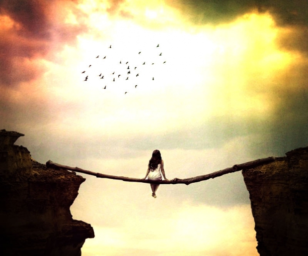

Радуга над пропастью

Настанет день, — говорит он вдруг, — и тебе придется решать, куда идти. И сразу надо идти туда, куда ты решил. Немедленно.
("Над пропастью во ржи")
С чего все началось? А в общем сейчас сам черт не разберет. Вот помню иду я, а еще утро, сыро, лужи от серного дождя... ох и гадство же эти кислотные дожди... так пройдешь по лужам и снова ботинки покупать. Ну так вот.. я шел-то не просто так, а Марьянке долг отдать.
Сегодня я богатый. Еще бы. Марат не поскупился - с лихвой мне заплатил на микрухи и прочую контрабандную шушеру. Теперь бы ещё дотащить файзеры для мыслеЧита Гарри-Гайке и не попасться...
Мимо меня проехала полицейская машина. Я вжался в стену, стараясь казаться как можно незаметнее, дескать, я пустое место, меня тут вообще нет и не было никогда, а сам внимательно изучаю трещинки на асфальте и радужные разводы в грязных лужах.
Машина остановилась. Сердце бешено заколотилось. Контрабанда как горчичник начала меня жечь из подкладки куртки. В ту секунду я поклялся что, если выпутаюсь - навсегда завяжу с контрабандой.
Из машины вышел полицейский и направился в мою сторону.
Бежать? Поздно...
А он, гад этакий, подходит все ближе и ближе…
- Молодой человек! - окликнул меня тучный страж порядка.
Я оборачиваюсь и смотрю на него. Чувствую себя как мальчишка-спартанец, которого из подкладки грызет лисенок... Мне жутко, но пытаюсь не подать виду.
Чтоб Гайка провалился со своим мыслеЧитом, пришельцами и опахалами от радиации!
- Вы здесь мужчину в черном помятом пальто с разбитым лицом не видели?
- Нет, - отвечаю сдавленным голосом.
В следующую секунду чувствую головокружение и спазмы в желудке.
- Вам плохо? - спросил полицейский, внимательно меня изучая.
- Ничего. Расстройство желудка.
Он кивнул с пониманием.
"Может, что-то заподозрил?", - промелькнуло в голове, - "Или все-таки они меня искали? А он, гад присматривается?""
- Если увидите этого человека - сообщите нам.
- Непременно сообщу.
После этого страж порядка направился к своей машине, а я продолжил свой путь, наступая в радужные лужи.
Особняки, дорогие машины.. а из них выходят пижоны в костюмах за триста зеленых и - просто пробивает на смех - наступают в те же самые лужи... а витрины так и сверкают, черт бы их побрал. Только они не для меня, а для тех пижонов за триста...
В общем, у меня ничего этого нет, но я свободен. Да, свободен, ничего тут не попишешь. Понимаете? Да нет, куда уж вам понять. Сейчас будете снова мне читать мораль про то, что свобода - это осознанная необходимость и прочее и прочее... А для меня просто все. Как все осточертеет - снова рюкзак, кожанная куртка, джинсы и кеды - и ухожу, куда глаза глядят.
А вот и "Тихий омут", родной, все та же забегаловка, притаившаяся в подвальчике и спрятавшаяся от взгляда нежданных гостей. Старая дверь заскрипела и заворчала, как вредная старушенция. Поворчала и пустила внутрь. А внутри все тот же гогот, музыка, полутьма и дребезжащий воздух от дыма. Красотища!
Из темноты меня окликает Лохматый
- Смотри-ка кто к нам заявился, уж никак Хвощ!
- Ну что, старик, а? как твоя жизнь многострадальная счастливится? - отвечаю
Подхожу к стойке, смотрю барменше Марьянке в глаза, молча, пронзительно, она умная, вопросов не задает, накапывает мне "думы дракона" и разбавляет шипучкой. Я смотрю еще пристальнее. Она пожимает плечами и накапывает еще столько же. Выпиваю запом. В тысячный раз проклинаю себя, что так сделал, чувствую себя индийским фокусником, неудачно проглотившим огонь, на глаза наворачиваются слезы. Виду не показываю. Хотя и так все видно. Она мне намешивает чего-то еще, такого темно-зеленого, вылечивающего простуду, душевные раны и кучу чего еще. Я беру бокал, иду за столик и пью мелкими глотками.
В глазах потемнело. Когда мрак потихоньку рассеялся, вижу, что в дверях нарисовался Ричи-Трудоголик. А следом за ним еще какая-то знакомая рожица.
Вот смотрю на него и думаю - а славный парень этот Ричи-Трудоголик, хоть и зануда. Ну да ладно, такие тоже бывают вполне ничего. Особенно, после второго коктейля, если на них не нахлынет эта противная сентиментальность.. ну знаете как... "...прихожу я с гитарой под балкон в таком-то доисторическом году, и при свете луны появляется она...". К счастью, Ричи не из таких. Наверное, он всю жизнь за колбами просидел, ни луны ни гитары у него не было. Только вот жаль человека - сопьется же.
И вот сегодня снова - заявляется, весь из себя задумчивый, подходит к стойке, что-то себе уныло заказывает, запом выпивает, затем садится ко мне и продолжает все тот же разговор и похоже, все с того же места
- Ну вот поэтому и говорю - завидую я тебе, понимаешь?
- Это с чего это мне завидовать?
Я уже потерял нить разговора со вчерашнего дня.
- Ээ, не поймешь. Незамутненное мировыми проблемами сознание.
Он грустно вздохнул. Глядя на его кислую мину до меня дошло, что, видать, причины он мне разложил по полочками еще вчера, а я как всегда все прослушал.
- Да понял я, понял, - хотя если честно, ничего я не понял, - да ладно, проехали. Сегодня я угощаю.
- Неожиданно разбогател, что ли? - Трудоголик скептически глянул на меня, приподняв левую бровь. Я только хотел сказать, что выиграл в лотырею, как его левая бровь тут же отбила у меня охоту врать. Сказал как есть.
- Марат за микрухи не поскупился, - говорю шепотом, придвигаясь к Ричи, - Чуть не спалился. Все, с меня довольно.
- И чем теперь займешься?
- Найду чего-нибудь - я поглядел в потолок
- Чего-нибудь это чего? Продолжишь ваять для Гайки мыслеЧит?
Я пожал плечами.
- Ну даже если и так. Твое-то какое дело?
- А к нам не хочешь вернуться?
К ним - это значит - в НИИ. Вот шутник-то! За эти крохи от звонка до звонка. Да что ж я, чокнутый?
- Ты парень талантливый. С головой. Да и руки у тебя золотые. Вот только дурень ты...
Как бы от него аккуратно отделаться? Неужели я попал?
- Ну ладно, ты мне скажи - какие новости?
- Гарри запустил мыслеЧит. А еще поймал колебания из космоса. Долго расшифровывал, построил теорию.
- И как?
- Да как-как. Я выключил микроволновку - колебания и прекратились. Теперь клепает штуковины для связи с пришельцами. Точнее, я ему клепаю.
Мы с Ричи заказали еще по стаканчику, он что-то недоразумное, а я - "думы дракона". На этот раз пил мелкими глотками.
- Ладно, старина, у меня есть на примете кое-какая работенка. Есть знакомый хороший, он тебе позвонит.
- Да брось.
- Не брошу.
Вот уперся. Узнаю.
- И еще, Хвощ, - начинает заговорчески Ричи, - есть у меня кое-что для тебя.
Он лезет в сумку и с заговорческим видом достает оттуда помятую замасленную зеленую тетрадку.
- Я храню её уже много лет. Признаться, поначалу я не знал, что с этим делать. Сначала думал отнести в первый отдел. Потом - выкинуть на помойку. А теперь решил, что отдам её тебе.
- Что это? - спрашиваю, делая глоток из своего бокала.
- Помнишь помню аварию в нашем ФХО? Ты был еще маленький, но не мог не слышать.
Помню, - отвечаю сухо
Ведь это случилось как раз после того, как погиб дядя Эдгар... На душе так противно стало. Ведь он мне по сути заменил отца!
Дядя Эдгар.. почему ты меня оставил в тот момент, когда ты мне был так нужен!
- Не стоит верить всему, что здесь написано. Это дневник одного бывшего СБР-овца - это тебе не хухры-мухры. Однажды этого дядьку контузило, он получил ранение в голову, после чего окончательно выжил из ума. Вот и понаписал редкостный бред.. Даже Гайке с его инопланетянами до него далеко... Ты даже не представляешь, чего они пытались изобрести в нашем НИИ, если верить тому, что понаписал Зак. Но здесь есть кое-что о катастрофе и смерти твоего дяди. Даже немного о тебе.
- Обо мне? - удивился я, машинально протягивая руку к старой зеленой толстой тетрадке, - но с какой стати здесь может быть что-то обо мне? Я тогда был еще мальчишкой...
- Полистай, - задумчиво сказал Ричи, - я сам нашел эту тетрадку, когда разбирали завал после пожара. Все думали, что от документов Закария Шоннера ничего не осталось... однако ж, нет.
Я открываю тетрадку и пытаюсь разлепить пожелтевшие страницы.
- Да уж, пишет как курица лапой, - заметил Ричи
Разобрать что-либо сложно, я напрягаюсь и прищуриваюсь.
"...В черном плаще, с головой грифа, опущенной на бок и глядящей на меня немигающим взглядом, стоял он. Возвыщающийся надо мной как скала, гневный жрец, ненавидящий всех и вся.
А за ним жадно поглощало своими лучами пустыню белое испепеляющее солнце."
- Что это? - спрашиваю
- Там полтетради галлюцинаторного бреда. Читай выборочно, - равнодушно ответил Ричи, - Заку все время мерещилась пустыня, где его почти отправили на тот свет. Мало того - от постоянных острых болей ему прописали лаудатрикс. Да не смотри на меня так! Зак к нему пристрастился и начал потреблять в немеренных количествах, от чего у него полностью снесло башню.
Тут к нам из неоткуда подсаживается Лохматый. Я закрываю тетрадку.
- Сегодня я угощаю. Я сегодня богатый, - говорю
Он на меня покосился хитрым глазом. А я ему сказочку про лотырею рассказал. Вряд ли поверил. Но вид сделал.
- Что-то народу мало как-то, - говорю
- Так это без Фикуса тихо. Он один десятерых стоит. Но теперь он птица другого полета. он здесь теперь не появляется. У него пентхаус в шикарном отеле, у него шикарная гитара, шикарный синтезатор. Он теперь звезда.
Это мы его в свое время Фикусом прозвали. А он сам виноват. Нечего было себе придумывать сценический псевдоним - Рикус. Выделиться захотел - получи!
- И как ему только эта Магма в голову пришла? Ничего себе - проснулся знаменитым! Видимо, крепко головой стукнулся обо что-то.
- Или яблоко ему на голову упало.
- Отравленое.. из райского сада, - пробормотал Лохматый, который уронил голову на локоть и потихоньку задремывал.
Сидим. Я разглядываю пузырьки в стакане, Ричи снова углубился в какие-то ему понятные темы, "замутненное мировыми проблемами сознание", а Лохматый под его рассказы потихоньку похрапывает.
Через некоторое время Ричи прервался и отлучился по "неотложным делам". Я снова открыл тетрадку и начал читать...
***
В черном плаще, с головой грифа, опущенной на бок и глядящей на меня немигающим взглядом, стоял он. Возвыщающийся надо мной как скала, гневный жрец, ненавидящий всех и вся.
А за ним жадно поглощало своими лучами пустыню белое испепеляющее солнце.
- Это ваши выкормыши, Закарий, ваши! - вешал жрец, проклиная всё и вся, и солнце как грозный бич заполонило все небо.
Я сижу посреди пустыни, надо мной возвышается это чудище, зной сводит меня с ума!
- Вы про слухи о психотронном оружии добра и любви? - спрашиваю его пересохшими губами.
- Это не слухи, - эхом звучит в голове его птичий голос, - В тайне от меня Игнат Ренмайер начал разработку психотронного оружия, которое согласно его замыслу должно разбудить в людях любовь и милосердие и тем самым разрешить все военные конфликты.
- И вы в это верите?
За что он ненавидит всех и вся? За что он проклял землю? За что он хочет уничтожить нас, этот неистовый жрец?!
- Мы проморгали эту язву у нас под носом! Он не повинуется никакой дисциплине.. мало того, он всех его аспирантов, лаборантов, даже другие лаборатории умудрился сплотить вокруг себя. Я уж не знаю, чего он с ними сделал, но и они все сбрендили.. носятся с этой его идиотской идеей! Это же секта!
Невыносимая жажда, грудь ноет. Воды!
Обессилевшей рукой я потянулся за стаканом, парящим над столом и дрожжащим, как мираж.
Жадно выпил несколько глотков, в глазах потемнело, в груди на миг возникла нестерпимая боль. Все стихло. Я зажмурился.
Я открыл глаза и очутился в своем кабинете.
Передо мной, в черном пиджаке, высохший как мумия, с осунувшимся птичьим лицом, худой и длинный, стоял директор НИИ ФХО, Казимир Шутц и проклинал все на свете. Вдруг он замолчал
- Вам плохо? - спросил он с наигранным участием
- Все нормально, - спокойно ответил я, - май в этом году чересчур душный. Жарит как на сковородке.
Чертово ранение, будь проклята эта контузия!
Меня с почетом наградили, дали "героя" и.. списали со счетов! Отправили в ссылку, сделав наместником в этой дыре.
- Нате, посмотрите, что его аспирант законспектировал на презентации! - не унимался Казимир, - Читаю отдельные выдержки: "необходимо оружие добра, чтобы... необходимо разрушить" - ооо, смотрите, они от слов переходят к делу, они уже к войне готовятся! Закарий, с этим срочно надо что-то делать! Ренмайер на своих презентациях устраивает шабаш.
- Вообще-то, заниматься разработкой психотроники - их прямая обязанность, - отвечаю, - а уж под каким соусом они это подают - другое дело.
Казимир всех ненавидит. А больше всех он ненавидит меня. Хотя всегда тщательно скрывает это за любезным участливым тоном. А как же иначе? Он привык себя чувствовать как царь и бог, единственный, принимающий решение и выносящий вердикт, всеведающий, великий.. Но что-то пошло не так. Перекройка, война в кабинетах, в результате чего служба безопасности посадила своего "наместника" в моем лице, который должен контролировать все и вся. И ничего не должно идти в обход моего всеведающего ока... и даже его, Казимира, епархию, я должен контролировать особенно тщательно. Его это бесит, из себя выводит, на изнанку выворачивает, аж тошно.. А он улыбается. И мы о чем-то договариваемся, играем сложную партию.
- Ренмайер должен заниматься разработкой индуктора боли - 43-К. Мы были полностью уверен, что их лаборатория занимается именно этим проектом - я получал регулярные отчеты. Но недавно вскрылась правда. Я вызвал его и поставил вопрос прямо. И, видите ли, он отказался заниматься 43-К! Какое право он имеет отказываться, черт возьми? У нас что, частная лавочка?! Между прочим, ваша же контора сделала заказ на разработку индуктора. Нет-нет, говорю вам, этот человек очень опасен. Вот, подпишите, пожалуйста здесь и здесь. Без вашей подписи я не могу уволить начальника лаборатории.
- Я подпишу, только дайте мне возможность разобраться в ситуации самому.
Теперь это - моя арена.
И кто бы мог подумать, что я закончу свою жизнь, как канцелярская крыса!
А ведь я еще не старик...
Казимир распахнул черную папку и пихнул мне какой-то листок. Быстро состряпали. Умеют же гады работать, когда им надо. Нет бы так оперативно науку двигали.
- Да что там разбираться! - его скрюченные птичьи пальцы сжались.
- Это уж мне решать, - сказал я, чтобы его позлить, хотя не сомневался, что подпишу, - выслушаю обе стороны...
Хуже места нет на всем свете!
Вроде научно-исследовательский институт - цвет интеллигенции. А на деле - сплошные доносы, склоки, ругань, воровство, самодурство, разгильдяйство, на фоне всего этого - ученые не желающие никого слушать и занятые своим "великим" делом, эксперименты, не вписывающиеся в план, раздел грантов и субсидий с кровью, с пеной у рта, с рваньем на себе волос.. И за всем этим должен следить я!
- Хочу выслушать обе стороны и изучить бумаги, - отвечаю, - Казимир, пришлите Ренмайера ко мне. Продолжим разговор позже.
Казимир не стал долго расписаться, на этот раз он покинул мой кабинет довольно быстро.
О, проклятое место! Завершу свой "срок" и уберусь отсюда на какой-нибудь остров. Видимо, мне и правду пора на досрочную пенсию.
Крысятник! Это же настоящий крысятник!
И в придачу май выдался адский - окна создают эффект линзы, жара сводит с ума. Все окна распахнул - не спасает, идет дым с завода, едкий серный дым.
Мои мысли прервал телефонный звонок.
- Господин Шоннер, Игната Ренмайера нет на месте. Он вернётся минут через пятнадцать. Я передам ему, что вы его ждёте, - донёсся из трубки юношеский голос. Видать, аспирантик.
Что ж, подождём.. как раз настало время принимать лаудатрикс… чувствую, как на ладонях и на лбу выделились капли пота. Болит всё до чертиков!
Лаудатрикс, будь он проклят, спасение моё, что мне прописал наш великий лекарь после того, как стало понятно, что я не отдам коньки.
Принимать при острых болях, при приступах. Только соблюдайте осторожность - чем дольше вы его принимаете, тем сложнее вам будет от него отказаться.
Поднимаюсь, тяжело облокотившись на стол, пошатываясь подхожу к сейфу - ну что же я, ей богу, за развалина такая - и дрожащими руками достаю заветный пузырек…
Я уже мысленно представил себе фанатика-маньяка с огнем в глазах, готового сокрушить мир ради великой идеи принести миру добро.
Я представил, как Игнат Ренмайер фанатичными речами фюрера переманил на свою сторону своих подопечных в лаборатории, как аспиранты и студенты вскидывают руки в едином порыве и выкидывают из окна нашего главбуха Альберта Гольфингера...
как он ставит эксперименты на людях, пичкает их излучением и наркотиками, получая бесчеловечного всемилосердного монстра Франкенштейна...
"Оружие добра".. звучало у меня в голове!
Положу этому конец сегодня же!
А Казимир в моей голове продолжал вешать:
- Читаю дальше.. в журнале этого аспирантика написано - разбудить совесть! Нет наказания страшнее совести. Вы слышали, Закарий, а? Наказания!
***
- Редкостный бред, правда? - спрашивает незаметно вернувшийся Ричи
- Да уж, похоже, и правда выжил этот контуженный дядька из ума. Оружие добра… сильно! И в этом НИИ работал мой дядя… похоже, он там был единственным здравомыслящим человеком.
Листаю тетрадку. На очередной странице была разлита какая-то темная маслянистая жидкость, текст не разобрать и пальцы испачкал…
- Так вот я говорю, наш НИИ... - затянул Ричи длинный экзистенциальный монолог.
А мимо протянулся Гарри-Гайка и повел ухом в нашу сторону - не о деле ли мы говорим? Затем глянул на длинноногую блондиночку понятного рода деятельности - дескать, я вовсе не вами тут интересуюсь, вы мне даже мешаете, панораму загораживаете. Гарри-Гайка вообще легендарный человек... начинал он простым лаборантом местной НИИ... как с гордостью, окруженный ореолом великой тайны говорил о себе - занимаюсь секретными разработками в области ядерного оружия... на деле-то только и занимался, что создавал разного рода полимерные губки, которые потом куда-то отвозили и в них вроде бы даже электроны застревали.. или я чего не понял... но затем очень прославился тем, что создал чудо-машину - я сам к ней цветовую гирлянду прикручивал - в нее засовываешь какую-нибудь хитромудрую штуку, она постучит-покряхтит и выдает некий коэффициент икс-джи-псевдоконцентрирования. Случайно не знаете, что это такое? Даже не пытайтесь сделать вид, что когда-то это уже слышали. Никто не знает. А вот он, когда приехал с докладом об этом самом икс-джи-псевдоконцентрировании никто, естественно, тоже не понял, что это за штука такая, но всем стало крайне стыдно и неловко за свое невежество. Ну Гарри не будь дураком в свое время деньги заколачивал за то, что продал несколько экземпляров этой самой машины. А потом, видать, надоело ему это все.. я уж не знаю, стал ли он доктором каких-нибудь псевдоконцентрических наук или нет, но после этого он быстро переключился на крем от радиации, подушки, которые избавляли от страшных снов и опахала, отгоняющие плохую энергетику. Помню, сидел года два, затем вышел, все свои опахала забросил, все бросил и уехал на восток к местным шаманам.. уж не знаю, чего он там делал, но как вернулся - организовал собственное учение и прослыл местным гуру, проводником к тем местам, где придется пережидать конец света. Только вот одна незадача - для него, конечно, - конец света так и не наступил, поэтому проводник остался без работы... Затем начал водить к тем местам, куда в час икс должны будут прилететь инопланетяне, чтоб наконец-то войти с нами в контакт. Но, похоже, умные ребята эти пришельцы - видят... не доросли еще. И тут Гарри остался без работы - пришельцы подкачали, вопреки всем его стараниям так и не соизволили появиться. Гарри пролетел. А потом его осенило - пришельцы уже давно здесь, живут в электромагнитных полях, а сейчас ждут-дожидаются, когда настоящие войны света с ними свяжутся с помощью его чудо-приспособлений. Ну а поскольку еда нужна даже таким сумрачным гениям, он потихоньку проворачивает разные дела. В определенных кругах он довольно известная личность. Вот уж кому точно полиции попадаться не стоит. Хотя не удивлюсь, что он и им зубы заговорит. И вот сейчас ходит и вынюхивает, как бы сбыть всякую мелочь контрабандную, да подороже...
А Трудоголик, зараза, все это время чего-то рассказывал. И вот, поймал меня неожиданным вопросом.
- Ну так что ты думаешь на этот счет, а, Хвощ?
Упс.
- Я думаю, что ты прав.
- Серьезно? Это насчет Энштейна или насчет Кротовых нор?
- Насчет обоих.
- Ну ты как всегда, чтоб тебя.. я же про микрухи рассказывал.
Ну чего тут скажешь?
- А у нас на участке кроты все перерыли, хы, - пробормотал сквозь сон Лохматый, - такие норы, чтоб их.. что мы только с ними не делали...
Понял, что пора делать ноги. Ричи балаболит, Лохматый дрыхнет, лучше не придумаешь. Не помню, как выкрутился их этого разговора. Иду к выходу. И тут меня Гарри Гайка настигает. Говорит - так и так, починить чудо-машину надо, вечером жду тебя в подвальчике, инструменты захвати. Или от кутежа на Маратовы деньги голова кругом пошла?
Вот же черт проницательный, откуда все пронюхал? Неужто его МыслеЧит и впрямь заработал?
Куда деваться - приду. Все равно уже все промотал ведь.. ну или почти все..
Иду домой и думаю... механизм какой-то в мире разладился. И люди другие стали. Все попрятались за высокими заборами, за стальными дверями. В норках. Как кроты.
В подъезде мне подмигнула подбитым глазом старая лампочка и погасла. Кто опять разбил плафон?
Достаю ключи и вижу, у почтового ящика Ева стоит, чего-то там высматривает. Я так и не посмотрел почту. С детства крысу эту невыношу. Столько пакостей ей сделал, пока учились, и косички к стулу приклеивал, и жуков в волосы совал, и крысу дохлую клал перед дверью, звонил и убегал. А потом слышал, как по всему подъезду разносился фирменный си-бемоль тети Сары - Роман! Ну я до тебя доберусь!
И не добиралась.
Кто-то не любил Еву за то, что она еврейка, а я - за то, что она играла на скрипке. О да, вы, наверное, представили себе такую фею в облачных одеждах, играющую на сцене что-то из того, что уносит за горизонт преземленной реальности и я - изверг, мешающий ей жить. Не дождетесь! Все обстояло ровно наоборот. Представьте пилу. Обычную такую пилу. Представьте, что кто-то этой пилой скребет по металу, по стеклу, по вашим нервам, в конце концов. И так изо дня в день. Я сделал все, что мог, только чтобы этот ад кончился. Я даже чуть не взорвал музыкальную школу, где она училась. Но скрипка победила. Это было одно из немногих моих поражений. Которое я до сих пор не могу простить этой маленькой хрупкой девушке крысиной наружности. Сколько ж раз мне хотелось ее придушить!
Поворачиваю ключ в замке. Вхожу и захлопываю за собой дверь. Погромче. Чтобы Ева там вздрогнула и почувствовала всю силу моей неприязни. И только тут соображаю, что я же с позавчерашней ночи домой не заявлялся. Вот черт! Сейчас будет разговор...
Дома меня встречает тётя Мара с кроссвордом.
- Роман погоди, у меня еще по вертикали слово осталось, на букву Ф. Персонаж Мэри Шелли. Знаешь такого? А, уже сама догадалась. Суп в холодильнике, подогреешь сам.
Запираюсь в ванной. Чертыхаюсь про себя. Смываю с себя Элку, шефа и весь вчерашний день. На тумбочке пузырек с таблетками. Теми, которые Маре прописывает в безмерных количествах ее подруга врачиха. Полупустой. Это ж надо, за ночь она махнула половину. Однажды придушу эту врачиху. Хотя, видимо, уже не поможет. Неужели это я довел ее до такой жизни? Ну поймите же, не могу я, не могу оправдывать все ваши ожидания, ну почему я всем вам должен? Ведь все же рождаются свободными, без долгов, когда же я успел столько этому миру задолжать? Не хочу так, как надо.. а что я вообще хочу? Видимо, я из тех людей, которые не знают, чего хотят, зато точно знают, чего они не хотят. А я не хочу фальши. Я жить хочу. Жить.
***
Где-то ближе к полуночи спускаюсь в подвальчик. Тусклая лампочка, дверь нахожу почти наощупь. Звоню в противный звонок. Жду. Тишина. Затем какой-то шум. Дверь открывается, на пороге стоит Гайка, в белом халате - ай, красавец! Доктор наш псевдоконцентрический.
- Где тебя носит, скажи мне на милость? У меня уже начался Сеанс Связи...
Во фразу "Сеанс Связи" он умудрился вдохнуть весь сокральный смысл, который у него был с собой, - а еще скажи мне, какого черта ты звонишь? Сколько раз повторять тебе - стучи. Инструменты принес? Проходи давай, не стой, а то _этих_ еще накликаешь на мою голову.
Прохожу. Не подвальчик, а лабиринт с препятствиями.
- Так.. аккуратнее, здесь провод, только наступи ты мне на него.. так, здесь микры лежат, переступи..
Так, по стеночке, где-то перепрыгивая, где-то на одной ноге, добрались до "Зала", так он называл это помещеньице.
В зале по кругу сидели люди с какими-то бандурами на головах. Это скорее походило на спиритический сеанс, только вместо хрустального шара по центру располагалась чудо-машина, от которой к бандурам на головах шли провода.
- Подожди, - шепнул он мне, - присядь
Он был явно завышенного мнения о моих сверхспособностях. Я за всю свою жизнь так и не научился сидеть на воздухе. А с учетом того, что в обозримом пространстве не было даже паршивой табуретки, я сел на пол и прислонился спиной к стене.
- Вы готовы? - прошептал он как можно более торжественно? - вы ощущаете вибрации?
- Да, - словно шелест листьев по кругу прокатился выдох
- Сейчас мы начнем Связь
Он повернул ручку хитромудрого прибора, которую я прилаживал ему на прошлой неделе, затем понажимал несколько кнопок, причем каждый раз выжидая и замирая, какую реакцию это вызовет, последним нажатием он торжественно включил старенький четырехканальных осциллограф.
- Вы слышите?
- Слышу.. слышу.. - отозвался "зал", - "что это" - это музыка? - ветер? - какая странная музыка..
То ли дело, странная.. ее еще пьяный Фикус, нищий и незнаменитый, записал в свое время, промахиваясь по клавишам синтезатора.
- Я слышу, - прошептала какая-то женщина из круга
Я посмотрел на нее и удивился - ее-то как сюда принесло? Встретишь такую на улице, или в магазине - никогда не подумаешь, что она может посещать подобные мероприятия. Что у нее общего с этой толпой разношерстого сброда?
- Что ты слышишь? - спросил Гайка
- Слышу.. это..
- Это они? Ты чувствуешь контакт? Это мыслящие черепахи?
- Лукашик.. это ты? Лукашик, сынок!
- Дура! - донеслось из зала.
- Лукашик, ты там, Лукашик? Как ты туда попал? Как они тебя туда запихнули? Я же знала, что ты жив.
На нее зашикали, а она вдруг начала плакать навзрыд.
В этот момент я готов был предушить Гарри Гайку.. хватаю его за рукав, вытаскиваю в темноту и громко шепчу - ах ты гадина проклятая, спекулируешь, значит, чужим несчастьем..
И тут эта женщина выходит, Гайка в сторону отскочил, а она идет и смотрит прямо на меня..
- Он ведь живой, правда? Все думали, что он утонул, а я знала.. я чувствовала.. сердцем чуяла.. что инопланетяне эти его оживили, у них же технологии другие, не такие, что у нас, правда? - и смотрит на меня в надежде, - все говорили, что он умер.. а я прихожу сюда и слышу его.. иногда он шепчет.. так тихо, как в детстве, когда гроза.. знаете? дети боятся молний, а он не боялся..просто шептал.. мама, завтра будет солнце. И сейчас.. он там.. хотя солнца уже давно нет.. он шепчет. Мама.. завтра будет солнце.
Ведь он же жив, правда?
- Ну конечно, конечно жив, - говорю я.
Я не мог поступить по-другому, понимаете? Поддерживаю этот обман. Хотя у нее совсем крыша поехала.
- Я знаю. Они ведь спасли его?
- Спасли, конечно, что им стоит, - отвечаю. И в эту самую минуту я верил в это. Я бы убил кого угодно, если бы кто-то сказал, что ее сын утонул. Он был жив. И точка.
- А почему он не возвращается домой? - спросила она меня, словно оракула, который имел ответы на все вопросы
- Он не может, - бросил я первое, что пришло в голову
Она глядела на меня вопросительно, озвучивать вопрос смысла не имело
- Он же теперь живет в этих электромагнитных волнах, астрально-ментальном поле. Но он в сознании, он вас любит.
- Спасибо вам.. я знала.. Он мне об этом сам рассказал. Вчера.
Женщина вытерла слезы маленьким аккуратным платочком, попрощалась и ушла прочь.
Гайка повернулся ко мне:
- Жив, говоришь?
- Жив, - ответил я
- Дурак.. полез в речку, ну и утоп. Там яма на яме в реке. Не нашли.. А она верит.
- Да пошел ты к чертям!
- Тогда почини, будь добр, мой МыслеЧит
Не говоря больше ни слова, Гарри вернулся в "зал"
Дешевый спекулянт... Нельзя так. А как можно? А как лучше? Может, лучше иногда во что-то верить? А тот, кто хочет верить, все равно он же во что-то попадет. Гарри просто экспериментатор, он хочет добраться до своих инопланетян. Плевать ему на чью-то судьбу. Но, по крайней мере, он не желает обобрать их до нитки. Это лучше, чем попасть в какую-нибудь секту. Или на больничную койку. Хотя все равно все это противно. Противно видеть эту аккуратную женщину в среди этого сброда. Она ведь, черт возьми, душу свою здесь открывает, оставляет что-то самое сокровенное, а эти пялятся стеклянными глазами в космос, то рыдают, то гогочут как гиены, кривляются, матерятся, передразнивают.. хотя, может, наговариваю я на них.. в них тоже есть что-то человеческое. Я запутался. Я уже и не знаю, как правильно...
Вернусь домой и полистаю зеленую тетрадку. И там сумрачные гении что-то изобретают...
***
Я не увидел в его глазах фанатичный огонь.
Я увидел свет.
И мне сразу стало спокойно.
Так спокойно, как мне не было уже миллион лет.
Он глядел на меня - в длинном белом халате, худощавый, немного осунувшийся. Волосы его золотились в лучах утреннего солнца.
Мужчина лет тридцати с лишним, с добрыми, но печальными, глубокими глазами, словно два озера.
Я глядел на него, а он глядел на меня.
Это и был Игнат Ренмайер.
Эта тонкая фигура в белом одеянии, казалось, не вписывалась в мой, заваленный бумагами и кипой старого хлама, кабинет. Но, в то же время, он преображал его. Весь кабинет наполнился Игнатом, словно это был не человек, а аромат.
Аромат чистый, глубокий... знающий и печальный.
А ведь, если уж на то пошло, я не сильно старше его! Так почему же я уже выгляжу как старик? Чертова пустыня, чертова операция, чертова война! Почему я ощущаю себя стариком?
- Присаживайтесь, - говорю я ему.
Он сел напротив меня, продолжая спокойно улыбаться
Я до сих пор помню, как в эту минуту у меня пронеслось в голове: "Вот так и должен выглядеть настоящий ученый"
- Давно собирался с вами поговорить.
- Я слушаю, - спокойно ответил он.
Я пролистал лабораторный журнал того самого аспиранта, что конспектировал последнюю презентацию
Прежде, чем перейти к делу, я по привычке решил поизучать этого человека. Мы заговорили о его лаборатории. О текущих проблемах. Об экспериментах. О людях, наконец.
И Ренмайер никоим образом не выглядел как фанатик. Он произвел на меня впечатление удивительно вдумчивого человека, спокойного, скрупулезного.. и доброго. Такой разительный контраст между ним и его презентацией немного сбил меня с толку.
Неужели у него двойное дно?
Я призадумался.
- Игнат, почему вы отказались участвовать в проекте 43-К, подписанным лично Казимиром Шутцем?
- Я считаю, что ученый - это в первую очередь Человек. А уже во вторую очередь - ученый. И человечность превыше науки.
- Вы поэтому отказались участвовать в этом проекте?
- Я считаю, что мы не имеем право заниматься такими вещами, поскольку в последствии они будут использованы против людей.
- Против врагов.
- Против людей. Я отказался участвовать в разработке индуктора на основе селективного задействования медиаторов, активизирующих болевые рецепторы...
- Хорошо. Вы считаете, что разработка оружия, не трогающего даже волосок на вашей голове, но причиняющего адскую боль, бесчеловечна?
- Человек сам вырвет на себе все волосы от боли.
- А если враг изобретет такое оружие? Если это сделаем не мы - это сделает кто-нибудь другой. Свято место пусто не бывает.
Глаза его сделались совсем грустными.
- Скажите, Закарий, разве вам самому станет от такого понимания легче? Легче видеть, как мучается человек, оправдывая себя этим заклинанием?
- Но ведь если мы этого не сделаем, однажды они придут в наши дома и уничтожат все, что нам дорого!
- Я понимаю вас. У вас на глазах люди превращались в зверей, полностью пряча в себе человеческое. Я же предлагаю другое - разбудить в них Человеческое. Научить. Спасти. Дать выйти свету, что живет внутри вас. Кого за всю историю чему-то научила слепая адская боль? Милосердию? Состраданию? Нет, Закарий, нет.
- А что, если в человеке этого человеческого вообще не осталось? А может - и не было никогда, а? Что тогда?
- Внутри каждого есть свет.
- И внутри полчищ тех зверей, что готовы были тогда нас растерзать? (Я осекся - не сказать бы лишнего. Это была тайная операция). Внутри них тоже есть свет?
- В каждом есть свет. Просто некоторые его прячут в самую глубину, держат его под семью замками. Я хочу лишь малого - освободить в человеке Человека.
- И внутри Казимира - тоже есть этот ваш свет? - усмехнулся я
- Конечно. Просто он... несчастный. Жизнь его искарежила, впихнула в эти условия, измяла...
- И никто не виноват? Никто?!
- Может, и виноват. Но зачем вам их судить? Лучше помогите им.
- Ага.. подставь другую щеку.. какая там еще ересь?
- Не так.. не отвечай злом на зло. Не делай зло из зла - так оно расцветает на благодатной почве. Делай добро из зла, наподобии того, как в подвале в третьем цехе работает конвертор. Он получает на вход мусор, перерабатывает и выделяет материал, который идет в производство.
Некоторое время мы глядели друг на друга. Как же ладно он все говорит.. только вот абсолютно нежизненно.
Я встал и налил нам чая. Нога разболелась так, что я чуть не взвыл, но виду не показал. Ненавижу, когда люди замечают мои слабости. Я привык быть сильным и принимать боль как вызов стоящего противника.
- Вы на последней презентации говорили про "оружие добра"? - спрашиваю
- Я? Никогда я такого не говорил.
- Но как же? Вот, глядите, один ваш аспирант конспектировал вашу последнюю презентацию..
- А.. этот с чудным рюкзаком.. да, он все конспектирует. Хороший парнишка. Исполнительный. Но он опять ничего не понял. Сколько же я его просил - ничего не пиши лишнего в лабораторном журнале кроме фактов, результатов, экспериментов.. Он все конспетирует, как примерный студент. Если бы еще понимал, что конспектирует... Представляю, что он там понаписал.
- А как же было на самом деле?
- Я говорил, необходимо в первую очередь вооружиться добром, прежде чем переходить к научным изысканиям. Что-то вроде этого. Ни о каком тогда психотронном "оружии добра" я и близко не говорил. Да и не может быть такого оружия, поймите. Нельзя взять, облучить чем-то людей и сделать всех добрыми и милосердными. Так не бывает. Добро в душе взращивается, пропалывается, тщательно выдергиваются сорняки.. оно должно быть вымученным, выстраданным.. это на самом деле очень большая работа! Человек не рождается добрым и милосердным. Человек к этому приходит.
***
Дзииинь!
Карусель развалилась, лошади разбежались, тигры сожрали зебр, которые сожрали жаб, которые сожрали лилии, которые сожрали солнце, которое сожрало тигров.
Дзиинь!
Мир разбился вдребезги.
Дзиннь?
Не открывая глаз восемью руками я взял восемь телефонов.
- Алло?
Если бы мне ответили гигантские мыслящие черепахи, я бы спросил, почему они не отдают Лукашика.
- Роман Горьски? Вас беспокоит Альберт Шац.
- Слушаю вас, - проговорил я дрожащим голосом
- Надеюсь, я вас не разбудил?
- Нет, конечно. Хотя, есть немного.
- Вчера мы говорили с Ричардом насчет вас. Мы можем переговорить сегодня, скажем, часа через два?
- Конечно, а где?
Я начал тянуть время. Не мог же я признаться ему, что я вообще не понимаю, о чем идет речь.
Я приоткрыл один глаз. Вязкое туманное утро пробиралось в комнату сквозь занавески и прикрытую форточку.
Утро оно как вор.. пролезает через форточку. Если ночью форточку не открывать, утро не наступит.
- Давайте, может быть, у меня в кабинете. Кабинет 312. Хотя, можете не запоминать, спросите, в регистратуре, где найти доктора Шаца.
- Хорошо.
- В два тридцать вам удобно?
Я хотел спросить, сколько сейчас времени, но передумал, чтоб не показаться ненормальным.
- Удобно.
- Хорошо.Тогда до встречи.
- До встречи.
- На всякий случай уточню - Ричард объяснил вам, как к нам проехать? У нас довольно глухое место.
Вот олух! Адрес-то я не спросил.
- Только в общих чертах.
- Голос в трубке начал мне объяснять, как проехать, я поднялся и даже что-то чиркнул на листочке, в глазах потемнело, в ушах звон. Через секунд пять зрение вернулось и я записал остальное.
- Значит, в два тридцать жду вас у себя.
С этими словами он повесил трубку.
Я снова упал на подушку. Вот она. Долгожданная расплата за вчерашний день. Голова раздваивалась, растраивалась, раздесятирялась, а я проваливался, проваливался.. как Алиса в колодец.. а ему ни конца ни края. Мне снилось что я встаю, одеваюсь, выхожу, затем я просыпался, понимал что сплю, вставал, одевался, выходил.. затем просыпался... и это не кончалось никогда.
Чтобы встать, мне надо было отыскать мои руки, ноги, туловище и голову.
Когда я все-таки встал, на часах было час тридцать. И это при том, что ехать мне было к черту на куличики. Быстро умылся, на ходу что-то перехватил, глянул в зеркало, ужаснулся и проклял все на свете, в автобусе долго проверял, что я на самом деле проснулся. Еще раз проснуться, перекусить и выскочить я не вынесу.
Сижу, моргаю, пытаюсь вытрясти из головы навязчивый сон и только тогда вспоминаю, о чем речь. Е-маё! Я же еду устраиваться на работу. В таком-то виде.. ну ничего, придется выслушать вежливое "вы нам не подходите" и поехать обратно досматривать сон. Или снова завалиться в "Тихий Омут".
Только жаль этого бедного Шаца, он так старательно излагал мне маршрут, что не хочется его как-то разочаровывать. И Трудоголика подставлять тоже не хочется. Может, сбежать, а? Позвонить трудоголику, сказать, что хворь какую подхватил, чтоб он перед этим Шацем за меня извинился, или даже Шацу позвонить и сказать, что меня вызывают за бугор на срочную конференцию.. тьфу! заврался совсем. На какую еще конференцию? Я же это слово за три раза выговорю в моем-то состоянии.
В регистратуре сразу решили, что я болен и спросили, записан ли я на прием к доктору Шацу. Не мудрено. Лишь когда я назвал свою фамилию, женщина в окошке недоверчиво покосилась на меня и прошипела: кабинет 312. Да, не забудьте бахилы, молодой человек.
Я надел бахилы и поплелся на третий этаж. Ох уж мне эта их чистота, воняющая хлоркой, не по себе становится.
Перед кабинетом я остановился. Может, не идти? Сказать, что селедку с молоком съел?
Стучусь.
- Входите.
Я аккуратно захожу.
Маленький кабинет, но опрятный, в нем сидит за маленьким, но опрятным столом такой же маленький, но опрятный мужчина. Неопределенного возраста, еще не старик, но уже не молод. Смотрит на меня и улыбается. Причем искренне так, по-доброму. Наверное, решил, что я пациент.
- Роман Горьски?
Опа. Понял, все-таки, кто я такой.
- Да, это я.
- Проходите, присаживайтесь.
Я прошел и присел.
- Ричард много рассказывал о вас. О ваших навыках, о ваших золотых руках.
Я потупил глаза.
- Вы себя неважно чувствуете?
Я кивнул.
- Да, приболел. Работал всю ночь, время сейчас такое
Доктор кивает. Все понял, на то он и доктор, чтоб понимать. И даже не упрекнул меня, что я опоздал. Только сейчас я заметил, что на часах уже три.
- Выпейте чаю. Поможет вам взбодриться, очищает организм. Древние знали толк в чае. Это китайский.
Пью чай мелкими глотками.
- Вы же имели дело с преобразователями серии МРК-312?
- Да, но это было давно. Я их сам собирал, когда был лаборантом
- Прекрасно. Теперь мы используем преобразователи более новой серии на их основе, их недавно завезли. Мы снимаем показания с некоторых приборов, подробнее расскажу потом, все показания должны заноситься в единую базу и быть доступны из единого центра. При этом должен быть удобный доступ к этой базе, чтобы любой врач в любой момент мог быстро узнать, какие характеристики были измерены прибором в такой-то день для такого-то больного. Более подробно вам расскажет мой ассистент. У вас будет широкий спектр задач. Но я думаю, вы справитесь. Рабочий день с восьми утра до пяти вечера.
Я взвыл про себя. Это уже слишком! Вы меня вообще за кого держите?
- А попозже нельзя?
Доктор Шац развел руками и улыбнулся.
Пора делать ноги. Но тут я вспомнил вчерашний разговор с Гайкой о том, что его в последнее время идут немного туго и платить он мне пока не будет. Но это ничего. Все устаканится. У кого-то где-то выборы, птицы летят на юг и прочие сезонные изменения. Но пока надо перебиться.
- Да, насчет оклада. Официально, сами понимаете.. время сейчас тяжелое. Но у нас есть возможность платить вам хороший оклад.. на руки. По сегодняшним меркам, не самый плохой.
И я согласился.
Доктор пожал мне руку.
- Да, есть еще маленькое временное неудобство. Пока что, у нас нет свободных кабинетов. Вам придется расположиться в палате 408. Там лежит одна пациентка, палата расчитана на нескольких человек, но подселять к ней мы никого не хотим. Это сложная пациентка. Заодно мы сможем убить двух зайцев. Пока вы будете работать, вы сможете за ней последить. Иногда это бывает необходимо. Мы не можем позволить себе нанять для нее частную сиделку.
Инженер-сиделка! Вот это здорово! Это то, о чем я мечтал всю свою жизнь.
Теперь понятно, что они с радостью готовы взять любую шпану вроде меня. Видимо, все инженеры от них поразбегались.
Представил себе такую картину: сидит инженер, работает, а к нему сзади подходит старуха с клюкой и бьет его по голове. Одного, другого, третьего... им уже оклады поднимают, а они бегут от нее. Старушка выжила из ума. И не оставишь одну.
- Её зовут Амалия Хоффман. Вероятно, вам покажется с ней сложно, но поймите, у нее очень тяжелая судьба, и ей нужны помощь и внимание. Инструкции я вам выдам. Надо правильно проветривать, по часам, но при этом не перестараться, периодически снимать показания с приборов, к которым она подключена...
Он протянул мне лист, исписанный с двух сторон.
- Я уверен, вы справитесь. Ричард сказал, что вы приличный человек. Мне как раз нужен приличный человек, с которым я смогу ее оставить.
Ничего. Посижу недельку и сбегу. А там Гайка для меня чего-нибудь подыщет.
Я уже всей душой ненавидел эту Амалию. Как представлю - открой форточку, закрой форточку, а затем вся эта постоянная старческая нудная болтовня о лучших годах жизни. И будь добр, приходи к восьми часам. Это же каторга!
Я вяло поблагодарил доктора и поплелся в палату 408.
- Идите, я скоро вас догоню, - сказал доктор Шац вслед.
Ну, старушка, держись, - прошипел я, - еще посмотрим, кто кого.
С этой мыслью я вошел в палату.
И увидел Амалию. Наши взгляды пересеклись. Меня словно ударили обухом по голове. Я смотрел растерянный. Первое, что мне пришло в голову - леди.
Таких не бывает. Все остальные женщины, бабушки, девушки, старухи - а она - леди. Настоящая.
Она поздоровалась со мной так, словно не подозревала, что больна, что подключена к нескольким приборам. На голове ее была какая-то бандура, к которой тянулись провода - карикатура на те бандуры, которые вчера были на голове посетителей "спиритического сеанса" Гарри Гайки.
- Добрый день, - сказала она, без капли страдания, нытья, с чувством собственного достоинства и при том с каким-то теплом в голосе, - Роман, это вы? Проходите же.
Я прошел.
Она глядела на меня с улыбкой. Еще не старая. Но не очень молодая. Женщина без возраста. Леди.
Иногда по ее лицу проскакивала тень, на лбу появлялась морщинка - единственное, что выдавало, что ей на самом деле было больно, так что хотелось плакать, что хотелось исчезнуть, навсегда, только чтобы это закончилось. Но тогда я еще этого не знал.
Я поздоровался с ней, мы перебросились ничего не значащими фразами.
Затем я оглядел свое "рабочее место". Из серии - собери свое рабочее место сам. Два принесенных наспех стола, 3 стула (они что - ждали змея-горыныча? Да и у того было 3 головы, а не три задних места), куча аппаратуры, наваленой абы-как, провода, и в центре всего этого почти не доисторический компьютер. Который, как потом выяснилось, для указанных задач оказался совсем не плох.
В этот момент доктор Шац догнал меня, быстро объяснил, что к чему, сказал, что скоро придет ассистент, который расскажет мне все подробнее и вызывал меня в коридор, показать какой-то кабель.
Когда мы вышли, я понял, что кабель тут не при чем. Он завел разговор про Амалию.
- Очень прошу, голубчик, отнеситесь к ней с пониманием. До аварии она работала переводчицей в НИИ ФХО, где нынче Ричардеш работает, преподавала французский и итальянский, а так же игру на фортепиано, у нее был муж, друзья, подруги.. и тут вдруг все оборвалось. Диагноз, помочь может только чудо... вряд ли теперь она когда-нибудь будет ходить. И она сама это понимает, но она сильная... Чудо это вещь редкая.. Муж, узнав про ее диагноз, ушел. Муж ее оставил - он не захотел оставаться с той, кто возможно никогда не сможет передвигаться. Старшая сестра не навещает, а других родственников у нее нет, друзья-подруги тоже все растворились куда-то. Она осталась одна. Периодически возникают сильные боли, я прописал ей лаудатрикс. Да, не смотрите на меня так. В особо тяжелых случаях его прописывают больным. Еще поэтому мне было важно, чтобы рядом с ней был порядочный человек... нам не нужны случаи краж. Лаудатрикс, вы знаете, под особым контролем. Поэтому иногда ее поведение может казаться, мягко говоря, странным, но я повторяюсь уже, отнеситесь с пониманием. У нее кроме нас с вами никого нет.
Я сглотнул.
- Неужели так-таки ничего не может ей помочь?
- Как вам сказать.. может. Но это очень большие деньги. У нее таких нет. И у нас тоже. Сейчас проводят операции, но они в Германии, только в одной клинике и безумно дорогие.
- Неужели нельзя собрать?
- Мы пытались, мы сделали что могли. Не набралось даже четверти суммы. Увы.
Я вспомнил этих пижонов за триста, которые наступали в лужи... бесцельные люди бесцельно проигрывают деньги в казино... а где-то здесь, в другом мире, живет одна-единственная Амалия Хоффман, которая могла бы ходить...
А мы ходим, и даже этого не замечаем. Мы этого не ценим.
Голуби, наверное, тоже не ценят, что умеют летать.
А несколько веков назад мастера разбивались, когда конструировали крылья.
- Ну все, простите, мне надо вернуться в кабинет, у меня прием. Скоро придет Аркадий Кравчек, мой ассистент. Он вам все объяснит.
Я вернулся в палату и начал разбирать железки.
Краем глаза я наблюдал за Амалией. Она листала какой-то глянцевый журнал. О путешествиях в какие-то экзотические страны. Как это? Видеть все это и понимать, что никогда там не будешь? Если, конечно, не чудо. Верит ли она в чудо? А вчерашняя мать Лукашика, она - верила в чудо?
Я представил себя на месте Амалии.
День сменяется за днем. Белые потолки. Все те же занудные старухи, вредные медсестры и стонущие больные. Беспросветно. Нет надежды на то, что она однажды поправится - за рубежом делают операцию, но она слишком дорогостоящая. Не по карману.
- Дзиннь!
Я аж подскочил. Слава богу, неужели я сейчас проснусь и весь этот кошмар закончится. Встану, понял, что безнадежно опоздал...
Однако, звонили не мне.
- Алло, - сказала Амалия мягким голосом, - Клара, сколько лет! Сколько же лет прошло... Как ты?
Подруга из прошлой жизни, - понял я, - из той жизни, когда Амалия была здоровая и цветущая.
Телефон у Амалии был громкий, даже слишком громкий, до меня доносились фразы, которые говорила ее подруга.
Несколько ничего не значащих фраз, да, конечно же, Клара не в курсе автокатастрофы. Она начинает рассказывать Амалии о своих проблемах - проблемы с карьерой, с очередным избранником, с тем, как дорого стоят хорошие шмотки...
Амалия улыбается, по ее щекам текут слезы.
- Амалия, дорогая, а ты-то как поживаешь?
До сих пор перед глазами стоит выражение лица Амалии в тот момент. Его невозможно описать.
Амалия медленно закрывает глаза.
- А ты знаешь.. чудесно! Только сейчас начинаю понимать, что жизнь только начинается.. какая же она замечательная штука.
Без слез, без иронии, без дрожи в голосе. Искренне.
Я оторопел.
До сих пор не пойму, что произошло в тот момент в ее голове.
Мне кажется, в тот момент она поняла, что надо врать, что угодно врать, только не говорить правду - иначе она еще больше погрузится в эту беспросветную стерильную белизну, запах хлорки и ультрафиолет.
- Сейчас мне делают массаж, а я пью мохито. Нет-нет, не ту жалкую подделку, что продают у нас. Настоящую мохито. Это небо и земля. Кларочка. Ты должна сюда приехать. Одно омрачает. Ты представляешь - я обгорела. Вот, даже не знаю, только бы пятен на коже не осталось. Хотя ладно - буду как леопард. Как думаешь?
Амалия рассказывает, как отдыхает в далекой экзотической стране, которую только что видела на фотографиях в журнале, она проживает каждую фотографию, рассказывает о местных традициях так, словно только недавно услышала это все от смуглого загорелого гида. Мне показалось, она даже на какую-то секунду сама начинает верить в это. А сейчас она лишь прилегла на перерыв после жаркого дня в массажном салоне...
Когда в игру играют двое, игра становится реальностью.. Реальность определяется тем, сколько человек в нее верят.
Я чувствую, как на том конце ее подруга вздыхает - ведь счастье - оно так просто. И кладет трубку.
Амалия улыбается. Со стороны могло бы показаться, что она счастлива по-настоящему. Что это какая-то нелепая шутка - она переместилась сюда лишь на миг, чтобы тотчас исчезнуть и вернуться в массажный салон.
Амалия закрывает глаза. О чем она думает? Пытается ли она заставить себя прожить те моменты, которых никогда не будет в ее жизни, почувствовать соленый привкус на губах, услышать шепот вечернего моря, почувствовать под ногами остывающий песок после жаркого дня?.. почувствовать, как она идет... что она может ходить. По щекам текут слезы, картинка постоянно улетучивается, на ощущения песка накладываются белые простыни... и пустота. Но она заставляет себя воссоздать этот мир хотя бы в своем сознании - она желает выйти победителем, переиграть болезнь.
- Роман Горьски? - тихий, но уверенный голос разбудил меня ото сна наяву
- Да?
- Я Аркадий, ассистент доктора Шаца. Сейчас мы с вами попробуем разобраться в том бардаке, который вывалили вам на стол. Ох, боже мой, я же их просил. Неряхи! Ну ничего, первый день он всегда такой.. потом все устаканится.
Разбирались мы долго, я настолько погрузился в это процесс, что почти забыл про Амалию. Я лишь слышал, как она, где-то на заднем плане читала стихи на итальянском и заучивала их наизусть. Повторяла и повторяла.. сбивалась, уставала, вздыхала, брала себя в руки и продолжала...
Вечером зашла медсестра и сделала ей укол лаудатрикса. Стихи оборвались. Закончилась и боль.
Амалия лежала, ни жива, ни мертва, глядя перед собой маслянистыми глазами почти без зрачков в пространство. Лежала, все видела, и ничего не замечала. На лице ее была легкая улыбка. Но не та, которая возникла в массажном салоне на берегу южного моря, когда она пила мохито мелкими глотками. Другая. Несущая отпечаток чего-то жуткого, несдешнего и чужого.
Вечером, когда я уходил из палаты, Амалия вдруг расхохоталась. Все фильмы ужасов по сравнению с этим были ничто. Это было действительно жутко. Я не выдержал и в первую секунду бросился бежать, словно крыса.
Перед уходом я заглянул к доктору Шацу.
- Ну как прошел первый день?
- Ничего. Мы с Аркадием разобрались, все не так запущено как показалось на первый взгляд.
- А в остальном?
Я понял, он имел в виду Амалию. Я не стал переспрашивать.
- Зачем она учит стихи?
- Другой бы давно поставил на себе крест. Кто угодно, но только не она. Она много читает и заставляет себя учить наизусть, через силу, со слезами, чтобы только избежать спутанности - она ведет незримую войну с поджидающей ее медленной смертью и она собирается во что бы то ни стало выиграть - ей нечего терять.
Ближе к ночи я добрался до "Тихого Омута". Пока я шел, я неожиданно поймал себя на мысли, что я иду, что идти на самом деле, это здорово, это очень приятно. И что я никогда раньше об этом не задумывался.
Ну уж нет, хватит, подумал я, не могу так больше, хочу послать хотя бы ненадолго весь мир к чертям, иначе я совсем свихнусь.
- Эй, Марьянка, налей-ка мне двойную "думу дракона".
Вспомнил, что мне завтра снова на работу
- Нет, пожалуй одинарную.
Барменша даже глянула на меня недоверчиво - чего-чего, а такого за мной отродясь не водилось.
Сижу за столиком, пью мелкими глотками. И тут Ричи выплывает из пространства. Расспрашивает, как что, и опять начинает бубнить какую-то нудятину. Ну а я и засыпаю под нее.
Мне снится Амалия, и мне кажется, что Амалия - это я.
Она продолжает свои попытки воссоздать море и горячий песок, но чувствует, что ее постоянно захлестывают сны, такие же длинные, тягучие, спутанные... в которых толком ничего нет. Ее раздражает эта неосознаннось, она проваливается в нее, распадается на много маленьких личностей, которые больше не в силах чувствовать боль.. она понимает, что этот вечный полусон является результатом действия лекарства, которое ей прописывают, чтобы смягчить боль.
Нет выхода. Я в лабиринте. Я крыса. Я ищу сыр. Что делать, если сыр забыли, если мне его так и не положили? Я нахожу мышеловку. Но даже в ней нет сыра.
- Эй приятель, а ну-ка проснись.
- Где я?
- В раю для грешников, аду для праведников.
- Наконец-то.
- Давай-ка, выметайся, шестой час утра. Пойди-ка умойся. Ну и видок у тебя.
Я с трудом доползаю до умывальника. Умываюсь, боюсь включить свет. Мне кошмаров во сне хватило.
***
Иду в столовую, в голове звучит голос Ренмайера. Продолжаю мысленно с ним спорить - сколько же всего я ему высказал! Ладно, по крайней мере удалось его убедить провести исследования каких-то там потенциалов на мембранах - все равно без этого индуктор сделать не получится. Это исследование не способно починить боли даже лабораторной мыши, поэтому тут его, Игнатова, совесть может быть чиста.. Стоп! Что это я, в самом деле, его упрашиваю? У нас незаменимых людей нет! Не предоставит мне отчёт вовремя - сразу же подпишу Казимирову бумажку. сколько же церемониться приходится с этими учёными…
Неужели это последствия контузии - я стал более чувствительным? Какое-то время назад я с раздражением заметил, что забываю те вещи, которые произошли со мной недавно. До контузии никогда со мной такого не было. Я начал записывать. Поначалу меня это раздражало - я же не писатель, в конце-то концов! Затем это вошло в привычку. Заполняется потихоньку моя зеленая тетрадка...
Поднимаюсь по лестнице наверх, чтобы потом спуститься на полуторный этаж. Если бы Пикассо предложили нарисовать проект научно исследовательского института, получился бы наш ФХО! Хотел бы я увидеть этих архитектурных гениев! Мне, отвечающему за безопасность, приходится помнить всю эту планировку наизусть - знаю каждый огнетушитель в лицо, каждую розетку. Каждый раз хожу в столовую новым путем, открывая для себя все новые и новые чудеса. Особенно весело бывает, когда приезжает какая-нибудь комиссия. Один наш сусанин однажды оставил комиссию на трех-с-половинном этаже - так они до ночи не могли выбраться. Их потом сторож вызволял.
На этом замечательном трех-с-половинном этаже вполне можно было бы расположить Горана со всем нашим СБР - враг не найдет. Враг заблудится в таинственной планировке, как поляки, заблудившиеся в нехоженных смоленских лесах.
Одно противно - вдруг пожар? Здесь же начнется черт знает что!
Размышляя об этом, я добрался до столовой. При входе столкнулся с нашей переводчицей Амалией и Евсеем, старшим завхозом. Амалия статьи научные переводит и в разные журналы отправляет, а Евсей знает про все и вся всё на свете - у него такая связка ключей, что позавидовал бы любой медвежатник.
И вот сидим мы за столиком с Амалией и Евсеем нашим дорогим Криговичем. Амалия чего-то неможко поклевала как птичка и слушает Евсея. А он о том, о сем - тысячу баек ведь знает, взахлеб рассказывает, а еще и есть успевает и девушек хорошеньких замечать. Весь такой живенький, поджарый, энергия в нем ключом бьёт.
- Что за кислая мина, Зак? Совсем захиреешь среди вороха бумаг. Я давно говорю - пора тебя на рыбалку вытащить. Как считаешь, Амалия? - Евсей подмигнул мне
- Определенно пора!
За спиной Амалии нарисовалась девушка - худенькая, бледная, с ввалившимися глазами от недосыпания
- Амалия, можно вас на минуту, - говорит. А сама глаза опускает, как школьница. Словно натворила что-то.
Амалия встает, они отходят. Я общаюсь с Евсеем, а сам краем глаза за ними наблюдаю.
- Никогда не понимал, что люди находят в рыбалке? - говорю
- Э, брат! Вот сходишь со мной - сразу все поймешь. На три километра.. лес, речка, все благоухает, и главное, ни одной заразы кроме нас с тобой!
Вижу, как Амалия достает из кошелька зеленую бумажку и отдает девушке. Странно... уже второй раз вижу, как Амалия кому-то дает зеленую бумажку. Что-то я про нее не знаю? Не разбогатела ли она случаем? Девушка благодарит, в чем-то ее заверяет и уходит. Видимо, обещает вернуть долг.
- Зак, я вот чего думаю: не пора ли тебе секретаршу завести, а? - говорит Евсей
- Зачем? - спрашиваю
- А кто тебе кофе делает?
- Сам справляюсь, - отвечаю
Нравится мне Евсей, что там говорить - вроде и болтаем о всякой чепухе, зато после разговоров с ним так легко на душе становится.
- Я серьезно. Ты слишком много возишься с бумажками. Пора бы часть работы переложить на какую-нибудь милую смышленную девушку.
Я пожимаю плечами. Неплохо бы, конечно... А то совсем я уже превратился в канцелярскую крысу
- Ну вот и ладненько. Сегодня к тебе кого-нибудь пришлю.
Когда я после обхода моих "казематов" вернулся к себе в кабинет, меня ждал сюрприз.
В кабинете меня дожидалось чудо морское в ярких одеждах, глядящее на меня глубокими черными глазами.
- Вы здесь что делаете? - спрашиваю
- Я Земфира, новая секретарша, - сказала цыганка звучным грудным голосом.
Откуда ж ты такая свалилась на мою голову? - думаю
- Меня Евсей прислал, - ответила она словно прочитав мои мысли
Я недоверчиво оглядел её
- Будущее предсказывать умеешь? - спрашиваю с грустью в голосе
- А как же, соколик. И будущее, и прошлое и настоящее
- И кофе варить?
- По сравнению с моим кофе все остальное - моча горной ослицы
- Так... - говорю я, - подожди-ка здесь
Выхожу и быстро направляюсь к Евсею
- Что это еще за шутки? - спрашиваю его с порога его кабинета.
Мне повезло - на этот мне не пришлось в поисках его обойти весь институт.
Евсей медленно поднял на меня глаза
- А это и не шутки
- Мне еще цыганки не хватало!
- Зря ты так. Она очень толковая, дельная - все сечёт. А людей насквозь видит. Оставь ее у себя - не пожалеешь. К тому же, чего ты хотел - у нас полстраны Земфир. А это самый удачный экземпляр. Приглядись к ней, Зак. С виду она чудная, конечно, но на деле она прекрасно справится с любым делом. Я зря советовать не стану.
- И все-таки... можешь мне подыскать кого-нибудь другого?
- Ну что ж.. могу, раз так настаиваешь. Правда, хороших секретарш у нас дефицит - их же всех месяц первый отдел мурыжит, прежде чем взять на работу. А вообще - есть отличная кандидатура. Помнишь Сару?
- Нет! - воскликнул я, - имел удовольствие с ней общаться
Евсей скорчил забавную мину
- А что? Вот уж лучше Сары специалиста не найти. Дисциплинированная, организованная...
- Я бы даже сказал - слишком организованная. Это не она у меня - это я у нее секретарем буду. Пусть уж лучше будет Земфира...
Возвращаюсь к себе в кабинет.
В приемной царит Земфира. Это надо иметь талант - добавить несколько мелких штрихов, необычных ярких вещей и ароматов - и захватить все помещение. Стоит ей сейчас исчезнуть - все равно будет понятно, что это - приемная Земфиры
- Ну что, говоришь, прошлое умеешь предсказывать?
- Умею, - отвечает Земфира
- Ну тогда погадай-ка мне, что я делал пять минут назад
Земфира расплылась в улыбке
- Пять минут назад ты общался с нашим дорогим Евсеем по поводу меня. Просил подыскать тебе кого-нибудь другого. Тогда Евсей тебе посоветовал эту грымзу Сару.
Я покачал головой, усмехаясь.
- Считай, экзамен ты сдала. Ты принята.
- Не горюй, соколик. Мы хорошо поработаем. У тебя ведь тоже есть цыганская кровь
- Как ты узнала?
- Все вижу..
- А я вот одного не понимаю.. Как ты такая красивая и свободная... не по степям по лугам бродишь, а у меня в кабинете сидишь? Не слишком ли тесна для тебя клетка?
- Тесна. Как и для тебя, соколик. Ведь и для тебя она тесная - не твое это поле. Тебе бы на волю, да крылья подрезали.
Я снова улыбнулся, не найдя, что ответить
- А про будущее мое мне что скажешь?
Она взяла мою руку, посмотрела, нахмурилась, некоторое время о чем-то размышляла
- Хочешь, чтоб я честно сказала или приукрасить?
- Нет уж, давай лучше честно.
- Буря тебя ждет. Была буря в твоей жизни, но новая надвигается. Ходить тебе по белу свету неприкаянному.
Утешила!
- И скоро она - буря эта?
- Скоро. Вижу, скоро.
- А как избежать?
- Скажу тебе. Да все равно меня не послушаешь. Уезжай в теплые страны, подругу сердца себе найди. Останешься здесь - пропадешь.
***
Амалия? - спрашиваю я себя, - неужели это о нашей Амалии идет речь? Кто же ты такой, Зак Шоннер? Неужели просто псих? Тяжело тебе, бедняга… ведь я же вижу, не злой ты человек. Хотел бы я однажды посидеть с тобой за чашечкой чая и обо всем поговорить по душам.
Повозиться с железками удалось только к вечеру. В тот день неожиданно Амалии стало плохо, пришлось помогать медсестре. И еще несколько старух, которым то померь давление, то закрой окно, то открой, то принеси воды. Вечером я упал на кушетку, с которой убрали еще не все детали и проспал до утра как убитый.
Утром я проснулся от неровного дыхания Амалии, принес ей лекарство, померял давление и снял несколько показаний с прибора, к которому она была подключена. Вскоре ей полегчало.
- Амалия, - спросил я осторожно, - вы знаете Зака Шоннера?
- Работали в одном институте, - тихо ответила Амалия, удивленно глядя на меня, - хороший человек. Но больной, измученный. И... как бы вам сказать...
Она улыбнулась крайчиками губ, вспоминая. Словно было там что-то ещё, какое-то давнее чувство.
- Он был не таким, как остальные. Он мучился, но в нем было что-то настоящее, что он старался прятать. А вы, Роман, откуда о нём знаете?
- Слышал, - отвечаю и гляжу на Амалию. Думаю: спросить - не спросить.
Внезапно спросил:
- А что Ренмайер изобретал оружие добра - это правда? - выпалил я и осекся.
Амалия тихонько рассмеялась
- Вот и до вас дошли эти слухи... - в глазах её промелькнула грусть.
- Так это правда? - настаивал я
Женщила лишь пожала плечами и поглядела на меня каким-то загадочным взглядом.
- Игнат был очень светлым.. Все его любили. Хотя он был немного ни от мира сего. Но слишком много ему приписали, чтобы очернить. Он не был сумасшедшим фанатиком. И не стал бы морочить всем голову и создавать такое абсурдное оружие.. Хотя...
- Зак считал.. - начал я осторожно.
- Зак был очень болен, - ответила Амалия и задремала на полуслове.
Будить её я не захотел.
Весь день я возился с железками под французско-итальянские стихи. Вечером добрался до дома. Тетя Мара даже не сварила суп - она уже не ждала, что я приду. В урне добавилось несколько пузырьков из-под снотворного.
Так прошел еще день, и еще.
В пятницу к Амалии пришли посетители - единственные ее посетители - больные из других палат и их родственники, которые брали у нее уроки французского и итальянского. Другим посетителям доктор Шац появляться запретил. Не проходной двор, все-таки. И даже если бы не запретил. Когда-то она придумала таким образом заработать необходимую сумму денег, а потом посчитала, через сколько лет каждодневных занятий она сможет ее накопить и прослезилась, затем тихонько рассмеялась, она сама мне об этом однажды рассказала. К тому же, заниматься получалось лишь с утра, пока еще в голове была ясность. Поэтому она занималась либо бесплатно, либо за символическую плату, которую тут же тратила на угощения, которые наша уборщица, Клава Риш, покупала в буфете, или на пиццу, которую заказывала в пиццерии по телефону. Амалия любила угощать. Когда она видела улыбки на лицах людей, она становилась счастливее.
В этот раз она отдала мне полученную денежку и я побежал в магазин. Я хотел купить что-нибудь необычное, удивительное, но все попадались какие-то насупленные торты с запредельными ценами, какие-то скучные пирожные. Я обошел все, и уже почти отчаялся - признаться, я редко бывал в подобных отделах, и тут, скорее по запаху, я наткнулся на лавку восточных угощений. Вот это была красотища! Верблюды, рассекающие горячие пески, миражи в дребежжащем воздухе, караваны снов, персидские ковры и звенящий фонтан, сказки тысяча и одной ночи.. я долго выбирал среди этого великолепия и потом набрал столько, что денег мне не хватило, пришлось потратить еще и все свои. Зато получился настоящий восточный пир, я поймал себя на то, что раньше и не пробовал половины этих сладостей. Досталось всем, и уборщице Клаве, и доктору Шацу, и даже занудливому, но при это не лишенному чувства юмора, педантичному Аркадию.
***
Случилось это в начале марта.
Давно уже стемнело. Возвращаюсь домой в мою шикарную однушку, выделенную мне благодарным СБР. Вышел за территорию нашего ФХО, прохожу мимо отделения полиции. Слышу - собака лает, воет, вопит, да так вопит, что внутри все холодеет. И голоса какие-то приглушенные из переулка.
Сворачиваю в переулок и вижу такую картину: двое или трое в форме стараются затащить пса в машину с решеткой, он упирается, сражается с ними как черт!
- Отставить! - кричу
Трое обернулись и вытянулись. Но, когда увидели, что я вроде как штатский, недовольно спросили:
- Вам чего?
- Что вы с ним делаете? - спрашиваю
При свете фонаря мне удалось их разглядеть: молоденький курсантик, пожилой, заплывший жирком полицейский и еще один, который мне сразу не понравился - глядел на все безучастными глазами.
Я глянул на собаку и у меня что-то перевернулось внутри.
У собаки было три ноги.
Пес был весь замотан бинтами, в некоторых местах проступала кровь
- Попал, бедняга, в передрягу, - сказал пожилой полицейский, - они же, эти, как их.. нюхачи. Не бойцовская порода, конечно, зато все чует за километр. Но этот потерял нюх..
- Что с ним приключилось? - спрашиваю
Полицейский глядит на меня недоверчиво, думает, продолжать ли со мной разговор или отправить куда подальше. Я между прочим достаю удостоверение СБР. Курсантик снова вытянулся по стойке смирно.
- Мы операцию проводили по захвату шефа коричневых - слишали, небось. А этот взрывчатку искал. Нашел ведь, а там гад этот засел.. Рэкс и его нашел, вцепился, а тот его.. эх, а потом еще и стреляли в него, и взрыв этот.. В общем, плохо дело. А на той неделе хозяин его, что в группе захвата был, скончался. Рэкс возле его дома сидел и ждал. Мы его подкармливали чем могли. День и ночь. Под дождем, чтобы ни было. Сидел и ждал. Вчера его какие-то хулиганы обидели. Но что его теперь на этом свете ждет хорошего? Нюх потерял, бедняга, покалечился, хозяин любимый умер.. вот мы и решили... Поначалу шел с нами, смирившийся, а как начали мы его в машину загонять, так он и взбесился. Вот откуда берется эта жажда жизни, когда уже ничего не осталось? Людям бы у него поучиться! Эх, неправильно все это! Хорошо послужил Рэкс, честное слово - жалко собаку!
- Может, возьмет его кто?
- Да кому он нужен такой? - спрашивает полицейский, - трехлапый калека
- Что, совсем списали его со счетов? - разозлился я. На меня вдруг нахлынула ярость. В эту секунду я почувствовал, что у нас с Рэксом одинаковая судьба. Несчастный покалеченный пес и раненый, контуженный бывший инструктор элитного подразделения.
В этот момент я возненавидел их за то, что они поставили на нем крест. Это было так, словно они поставили крест на мне.
Рэкс обернулся и уставился на меня. Минуту мы глядели друг другу в глаза.
Вдруг меня пронзила мысль: сегодня умрет чей-то друг. К кому-то не придет чёрный мохнатый товарищ и не положит голову на колени, не повиляет хвостом. Кто-то будет сидеть один в ночной тишине, наедине с тикающими часами, наедине с выжидающей смертью...
- Пойдем, Рэкс, - сказал я нераздумывая.
- Вы его.. - начал полицейский
- Забираю. Вам он все равно не нужен
- Морока с ним будет...
- Плевать!
Рэкс недоверчиво глядит на меня - неужели этот тип и вправду меня заберет? Или как все люди - наговорит ласковых слов, а после бросит подыхать... Несколько секунд размышляет о какой-то своей горькой собачьей правде, затем подходит ко мне. Мы поворачиваемся и уходим в темноту.
Тогда я вообще не думал о том, где Рэкс будет жить, с кем я его оставлю. В свою великолепную квартиру я иногда захожу как в гостиницу - переночевать, выпить чашечку чая. Нет, нельзя его там оставлять.
Когда мы пришли, я налил Рэксу воды и быстренько купил для него в магазине какую-то еду. Есть он отказался.
Недели две он жил у меня в квартире и набирался сил, потом я начал брать его на работу. Поначалу разные личности возражали - дескать собакам нельзя на запрещенную территорию. На что я ответил - ловлю на слове и пообещал отнять пропуск. Больше ко мне с этим вопросом не приставали. А что - я здесь главный. Да, использование власти в своих целях - не очень хорошо, мягко говоря - ну да и пошли они все!
Казимир поначалу бесновался, но тоже ничего сделать не мог. Так и прижился Рэкс в моём кабинете. Когда я работал безвылазно - отправлял Земфиру гулять с ним. По ночам мы вместе с псом возвращались домой. Моя шикарная чистенькая однушка перестала быть такой.. чистенькой, стерильной и чужой. Потихоньку из гостиничного номера на ночь она превращалась в Дом.
***
Несколько дней назад случилось чудо.
Как-то раз возвращаюсь в свой кабинет и слышу вопли Земфиры в приёмной.
- Ах ты негодяй! Ты чего натворил! Да, ты, наглая морда! Смотри сюда, это кто сделал!
Я вхожу и вижу такую картину:
Земфира стоит, руки в боки, перед ней сидит Рэкс, уши поджал, а сам смотрит на нее хитрым глазом.
- Что случилось, - спрашиваю?
- Да этот твой, с воспалением хитрости - курицу сожрал. Ишь ты - учуял! Я ее на верхнюю полку положила, а он ее одной лапой передней зацепить умудрился! Все украдет, что плохо лежит, ворюга!
Поначалу я тоже думал притвориться и сделать недовольное лицо, затем меня словно током ударило.
- Рэкс? Учуял?!
Я подбежал к Земфире, от радости подхватил ее на руки и закружил - она даже взвизгнула от неожиданности. Потом подбежал к Рэксу и обнял его.
- Многого навидалась.. но чтобы так.. Он ворует, а ты прыгаешь до потолка от радости..
- Земфира, ты не понимаешь! К нему же обоняние вернулось! Рано на нем крест поставили, ей богу рано!
- Так не мудрено, такими деликатесами его кормишь. У него не то что обоняние, скоро лапа вырастет. Меня бы так кто кормил!
Рэкс стремительно шел на поправку. Вскоре от него появилась ощутимая польза - помог найти папку с переводами статей Амалии, нашел какие-то реактивы, которые химик Эрна Квачински умудрилась нечаянно засунуть в продуктовый холодильник, а так же кучу других разных полезных мелочей.
Рэкса полюбили. Не все, конечно... Все бы ничего, так подкармливать начали - кто чем. Я опасался, что однажды вместо Рэкса ко мне навстречу будет выкатываться мягкий теплый шарик.
***
В пятницу вечером я заявился в "Тихий Омут".
В дверях встречаю Лохматого.
- Где ж тебя так долго носило?
- Не поверишь. Работал я.
- Вот уж не ожидал... А мы с Хромым на концерте Фикуса были. Ох пожалели, что тебя с нами не было. Это умереть не встать. Ну действительно, полностью вышибает реальность из под ног, выходишь как пьяный. Мы долго не могли сообразить, где находимся. Фикус вообще звезда! Его не узнать. Девочки эти вокруг него вьются, поклонницы, какие-то типы в костюмах суетятся, автографы эти.. подумать только! таки стал знаменит! не то, что мы, сидим тут, и все вникуда.. жизнь свою просиживаем..
- У меня своих концертов было хоть отбавляй. Сходим еще.
Сижу, трезвее священника на проповеди, и ко мне подсаживается Гарри Гайка.
- Ну как новая работенка?
- Да проваливай ты к чертям.
- Чего? Не приносит удовольствие вставать на заре? Да говори что хош - не из той ты породы
- А из какой?
- Ты из свободных людей. Ты сам себе хозяин. Ты бродяга.
Так.. по тону я почуял неладное. Видимо, решил-таки Гарри втянуть меня а авантюру
- Выкладывай, - говорю.
Он парень толковый, переходит сразу к делу
- Есть заказчик один. Дело очень многообещающее..
Опять какая-то темная история? Ну почему сразу я?
- Опять микрухи, файзеры?
- Нет, там даже этим и не пахнет.
- А что тогда
- Он сам тебе все расскажет. Только смотри. Если сболтнешь кому, то и тебе и мне голову оторвут. Это не шутка. Там что-то очень серьезное.
- Может, это из органов?
- Нет, тысяча процентов. Но предупреждаю - дело опасное.
- Слушай, я только нашел работу..
- Ты хоть поговори с ним. О тебя что - убудет?
Я закатываю глаза
- Ну как хочешь. Я понял. Раз тебе не интересно, я ухожу
- Да подожди ты. Ну ты сволочь, Гарри.
- Знаю.
Разбудил мое любопытство. Как же, теперь хоть с самим чертом поговорить пойду. А он и не сомневался, что этим кончится.
- Кто он хоть такой? - спрашиваю
- Честно - не знаю. Да не смотри на меня так. Никто этого не знает, кто он. Он хочет, чтоб ты сваял ему одну штуковину на базе моего мыслеЧита и еще некоторых вещей. Больше ничего тебе сказать не могу.
- Что за дело-то?
- Он просил поговорить лично.
- Хорошо. Поговорю. Где его ловить?
- Он уже здесь. Посиди. Сейчас его позову.
И правда, через минуты две из пространства появляется неприметный человек. На лоб надвинут капюшон потертой черной куртки - типичный образец местной флорофауны.
Садится за столик.
- Я правильно понимаю, что Хвощ - это ты?
Я кивнул. Он сразу начал мне говорить "ты", при этом он произносил это каждый раз с какой-то даже слегка аристократической интонацией. Даже не скажешь, что он мне "тыкал". Сам я старался избегать обращаться к нему на ты или на вы. Вроде на брудершафт мы еще не пили, а выкать ему тоже не хотелось.
- Рад нашему знакомству. Я представляться не буду, и это ни к чему. Я много о тебе наслышан.
- Вот как?
Чего еще там разболтал Гайка о моих подвигах? Как я от полиции в подземных туннелях прятался?
- Скажи-ка, Рома, ты счастлив?
Опа. Чего это ты гад так вопросы ставишь?
А твое-то какое дело, хочу спросить, но тыкать не хочу.
- Какое отношение это имеет к делу?
- Ну, не говори, мне надо понять, с кем я имею дело
- Счастлив, - буркнул я, - обожаю серные дожди, люблю по бензиновым лужам ходить, ненарадуюсь на наш вывернутый наизнанку мир. Очень счастлив.
- Ну я так и думал. Чего ты хочешь, Хвощ? Чего тебе не хватает для счастья?
И вправду, а чего я вообще хочу? Да откуда я вообще знаю, чего я хочу? Но что это за разговоры
- А по мне так - не жизнь а красота, - продолжил он, молодой, свободный, нет денег - нет проблем, пошел куда хочу, перед тобой открывается столько дорог, столько путей... Вот только.. может, есть что-то чего тебе не хватает?
К чему же это он клонит-то?
Сидим мы с этим Черным Человеком за столиком в закутке, он сидит и пялится на меня, и пялится собака, а я, значит, внимательно скатерть залитую чаем изучаю, глаза на него не поднимаю. Жду, какую ж очередную пакость он для меня выдумает. А у самого цепочка блестит на запятье.. видать золотая... так тихонько блестит, ненавязчиво - а что ей сверкать, не жестянка какая, для которой только и остается, что блестеть, в качестве самопиара, только чтоб поскорее купили
- Вам-то хорошо рассуждать, - отвечаю я на его вопрос, - что вам-то с сего станется? Да глядя на вас кто угодно с зависти умрет - наверно, денег как у черта
Он криво улыбнулся. Я так и не понял, чтобы это значило
- Ты бы умер от зависти? - спросил он
Я пожал плечами
- А кому бы такие деньги помешали?
- А ты знаешь... - вдруг как-то задумчиво проговорил он, - я бы многое отдал, чтоб с тобой поменяться местами. Ты, порой без гроша в кармане, гораздо богаче меня. Не веришь?
- Ну и чем же это я богаче?
- Тем, что еще не успел где-то потерять целую вечность, которая ждет впереди. Когда еще не веришь, что однажды станешь старше.. умом-то понимаешь, а не веришь.
Мне надоело изучать узоры стола и я поднял на него глаза... странно, вроде есть в нем что-то знакомое... Хотя, ума не приложу, где я мог его встречать? Но точно не здесь и точно не в этом одеянии.
- Может, уже ближе к делу? - нетерпеливо спрашиваю.
Он кивнул
- Дело-то в общем, пустяк, по большому счету. Но за этот пустяк я готов хорошо заплатить. Я бы даже сказал, неприлично хорошо.
- За пустяки неприлично хорошо не платят.
- Собственно говоря, надо собрать один прибор на базе твоих существующих наработок и подключить один модуль, который я тебе дам. От тебя не требуется знать, какие функции он выполняет - это черный ящик. Я дам тебе входные и выходные параметры, а уж ты будь добр, все рассчитай и сделай рабочую вещь. В принципе, модуль и так способен работать автономно, но мне хочется попробовать расширить его возможности.
- А откуда у вас этот "модуль"?
- У меня много чего есть. Но тебе докладывать я об этом не собираюсь.
Мне даже показалось, что темный человек вздохнул.
- Ну сделаю я - и что после этого случится? Мир рухнет к чертям? Великий Бог сойдет с небес?
- Ничего плохого уже не случится. Все что могло, уже случилось... Я понимаю, я не тот человек, кому хочется верить, но все-таки поверь мне: ты этим сделаешь лучше не только мне и тебе. По крайней мере, ты сделаешь хорошее дело.
Он написал на салфетке под блюдцем шариковой ручкой какую-то несуразную вещь и показал мне. Единица и много нулей, число которых я посчитал только с третьего раза.
- В чём подвох? - спрашиваю, - зачеркните два нуля - вам кто угодно с радостью прикрутит ваш модуль.
- Подвох в том, что во-первых - от тебя требуется молчать. Во-вторых - по окончании придется испытать на себе.
- Да я вам что - подопытный кролик? Буду я сидеть с проводами на голове и слушать бредни электромагнитных инопланетян, пока меня не шибанет током?! Ну уж нет! С этого и надо было начинать.
- Страшно?
- Нет. Не страшно. Просто еще хочется немного пожить на белом свете, - сказал я, поднимаясь из-за столика. Так что поищите-ка еще где-нибудь камикадзе. Счастливо оставаться.
- Когда передумаешь, Гарри подскажет, как меня найти, - сказал мне вслед Темный Человек
Я не обернулся и направился к выходу. Гайка только решил ко мне подойти, но глянул на меня и прошел мимо. Все понял без слов.
***
Тем же вечером очередной стычки с Казимиром направляюсь к Ренмайеру. Недавно я имел удовольствие побывать на его презентации, пообщаться с его аспирантами и студентами. Я поразился - как ему удалось зажечь в них живой интерес к науке?
Возвращался я необычным маршрутом, изучая половинные этажи. Внезапно я почуял присутствие кого-то… или чего-то. Годами отточенные навыки позволили мне двигаться незаметно. Когда я завернул за угол темного пыльного коридора, то уловил странное движение. Это был человек, но двигался он легко и беззвучно. Через секунду он вошёл в скрытую от меня боковую стену и исчез.
Я выждал какое-то время, затем последовал за ним. Подошёл к стене, выложенной листами из несгораемого материала и и ощупал её. Может, какой-то из листов можно сдвинуть? Вроде нет. Простучал осторожно - внутри были полости. Что это ещё за тайные ходы? Или мне мерещатся призраки? Неужели опять галлюцинации? Ладно, разберемся потом. Сейчас не до этого. Я уже почти добрался до лаборатории Игната Ренмайера.
Я ждал учёного в его лаборатории, наблюдая за склокой аспирантов. Не заметил, как он вошел. За ним молча опустив голову шел молодой аспирант Ян
Лаборатория сразу наполнилась Игнатом - светом и удивительным спокойствием.
- Ну и что ты опять натворил, разбойник? - спросил он с улыбкой, обернувшись к Яну
- Я лишь хотел проверить свою гипотезу о стимулировании нейромедиаторов... о чем вчера говорили. Я решил для начала разработать модель, и в качестве модели я выбрал..
- Вот чего он выбрал в качестве катализатора! - воскликнул аспирант Борис, еще тот брюзга, указывая на банку с темными стенками стоящую на полке, - ведь здесь же помимо всего прочего содержится ферроцианидный комплекс! А он его греть поставил. Неужели тебе не объясняли, что при нагревании выделяется дициан и синильная кислота? Он бы нас сейчас всех потравил!
- Все верно говоришь, - сказал Ренмайер, - почему же именно так не рассказал все Яну?
- Ай, - Борис махнул рукой
- Ну, хорошо, - ответил Игнат, - критикуешь - предлагай. Давай подумаем, какой другой катализатор можно использовать в данной ситуации. Гипотеза Яна действительно интересная, почему бы ее не проверить?
Борис и Ян начали наперебой обсуждать какие-то варианты. Из их слов я ничего не понял. Понял только, что разговор перешел в конструктивное русло
- Ну вот и хорошо, - сказал Игнат, - вы еще все обдумайте, а мы пока с Закарием немного пообщаемся.
Пока они спорили, я спросил у Алека:
- О твоих записях по институту уже слухи ходят. Ты давно у Игната работаешь?
- Второй год. Я как пообщался с ним, перевелся к нему в аспирантуру. У меня вообще экономическое направление было.. Я закончил химико-экономический факультет. Я думал, менеджером стану, или директором где-то в околонаучной сфере. А тут услышал выступление Игната Ренмайера...
Алек застенчиво улыбнулся.
- Пойдемте, Зак, пройдёмся. Хочу вам показать одну установку, - окликнул меня Игнат.
Мы шли по опустевшему коридору.
- Ну а почему бы вам не сделать "индуктор совести", какой-нибудь? - спрашиваю, - Чтобы мишень облучить - и бац - у нее приступ совести и самобичевания? Он тогда сам себе сделает харакири, можно на него патроны не тратить.
Игнат даже рассмеялся слегка. Но улыбка быстро сошла с его губ
- Потому что совести не существует вне морали. А мораль обуславливается той культурой, в которой человек взрощен. Скажем, выросли бы вы в культуре каннибализма - для вас было бы верхом неуважения на поминках не откусить кусочек от зажаренного покойника.
- Это точно, - говорю - Для некоторых - высшее благо - убить неверного. Да уж, сидит такой, кальян себе курит, бога своего прославляет. А разбудишь у него совесть - начнет сокрушаться, что зря время тратит и пойдет резать неверных направо и налево.
Игнат кивнул.
- А нельзя в вашем излучении так же промодулировать какие-нибудь культурные ценности?
Он отрицательно покачал головой.
- А вы, Закарий, возьмете на себя роль отбирать "правильные" культурные ценности? Культура - продукт деятельности человеческого общества, а не нечто заложенное в человеке изначально. Рискнете ли вы выбрать, какая культура "культурнее" всех других? гуманнее, может?
- Ну хотя бы десять заповедей...
- Вы опять хотите пойти по пути зомбирования. Вдолбить людям то, к чему они еще не пришли.
- Тогда я ничего не понимаю. Вы не хотите "облучать" их добром и милосердием, поскольку это должно взращиваться. Вы не хотите облучать их совестью, поскольку совесть - продукт культуры. Так чем же вы их собираетесь облучать?
Игнат вздохнул. Видимо, задумался, как мне объяснить. Мне показалось, что в глазах его я прочитал: никто не понимает. Я пытался сказать. Меня слушали. Но никто не понял. Все переиначили. Вот скажу сейчас ему - и он не поймет, и будет пересказывать другим..
Я сделал неумелую попытку угадать
- Катализатор выработки "человечности" в человеке? Ускоренный мучительный метод прохождения духовного пути? Пробуждение какого-то органа, который открывает человеку истину и делает его Человеком с большой буквы?
Он покачал головой.
- Катализатор человечности.. ну вы и скажете, Зак. Хотя, в некотором смысле.. Цель - не зомбировать, не сделать хорошим насильно, а подтолкнуть, научить, спасти...
- Спасти от кого?
- От самих себя! От вас, Зак, наконец!
А внутри меня тоже есть этот ваш "свет" - хотел я его спросить. Но промолчал. Ответ его я знал. Хотя был с ним не согласен.
***
Сижу за компьютером. Чего-то калибрую. Подкручиваю какие-то уровни нормализации. Мысленно общаюсь с Заком Шоннером. Вот скажи мне, Зак, неужели ты в кои-то веки поверил в чудо? Сильно же тебя шибануло на этой проклятой войне! А за мной на кровати Амалия читает книгу на непонятном языке и улыбается, иногда даже посмеивается. Видимо, интересная книга.
- Роман, пожалуйста, приоткройте форточку. Душновато.
Я встаю. Открываю. Даже, почему-то глаза не закатываю. Она говорит это таким тоном, словно просит подать ей бокал шампанского в дорогом ресторане, при этом без капли этой самой фальши, которую я не терплю. Как ей это удается? В этих условиях оставаться настоящей аристократкой и не скатиться в вульгарность? Странно, но ее жизнь кажется мне гораздо более осмысленной, чем, скажем, наша с Лохматым.. пока мы просиживаем свою жизнь в "Тихом Омуте", потягивая из бокала "Думы дракона", она успевает побывать в тысяче мест, она читает книги. Почему же, черт возьми, у нее есть какой-то смысл, а у нас нет?
- Роман, - только так она ко мне обращалась. Роман. Не Рома, и не, упаси боже, Хвощ. А только Роман, - Роман, не жалеете, что пришли сюда работать?
- Нет
Смотрю в экран, в а голове нули, доктор Шац, Амалия, нули, Темный Человек, Игнат Ренмайер, несчастный раненый Зак Шоннер, нули, нули.. может, и не такие это баснословные деньги, может, для Германии, скажем, в марках это совсем немного.. кто ж его знает? А мне кажется, целое состояние. Ну да бог с ним. И что это за странный экземпляр мне про какой-то модуль сегодня всякую ересть втолковывал? Даже Гайка, и тот его не знает. А может, врет? А может, он дьявол? При этой мысли я даже вслух расхохотался. Ну да, или мыслящая черепаха в человеческом обличии.. или Лукашик. Как ни крути, он хоть и псих, но веет от него чем-то таким.. волосы на голове дыбом становятся.
Шли дни... я уже не проклинал весь мир, когда звонил будильник. Я спешил увидеть Амалию. Странно, но мы даже как-то сдружились. Я тянулся к ней. Когда она была рядом, шепча вслух басурманские стихи или читая про себя длинные повествования, в моей жизни все становилось как-то более осмысленно. Все раскладывалось по своим полочкам. А когда я уходил, в душе снова появлялись разброд и шатания. Словно я заражался от нее желанием жить, мне даже хотелось работать. Положили бы сюда ворчливую старуху, я бы и недели не протянул. Иногда, когда встречались особенно яркие моменты, она зачитывала мне из вслух, причем переводила на ходу, и так ловко, изящно у нее это получалось!
В пятницу она обратилась ко мне с неожиданной просьбой, предварительно что-то нацарапав на клочке бумаги.
- Роман, пожалуйста, как будет свободный момент, зайдите к моей старшей сестре. У нее на шкафу лежит мой чемодан. Заберите его и привезите его мне. Вот адрес. Надеюсь, я вас не сильно напрягу этой просьбой?
Она просила и не просила. Просила без заискивания, с чувством собственного достоинства, словно в какой-то мере даже делала мне одолжение, при этом это не звучало нагло, требовательно.. так могла попросить только Амалия.
Если бы не эта разница в возрасте.. я бы в нее влюбился?
Или нет? Или она оставалась бы для меня человеком, от которого исходит свет? Рядом с которым просто спокойно. Буря в душе смолкает, наступает штиль.
В перерыве я съездил по указанному адресу. Опоздал, но никто ничего не заметил. По крайней мере, сделали вид.
Пока я ехал, размышлял, что же такое в этом чемодане? Неужто она собралась встать, она узнала рецепт чуда? Расправить крылья и улететь в жаркие страны, чтобы на берегу южного моря пить мохито мелкими глотками? Мне кажется, если бы она взлетела прямо там, в палате, я бы даже не удивился.
Мне повезло, что на пропускной никого не было, охранник отошел покурить, так что никто меня не тормознул с этим большущим кожанным чемоданом.
Уже вечерело, когда я вошел с ним в комнату 408. Даже не в палату. В комнату, как она ее называла. Все остальные палаты, как палаты, а в 408 царит что-то неуловимое. Там царит Амалия. Комната, зала, горница, но никак не палата. Если закрыть глаза.
Я положил чемодан перед ней, она поблагодарила меня мягкой улыбкой, приподнялась как могла - руки, особенно правая, плохо ее слушались, - и открыла чемодан.
Платья, шляпки, прочие одеяния, и такие все необычные, несдешние. Неужели она и вправду узнала секрет?
А еще чего-то стеклянное, заманчиво сверкающее
- Роман, а сходите-ка за шампанским. Только выберите лучшее, денег я вам дам. Сегодня вечером медсестры разойдутся пораньше. Завтра ведь праздник, к тому же суббота. Не составите мне компанию?
Что такое вечер пятницы? Ночь ультафиолета, как называла его Амалия. На деле я и медсестра аккуратно перекладывали Амалию на кушетку и вывозили в коридор, включали лампу, затем завозили обратно. Но сегодня, как я понял, что-то случится иначе.
Медсестра сбежала пораньше заниматься праздничными приготовлениями. Да и все остальные куда-то разошлись. Таким образом, я остался один на этаже, ответственный за ультрафиолет. Властелин Ультрафиолета, как назвала меня Амалия. Вообще я занимался много чем, что не входило в мои обязанности и что, по-хорошему мне не имели права доверять, но я не жаловался, меня это ничуть не напрягало.
Вечер Ультрафиолета это еще и вечер хождения в гости. Многие на этаже уже перезнакомились, и среди них большинство было ходячих, или почти ходячих. Когда я выгонял одних и включал в их палате лампу, они шли в гости соседям, потом вместе возвращались обратно, когда я включал УФ лампу у соседей.
До Амалии, по ее же просьбе, я дошел последней, когда уже разобрался со всеми остальными.
Войдя в палату, я потянулся к выключателю
- Роман, пожалуйста, не включайте свет. Сделайте мне такое одолжение.
- Хорошо, - я не стал задавать вопросов
- И вот еще... позвольте мне остаться, когда вы включите УФ-лампу
- Но это же вредно, - возразил я
- Да бросьте вы! В моем случае это капля в море
Впервые в жизни она намекнула про свое состояние. До этого она вела себя так, словно была абсолютно здорова, в ее речи не проскакивало даже намека на болезнь. За исключением, конечно, тех случаев, когда она просила позвать медсестру или пододвинуть ей лекарство. Когда она просила - передайте мне книгу, у вас бы и подозрения не закралось, что она не может ее взять. Просто вы как истинный джентльмен не откажете даме и не заставите ее подниматься.
- Хорошо. В полутьме я включил УФ лампу и ахнул. Я не узнал Амалию. Видимо, она все-таки знала какой-то секрет. В вечернем платье, в роскошной шляпке и темных очках она сидела за столиком, держа в руке бокал шампанского.
Как она предвинула с себе мой столик? Откуда на нем эта шелковая скатерть? Тоже из ее волшебного чемодана? Как ей удалось надеть на себя это платье? Платье было настолько длинным, что закрывало постель, спинки кровати были завешаны шелковыми платками, так, что они казались антуражем какого-то дорогого ресторана.
- Роман, присаживайтесь, - она кивнула на табуретку, застеленную расшитым плотком с восточным узором.
Затем протянула мне очки
- Не пропускают ультрафиолет. Наденьте.
Сквозь шторы пробивался лунный свет, отражающийся в бокалах шампанского. Я знаю, это странно, на на какой-то миг мы и вправду переиграли судьбу, мы перенеслись в другое время, в другое место, я клянусь, мы в самом деле там были! И ни она, ни я нисколько в этом не сомневались. Это было так же естественно, как то, что в тот день была пятница и светила луна.
Мы общались так, словно встретились в ресторане после долгой разлуки, как старые товарищи.
- Когда заиграют танго, потанцуем? - спросила Амалия
- Конечно, - кивнул я.
Наверное, музыки не было, но я отчетливо ее помню. Я помню переливчатые звуки маленького фонтанчика в углу, я помню шепот ночных посетителей. Я все помню. Не помню только больницу.
Мы провели воистину чудесный ультрафиолетовый вечер.
Домой я возвращался полупьяный, но не от шампанского, скорее я был пьян луной. И жизнью. Не помню, когда в последний раз мне приходилось пережить столько счастья.
В субботу утром наступила расплата. Сначала мы полдня бегали вокруг Амалии, медсестры ставили капельницы, мерили давление, я снимал показания с каких-то приборов. Естественно, я тоже приехал, несмотря на выходной. Потом доктор Шац меня долго-долго распекал в своем кабинете
- Роман, да вы совсем с ума сошли, что ли? Она-то ладно, но вы.. Хотя что вы.. могли бы и подумать, что мешать спиртное и лаудатрикс смертельно опасно. Вы чуть было не отправили ее на тот свет.
- Вы не понимаете.. - начал я.
Доктор замолчал. Вдруг в нем что-то неуловимо переменилось.
- Я понимаю, - пауза. Он и вправду понимал, - но все же, постарайтесь без глупостей.. ей еще _туда_ слишком рано.
...У нее еще вся жизнь впереди.
Но все это было уже в субботу. Потом Амалия говорила мне, что нисколько ни о чем не жалеет, и что надо будет повторить, только на этот раз мы выберем уже другой ресторан. Или даже не ресторан... Жаль только, что бедному доктору доставили столько хлопот.
***
Иногда мне кажется, что наш мир - лишь новогодняя гирлянда, мираж, за которым скрыт другой мир, который лежит вне времени. Который всегда здесь был и всегда будет. И который - нет-нет, да и выглянет из-под полы нашего привычного мира. А мы здесь - как артисты, которые играют примерно одни и те же роли, но сценарий все время чуть изменяется. Хотя основные тезисы остаются незыблемыми. Игнат, Казимир, я, наконец - все это с нами уже где-то происходило, давным-давно, не здесь и не сейчас, и каждый раз происходило что-то... что-то ужасное. Нет, на этот раз я этого не допущу! Не отдам Игната с его лабораторией Казимиру и прочим на растерзание.
Я сижу под палящим солнцем, мне невыносимо жарко в этом одеянии, пот по лбу катится градом. Я держу пергамент, который мне принесли подписать. В нем смертный приговор Ренмайера. А он стоит передо мной, в белых одеждах, волосы его сияют на солнце... И подписать не могу, и не подписать тоже.. когда-то, только не здесь и не сейчас, в том другом мире, вечном, вплетенный в наш, видимо, я уже подписывал ему смертный приговор. Но не в этот раз! Сейчас мы все переиграем!
При необходимости я убью Казимира! Пусть я - списанная развалина, но уж подстроить несчастный случай я смогу!
- Что мне с тобой делать? - спрашиваю я в отчаянии, скорее самого себя
- А ты отпусти меня, не подписывай, - отвечает Игнат, - ты же не хочешь меня убивать. Не причиняй себе зло.
- Ты что, смеешься надо мной?
Я тянусь за стаканом. Пью запом. В груди боль невыносимая.
Я за своим столом, в другом мире, в другом тысячелетии... Передо мной приказ о расформировании лаборатории 411. Смотрю на Игната.
- Ничуть не смеюсь. Зак, вы же сами не верите в те обоснования, которые приведены в документе
- Послушайте, Игнат. Со мной уже говорило мое начальство. Если я и в этот раз откажу Казимиру - он подаст жалобу в СБР. Он обещал. Тогда меня снимут и я никак не смогу запретить разработку индуктора боли. На мое место придет другой, кому это будет безразлично. Вы это понимаете?
- Понимаю. И все равно - не делайте то, за что вам будет потом стыдно. В любом случае - не переживайте. Я понимаю, что у вас очень сложная ситуация и не буду вас осуждать.
Мне кажется, это не я его - это он меня сейчас пытается успокоить. Я сижу как на иголках, хотя беспокоиться в этой ситуации надо как раз ему.
Ну ладно, Казимир. Будешь знать, как вступать в противостояние с инструктором сигма-три.
Я рву приказ на две части - со злостью. Затем рву его на мелкие кусочки - привычка - вторая натура, и сжигаю под огнем зажигалки
- Вот и все, Игнат. Работайте.
- А как же вы? Я вижу, как вам тяжело
- Ничего. С Казимиром я разберусь.
В глазах его вдруг появился испуг.
- Только обещайте мне, что вы с ним..
Говорит простодушно, как ребенок. Я понял мысль.
- Это в прошлом, - усмехнулся я. С его головы и волос не упадет. Хотя, стоило бы устроить ему несчастный случай. А почему нет? Потому что, черт возьми, в нем какой-то свет там за семью печатями?
- Да как вы не понимаете, Зак! Вы не его погубите. Вы себя погубите!
- Душу свою бессмертную, а? А может, нет у меня никакой души? Может, выдумки это все ваши, а на деле помрешь - и горстка пепла! И тогда какого черта! Вот скажите мне, Игнат, есть душа или нет?
Лучше бы я не смотрел в его глаза.. Но я завелся.
- Вот вы, такие, все из себя святые.. Да что вы сможете сделать со своей святостью! Орда головорезов отправит вас на тот свет в три счета. Это мы, твари бездуховные, озлобившиеся, засунувшие свой свет себе.. глубоко внутрь, мы, недостойные, только мы, такие-сякие можем вас от них защитить, потому что у нас разговор с ними короткий! Чик - и готовы. И от плесени всякой типа Казимира надо защищаться! А не искать в нем внутренний свет!
Он молчал. Дал мне выговориться. А я продолжал:
- Поскольку пока вы будете из него этот свет своим пинцетом милосердия выковыривать, он вас и в правую щеку, и в левую, и вообще зарежет! и толку то от вас тогда будет.. червякам могильным, да и только! Кому чего вы своей смертью докажете, а? Кто-то задумается? Кто-то вспомнит?
Так что, сидите со своими заповедями...
Я примолк
- Мы не сидим, мы работаем. Наш индуктор смог бы спасти и вас и Казимира без физического вмешательства.
- Были уже такие - пели про мир, цветы и любовь, вместо того, чтоб стереть разную нечисть с лица земли. А потом их привозили в цинковых гробах.
- Если убить убийцу, количество убийц не изменится...
- Скажете, тогда они сами станут нечистью? А как же войны с агрессором за свою землю? Прикажете сложить оружие и дать себя завоевать?
- Это другое, неужели не видите?
- А я вот разницы не вижу. Просветите меня! Только там "агрессор" был внутренний в виде разных жирных котов, банкиров и корпораций.
Я измучился и устал.
Лаудатрикс... Добраться бы до него. В сейфе еще на неделю хватит. Пока жить можно..
- Везде правда, у каждого своя.. куда ни копни. И все эти правды - грани одной единственной истины? Или у каждого она своя? В чем она, Игнат?
- В том, что времени уже полдесятого и вам пора отдыхать. У вас был тяжелый день, надо хорошенько проспаться. И вот еще.. тот препарат, который вы принимаете... будьте с ним крайне осторожны. Ваши периодические помутнения сознания - следствие его приема, а не следствия ранения.
***
Наступил субботний вечер. Я поймал себя на мысли, что уже не жду выходных так сильно, как раньше, чтобы наконец-то завалиться в "Тихий Омут". По совести говоря, мне вообще туда идти не хотелось. Почему? Отвечать на вопросы Гайки, почему это я отказался от выгодного предложеньица? Или вообще оно мне все как-то осточертело? Как бы там ни было, куда угодно, только не туда. Домой тоже не хотелось. Разве что проверить, что тетя все еще жива, не выпила десять пузырьков снотворного за раз. Почему все так в жизни? На все те деньги, что она потратила на снотворное, она могла бы поехать на южное море и лежать на горячем песке, потягивая мохито мелкими глотками. Что с нами такое преключилось?
Может, на концерт Фикуса? И тут я пролетел - концерт прошел только позавчера. Да и, собственно говоря, до лампочки мне его концерт. Мне бы увидеть самого Фикуса. Точно. Пойду-ка, навещу суперзвезду.
Подхожу к дорогому отелю, на меня начинают коситься. Девочки-фанатки столпились на проходной и из кожи вон лезут, лишь бы только их пропустили. Охранник на проходной посмотрел на меня уничтожающим взглядом, декать, катись-ка отсюда, пока никого не вызвал. Кто-то мог бы сразу стушеваться. Но не я. Когда на меня так смотрят, в душе просыпается протест, который придает мне уверенности в себе. Я иду так, словно вообще здесь живу, а надоест - съеду в какой-нибудь другой отель, восьмизвездочный.
- Я к Рикусу, - говорю я нарочито пренебрежительным тоном
Девочки фанатки смотрят на меня как на идиота. Это еще что за чучело? В задрипанной куртке, в кедах. Откуда он вообще свалился?
- Вы его знакомый? - резко спрашивает охранник. Он уже ждет, что я скажу - нет, уже заготовил фразочку - раз нет, то тогда проваливай
- Да
- У вас к нему какое-то дело?
- С вами я это обсуждать не собираюсь
Девочки смотрят. Не понимают.
Охранник, видимо, тоже растерялся.
- Рикус никого не принимает. Сказал, что никого не желает видеть
- Ничего. Меня примет.
Набирает номер.
- Как вас представить? - оборачивается он ко мне
- Хвощ
- А, - видимо, хотел спросить фамилию, но так и замолк, не ожидал услышать прозвище.
- Прошу прощения, - говорит в трубку, - к вам пришел некий Хвощ. Вы такого знаете? Сразу выгнать? Как? Примете?
Кладет трубку.
- Проходите. Пентхауз у нас один, - говорит саркастически.
Смотрит на меня, как на криминального элемента. Иначе, как можно объяснить мое появление. На продюссера я мало похож, и вообще я мало на кого похож, кроме как на Хвоща-Бродягу.
- Стойте, - кивает на мою сумку, в которой лежали какие-то железки, с которыми я дома собирался повозиться, - что в сумке?
- Винтовка, полкило лаудатрикса и скальп убитого полицейского.
- Надеюсь, это шутка. Проходите, давайте, живее.
Досматривать меня не захотел - не захотел поднимать шумиху в присуствии всех этих фанаток. Мало ли что там, правда?
Одна из фанаток тянет меня за рукав. Девочка, кажется даже школьница, глаза все намалеванные, аж противно.
- Малыш, проведи-ка меня с собой, все что захочешь
- Идет, мне как раз не помешал бы лишний миллиончик-два зеленых. Нет? Ну тогда счастливо оставаться. Малышка.
Как же все это противно-то, господи. И здесь тоже, денег с ума сойти сколько, а все тот же крысятник. Как Фикус все это терпит?
До сих пор помню, каким взглядом смерили меня эти девчонки, когда я проходил к стеклянному лифту.
Зачем двери обивают мягкой кожей? Специально, чтобы в них никто не мог постучаться?
- Эй, Фикус, - крикнул я, - открывай.
Где-то за дверью послышались шаги, что-то зазвенело и разбилось.
Я услышал, как кто-то отпирает замок и снимает цепочку.
Дверь открылась. Передо мной стоял Фикус. В дорогом халате. Черный как смерть. Словно халат выпил из него все соки.
- Проходи, - сказал он тихо, быстро втянул меня в номер и снова закрыл за собой дверь, - только иди осторожнее.
Я даже опешил. В номере не осталось ничего целого. Стекла в шкафах, какая-то аппаратура, все было разбросано по полу, шмотки, порванные картины со стен, стены, залитые чем-то темным, все в клочья, перья из подушки... а по центру всего этого великолепия сидит он, Фикус, и пялится в телевизор с перерезанными проводами. В одной руке у него длинная сигара, в другой полуразбитый бокал с темно-зеленой жидкостью, которым он порезал губу.
Кровь мелкими капельками капала с бокал и стекала по его стенкам.
В джакузи словно ноев ковчег, плавала одинокая гитара.
Когда вода выйдет из берегов, лишь она одна спасется и спасет, тех, кто в нее спрятался.
В центре Великого Краха сидел Фикус, поглядывал в выключенный телевизор и периодически даже посмеивался.
- Интересная передача?
Он не ответил. Казалось, он забыл о моем присуствии.
Я подошел к нему и взял его за руку. Она мне показалась холодной, даже слишком холодной.. каким-то нечеловеческим холодом от нее веяло. Он смотрел перед собой стеклянными глазами, казалось, еще чуть, и он сам навеки превратится в кристалл..
- Фикус, ты жив?
Понимаю, вопрос бессмысленный.
- Нет.
- Ты меня слышишь? Может, мне уйти?
- Нет. Оставайся.
- Черт возьми! Что здесь случилось? Фикус, черт тебя дери?
Он молчал. Но вдруг, словно какая-то пружина в нем лопнула, он запустил свой бокал в экран телевизора и тот со звоном разбился. Прекратился неведомый гипноз, который затягивал его внутрь.
- Что случилось, Хвощ? Что случилось? Что с нами со всеми случилось? Что с этим светом случилось? Да, черт возьми, я умер, они все жадно ждут моей смерти, эти толпы фанаточек, они клянутся что любят меня, а на деле все хотят хлеба и зрелищ, сначала им нужен символ, а потом им нужна жертва
- Да что ты несешь? Ты пьян. Ты пьяный идиот, пошли отсюда, тебя уже заждались в "Тихом Омуте".
- У меня была целая жизнь.. а я все уничтожил, своими же руками
Он глядел на свои руки, изрезанные осколками стекла
- Ты совсем с катушек съехал? Да кто угодно хотел бы поменяться с тобой местами! Ты классный музыкант, у тебя все так сложилось, лучше не придумаешь.
- Я никто. Я великий неудачник. У меня ничего не было. Кроме одной феерической насмешки судьбы. Я ничего не сделал. Ничего.
- А как же Магма-8888?
- Послушай, Хвощ, - он поглядел мне в глаза. Я никогда никому не рассказывал этой истории. А тебе расскажу. Расскажешь ты кому - мне уже плевать. Знаешь, я столько баек этой журналистской шатии-братии про Магму порассказывал.. что связались со мной инопланетяне и эту хрень мне в голову вбили... столько историй было.. А хочешь знать, что это было на самом деле?
Я кивнул
- Тогда еще я был никем, одним из тысячи таких восторженных идиотов. Однажды Гайка притащил новый пресет к моему синтезатору. Тогда еще аппаратура не такая была. Это сейчас все легко, загрузил и готово, а тогда с каждой штукой в гараже приходилось повозиться.. да ты небось помнишь. А штуковина эта, которую он мне притащил MGM называлась. Фирма, или модель. Ну я прикрутил, а потом поставил прогоняться тест на основе случайной последовательности, помнишь, ну ты же мне тогда еще помогал, там генерация разных звуков случайным образом, чтобы ослеживать несоотвествия по уровням, тогда же все было дешево и сердито..
- Да помню я
- Значит, поставил я его и вышел покурить. Прихожу, а видимо, пресет кривой попался, все заглючило. И вместо номера звука загорелись 8888. Ну как на часах, когда они сбиваются. И играется по кругу в записи какая-то потрясающая бредятина. Я ее выключил, собираясь стереть, но тут мне позвонили. Отвлекли. Я срочно куда-то рванул. А вечером помню, сижу в "Тихом Омуте", а эта бредятина, что играла, никак не уходит из моей головы. В ней ничего не было. Вообще ничего. Кроме того, что она к тебе прилипала как банный лист и никуда не уходила. Я вернулся домой. Включил запись и переслушал. Ради хохмы даже оранжировал ее. Слушаю и чувствую, что в голове у меня даже что-то поехало, мир стал восприниматься сквозь призму этих чудных звуков. Я опять же, ради хохмы, записал ее и дал послушать товарищу. Он послушал и сказал - никогда ничего более дурацкого я не слышал. А под вечер того же дня сознался, что отнес ее своему продюссеру, который весь исчертыхался, на что тратят его время. Отнес ради хохмы, опять же. А вечером следующего дня его продюссер позвонил мне. Так у меня появился продюссер. И так появилась MaGMa-8888. Теперь ты все знаешь.
Я даже немного растерялся.
- Какова вероятность того, что обезъянка настучит на машинке научный трактат? Какова была вероятность, что это случилось тогда именно со мной? Знаешь, когда я был неизвестным и никому не нужным, я был гораздо счастливее. Я просил судьбу лишь об одном. Я хотел стать знаменитым. Теперь я понимаю, почему говорят - бойтесь своих желаний. Судьба словно посмеялась надо мной. Она дала мне то, чего я так желал. Но я не стал счастливее, я стал заложником Магмы. И более того, я стал заложником моей теперешней жизни.
- Но у тебя же есть и другие композиции. Их тоже слушают
- Правда жизни в том, что я - музыкант одной вещи. Бывают такие. Да, другие тоже хвалят, и они тоже болтаются где-то в верхних строчках хит-парадов. Но вот увидишь. Они сойдут. Как пена. Принято говорить, что они классные. Поэтому они классные. В какой-то момент, представь, я даже сам в это поверил. Я поверил в то, что я гениален. Меня в этом убедил весь этот смерч, который крутился вокруг меня. А на деле - это лишь нелепые попытки поймать ту суть, что так цепляет в Магме. Но у меня не получилось. Видимо, ее нельзя разложить по полочкам. Может, она неделимая, как человеческое существо. Нельзя сделать что-то похожее. Она абсолютно завершена.
- По крайней мере, ты ее тогда расслышал. Ты ее не стер.
- Да, черт возьми, единственный мой талант заключался в том, что я ее не стер. Хотя опять же.. судьба. Телефон. Если бы не телефон..
Чего тут скажешь?
- В любом случае, ты еще можешь состояться как музыкант. Тебя уже заметили. Теперь ты можешь сам творить.
- В том-то вся и подлость, что уже не могу. Я не могу как раньше, писать всякую белиберду.. у меня теперь всегда в голове сидит.. а какую строчку это займет в рейтинге, а как это оценят.. все должно приходить вовремя, понимаешь? и слава тоже. Преждевременная слава, как и преждевременная истина - это наказание.
- Но ты можешь послать все к чертям и уйти
- Могу. Вчера я именно так и решил сделать. Пришел к продюссеру. Объясняю. Что все. Мне больше нечего сказать этому миру. И ты знаешь, чего он мне сказал?
- Чего?
- Да мне плевать, есть тебе что сказать этому миру или нет. И всем плевать. Неужели ты так и не понял, что Тебя никто не хочет слышать? Люди вообще не хотят никого слышать кроме себя. Ты и вправду поверил, что ты с твоими человеческими переживаниями кому-то нужен? Им икона нужна. Что касается новых композиций - ты вообще можешь об этом не заботиться. Я уже все продумал, мы их закажем немцам. Они для всех пишут. А у тебя контракт. Так что будь добр, отрабатывай. Ты артист. Так что играй свою роль суперзвезды. И хорошенько выспись.
Хвощ, это прокрустово ложе, понимаешь? Они сделали из меня куклу, марионетку.
- Но ты казался таким радостным.
- Поначалу я действительно ничего не видел, и был счастлив, потом не хотел видеть, а потом.. суп с котом и горы всякой дряни с черного рынка типа лаудатрикса. Вот и все. Я дошел до точки. Понимаешь?
- Понимаю. Пошли отсюда. Пойдем в "тихий омут".
- Ты предлагаешь мне прыгнуть в окно? отсюда только два выхода. Видеть этих на проходной я уже не вынесу. Оставь меня, Хвощ.
- Тебе и в правду надо проспаться.
Оставлять его не хотелось. Вправду было как-то тяжело на сердце.
Он подошел к стеклу во весь рост, и взглянул вниз, в сияющий рекламными щитами жужжащий муравейник. Так далеко.. так нереально.
Тогда он сделал странную вещь. Он лег на пол, прямо на стекла, головой к окну.
- Знаешь, так смотришь, и кажется, что падаешь в небо.
Я попробовал сделать то же самое. Больно порезался. Но виду не подал. А Фикус видимо уже не чувтствовал боли.
- Чувствуешь? Так гораздо лучше.
У меня даже голова закружилась. Никогда еще не чувствовал себя, лежащим на потолке. Муравейник надо мной потихоньку исчезал, пока не исчез окончательно. Безумный мир перестал существовать. Я даже почти поверил, что он исчез. Из всего мира остались лишь мы с Фикусом и необъятный космос. Такой чужой, такой притягательный. Подо мной сияло скопление звезд, казалось, еще чуть, и ты оторвешься от ковра, от стекол, оставишь все, что тебя держит и начнешь падать в сияющие звезды, и сам станешь звездой среди звезд.. и будешь оттуда всем сиять.. и своим светом всем расскажешь, что ты их любишь. Ведь им этого так не хватает.
- А знаешь.. - заговорил Фикус. Тихо, вкрадчиво, почти шепотом, - говорят, если долго плыть по лунной дорожке, можно встретить остров русалок...
***
Боль не утихала. Я с трудом поднялся и достал из сейфа лаудатрикс. Открыл новый пузырек и накапал несколько капель в чай. Сделал глоток.. за этим чабрецом чертовым ничего не разберешь! А может не накапал?
Я разозлился и вылил в чай чуть ли не пол пузырька. Опомнился. Чего же я творю? Неужели я забыл "страшные сказки на ночь" о том, что лаудатрикс нельзя смешивать ни с какими стимуляторами, в том числе с кофеином?
Я медленно сделал несколько глотков. Боль потихоньку отпускала меня. Жизнь прекрасна... Ведь как мало надо человеку для счастья - просто чтобы ничего не болело! Правильно говорят - счастье - как и здоровье. Когда оно есть, его не замечаешь.
Не знаю, сколько я проспал.
Сара вошла в нашу с Земфирой приёмную. Вокруг сразу распространился запах терпких удушающих духов. Видимо, кто-то ей внушил, что духи как и коньяк - со временем лишь приобретают ценные качества. На деле же все наоборот: то, что когда-то было шанелью номер пять, спустя годы превращается в средство для выведения крыс и клопов.
- У нас в бухгалтерии творится какой-то кошмар! Сегодня утром ко мне подошел третий человек и попросил выдать запрлату авансом. И это только сегодня! Что у них, черт возьми, происходит? На что они, тратят деньги?! А недавно у нас случилась задержка премий на два дня - так что думаете - это же был грандиозный скандал! Зак, разберитесь, что происходит, в конце-концов.
- Хорошо, Сара, - отвечаю вежливо и снисходительно, - Я и сам уже обратил внимание, что здесь что-то не чисто.
- Благодарю. С этими словами женщина развернулась и вышла из моего кабинета, нервно стуча каблуками.
Земфира фыркнула, затем встала, изображая Сару, прошлась по кабинету, нарошно топая.
- Пора нам противогазы надевать, её духи - настоящая газовая атака, - говорю
- Это уж точно.
- Пойду осматривать свои владения. Если Чезар придет без меня - скажи, чтоб зашел часа через два. Вечно его где-то носит.
Пока я обходил цеха, наблюдал, как у них идет рабочий процесс. Больше всего мне понравился конвертор по переработке химических отходов. Как здорово все организовано, как слажено все работает. И никогда никаких к ним нареканий, никогда из цехов не слышно жалоб, крысиной возни. И люди здесь аккуратные, молчаливые, занимаются своим делом, на меня внимание не обращают. Вот бы так остальной институт работал! Похоже, лучше всего у нас обстоит дело с переработкой отходов. Нас так и надо было назвать - институт переработки физико-химических отходов. Даже аббревиатуру можно не менять: ФХО!
И вновь я увидел призрака, который завернул за угол и исчез. Что же это за чертовщина творится? Как его выследить? Займусь этим, но не сейчас.
А теперь, как это не прискорбно, пора навестить Казимира.
Сэт, Игнатов аспирант, крутится около Казимировой двери. Уже третий раз его здесь вижу. Что он здесь забыл? Увидел меня и отвернулся, сделал вид, что технику безопасности, висящую на стене, изучает. Интересное чтиво!
Казимир рвал и метал, узнав о моем отказе подписывать приказ о расформировании лаборатории Ренмайера. Жаловался Горану. Похоже, Горан его далеко послал. Хотя почему? Горан должен был мне высказать все за мой произвол. Но вместо этого он вообще проигнорировал тему с лабораторией Игната. Вместо этого, он мне высказал по первое число, что я не могу "урегулировать конфликты" с моими подопечными. Его можно понять, конечно. Хотя странно всё это... Я слишком хорошо знаю Горана, чтобы поверить в то, что он согласен терпеть подобное нарушение дисциплины. Хотя, я ему, конечно, наплел с три короба, что с этими очкариками нельзя жестко, иначе они раскиснут, надо с ними использовать особую тактику. Согласился. Нет, не похоже, что принял мою правоту.. А что если.. шальная мысль! Может, цель Горана - сделать оружие более тонкое, более хитрое... нежели индуктор боли и он до поры до времени использует энтузиазм Игната, чтобы в нужный момент все прибрать к своим рукам? Нет, не буду гадать...
Казимир теперь молчит в тряпочку. Видимо, он не ожидал такого поворота событий.
Самое противное то, что я понимаю, что мне нравится Игнат. Он ни идиот, ни фанатик - он хороший парень, искренне верящий в свое дело и готовый ради него лишиться всего - должности, свободы, в конце-концов. А я готов ему помогать, хотя именно я давно должен был с ним разобраться. Но ведь и я тоже понимаю его со своей колокольни, как и тот аспирант с чудным рюкзаком, который ходит за ним и все конспектирует. А я.. готов ли я всего лишиться ради дела Ренмайера?
***
Бреду куда-то бессмысленно по темной улице, в голове Фикус вертится и вопрос этот.. что-то частенько мне его стали задавать. Хвощ-скиталец, Рома Горьски, а чего ты вообще хочешь? А чего я хочу? я сам не знаю, чего я хочу... я понимаю, может, это странно, но я хочу хотеть.. только по-настоящему, не на половину, не на четверть. Вообще хочу только все настоящее, я не терплю суррагатов. Я хочу, чтоб лил дождь, и чтоб он лил не за окном, а на мои щеки, волосы, чтобы я промок до нитки и был счастлив... я хочу бежать по этой траве и чувствовать ее под ногами, я хочу радоваться, черт возьми, искренне и неподдельно радоваться этому миру.. я хочу чего-то так желать, чтобы донельзя, чтобы по-другому было просто невозможно. Я не хочу всю жизнь пронадеяться, проискать какие-то дурацкие идеалы.. я не способен пойти на костер ради какой-то веры.. осудите? а я и не набивался в герои. И не буду. И они, тетя Мара и прочие, они мне желают только одного.. чтобы все у меня было попроще.. люди, которые всю жизнь ходили по стеночке, пытаясь отхватить хотя бы маленький кусочек от гигантского пирога.. и мне того же желают. Да вот не поймут они... что я принадлежу к той ненормальной братии, которая в жизни не видела ровных дорог, а все время ходит по обочине... что это? авантюрный характер? да какой бы там ни был!... ну не могу я, когда все тихо и спокойно и гладко... все нутро словно восстает против... и нахожу себе все новые и новые проблемы. Но проблем тоже не хочу. Нисколечко! Но ведь я ж понимаю, что жизнь-то она хитрюга. Как маятник... у кого-то слабо покачивается - ни печалей сильных ни веселья особого, а у кого-то на полную катушку.. тут тебе всего хватает, и дикой радости, и отчаяния... пусть меня кто-то осудит, но я не могу жить по-другому, пусть скажет, что я глупый и избалованный...а я спорить не буду... и скажет, что в этих бесконечных скитаниях, в тихом омуте, в болотах этих я все растерял.. да так и есть... только милее мне мои болота во сто крат, чем всякие дворцы... нет у меня ничего, и тихий омут - это последнее, куда можно просто так прийти и никто тебя не осудит... ничего не прошу никогда не у кого, лишь прошу - последнего не отнимайте, оставьте мне самого себя...
- Рома? Рома Горьски?
Звонкий голос прервал мои размышления. Оборачиваюсь. Ба! Да это ж Дина! Узнала меня, когда я подходил к остановке. Мы же с ней еще давным-давно в за одной партой вместе сидели. А потом ее семья переехала в какой-то город у черта на куличиках. Помню, переживал я тогда страшно, а потом как-то все пошло своим чередом. И вот сейчас возникла передо мной из ниоткуда, привидение из прошлой жизни. Зову ее в ближайшее кафе на углу.
Та Дина, единственная, лучезарная, уехала однажды и забрала с собой лето. Точнее, родители увезли в другой город, вот уж было настоящее горе. Дина. А та, кто сидит напротив меня, спустя столько лет, она ли это? Нет, видимо была Дина, и вышла вся, вместе с этой озорной улыбкой, ямочками на щечках, детскими шалостями. А теперь сидит передо мной эта девушка, холодная, чужая. Незнакомая.
- Неужели ты с Рикусом знаком?
- Ну знаком, и чего?
- Ты ведь там, в холле не узнал меня...
- И чего тебе этот Рикус дался? Сама-то чем занимаешься?
- Да чего там.. я пою. Выступаю, только все по кабакам, а я ведь не этого хочу. Говорят, и голос у меня ничего, и все остальное... так вот только не пробьешься сейчас никуда.
- Хочешь стать знаменитой?
- Ну а ты как думаешь? Хочу как Рикус.. а чем я хуже? Я, кстати, музыку сочиняю.
И ты туда же, девочка... тоже однажды погром у себя в номере люкс мечтаешь устроить?
- Представляешь, я дура, сегодня простояла в этой толпе фанаток, ждала когда этот Вирц, его бывший продюссер появится. Три часа стояла, а тот даже не соизволил приехать, и вообще кто я такая для него? А потом краем глаза вижу, как ты пришел и заваруху на проходной устроил.
- Вирц? Слава Вирц?
Смеюсь. Вот оно как бывает-то в жизни. Не соизволил приехать? Да это же мы с ним в баре отеля проторчали. Прилип ко мне, как банный лист, и начал мучать, как Фикуса человеком сделать, совсем бедолага от звездности своей с катушек съезжает.. Даже содействия какого-то там просил. Только я-то, что я могу сделать?
- Ты Рикуса давно знаешь? - она поглядела на меня
- А чего ж не знать-то? Я добрую половину его бывших продюссеров, девчонок и похождений неплохо знаю. Он мне давний товарищ. И Славку уже знаю довольно прилично
Что-то в ней переменилось, перещелкнуло
- Слушай, Ромочка, можешь за меня слово замолвить?
- Могу, но только если пригласишь меня на чаёк поболтать.
Это была уже другая Дина. Дина-подхалимка, Дина-ласковая, словно его кошка, которая подходила ласкаться в тот момент, когда я резал ломтик колбасы. Еще более отталкивающая, чем Дина-холодная, хотя подающая определенные надежды. Да, я не могу не воспользоваться этой ситуацией, я ей обязательно воспользуюсь. Ну же, Дина, давай, назначь следующую встречу, а я приду, не сомневайся
- Ерунда. Хоть завтра поговорю со Славкой.
- Тогда приходи сегодня к вечеру. Знаешь, где я живу? Посидим, чайком тебя угощу...
Чувствую, как на моем лице появилась перекошенная улыбочка. Что-то хищническое проснулось в душе. Так значит, Дина-неподкупная... легко же мы это провернули, неправда? Раз не вышло по-хорошему, значит будет подкуп. Так с вами и надо... ангелы, музы хреновы. Если по-другому не выходит, так и надо.
Почти развязанно, но при этом в душе страшно смущаясь, глядя ей в глаза и мило улыбаясь, положил руку на ее неприкрытую коленку, уже не намекая, уже давая понять, какой бартер ее ожидает. Она даже не отдернулась, это была еще одна Дина - Дина-принимающая-свою-судьбу.
- Договорились, значит? - сказал я, прищурившись
Она кивнула
Все просто. Вот какие подарочки-то делает судьба. Сердце стучало, желая выпрыгнуть из груди, стучало громко, заглушая все мысли, с губ не сходила все та же перекошенная лихорадочная улыбочка. Рано, ой рано я решил, что меняюсь в лучшую сторону, с этим стоит немного подождать.
Еще не все на этом самом свете прожито, не все человеческое мне чуждо. Осталось кое-чего еще. Прожить, попросить или украсть силой. Это не важно. И подумать только. С нами что-то происходит, а мы все легко принимаем на веру, легко верим, что меняемся, только потому, что все настолько чертовски приедается и надоедает, что кажется, что мы и впрямь не от мира сего. А когда этот сей мир к нам приходит в виде соблазнительной девочки.. вот тут-то все и возвращается на круги своя.
В какой-то момент я понял, что страшно хочу и не хочу одновременно ехать к Дине. Что, в конце-концов, нельзя так. Как?
- Дина, да ты чего? И в самом деле поверила? Совсем сдурела со своим желанием прославиться? Да наврал я тебе, и вообще не я в отеле был. Ты обозналась. Просто сумка похожая. Удачи. Становись звездой. Только когда каким-нибудь хитрым путем ты все-таки прославишься, поймешь, что пустая слава - это убийца. Причем убивает медленно и больно.
В ответ она фыркнула и выдала кое-что из того, что я здесь привести не могу. Я встал и вышел, не оборачиваясь. У меня в мыслях не было проводить ее до остановки.
Скрываюсь как вор, в темноте, иду черт знает куда.
Чего же я делаю, черт возьми? Ведь не этого же я хочу! Что, амбиции, оскорбленного и отвергнутого? Поиграть захотелось? А потом чего.. ведь не строится ничего так... Ведь не этого-то я в сущности хочу от Дины. А чего? Пусть это звучит как банальщина, как тривиальщина, смейтесь господа, смейтесь. Хочу того, о чем уже не говорят, мы уже таких слов-то давно не помним, а если и кто и вспоминает, то выставляет себя посмешищем, или просто пьяным психом. Пусть я сволочь, пусть бродяга, пусть кто угодно... но черт возьми, среди всего этого хлама и мишуры.. хочу чего-то настоящего, чего наутро не выкинешь в форточку. Почему, как мы до этого докатились, что в какой-то момент это настоящее стало чем-то стыдным, не дай бог сказать никому. Что случилось с нашим перекошенным миром? Хочу как тогда, много лет назад, когда ОНО у нас было. Когда мы гуляли, взявшись за руки.. никаких поцелуев, боже помилуй, только шушукание, от которого на щеках проступала краска, только звезды над головой, огромные, низкие звезды, старая заброшенная стройка, лягушки в пруду, вечный запах тины. И невероятные истории, выдуманные и не очень, до того момента, пока не прозвучит словно гром среди ясного неба, глас тетушки Розы: а ну быстро домой! Вот что я хочу... и я-то дурень, решил, что мне удастся заполучить Дину. Нет, мне удастся получить лишь Дину-подхалимку и обманщицу, а Дина-весенняя, Дина-неподкупная, так и проскользнет между лучами апрельской луны и нахальным блеском рекламных щитов, затем растворится где-то в ночи. Как счастье. Оно всегда растворяется где-то между лучиками солнца, между струйками дождя... ну нельзя его сфокусировать в одном месте, в одной точке, как не старайся. Нельзя! Иначе суррогат получается, счастьеконцентрат, пусть даже такой великолепный суррогат, как "Думы Дракона". Нет. Счастье оно везде - развешано на ветках старого дуба, под которым ты однажды прошел счастливым, а потом возвращаешься и бродишь, и снимаешь с них свои воспоминания. Счастье в чае с малиной, который она тебе предлагает так, между прочим, своими свежими весенними руками. Эх, Дина-ангел... что же так, в наше время, уже и души ангелов продаются с аукциона? 300.. 400... 1000.. тысяча раз, тысяча два. Продано! Так вот значит как, ты, Дина, устроилась, душу свою ты продаешь Звездам, тело простому смертному. Не противно самой-то? Что за мир перевернутый такой, что даже ангелы продаются, видимо, эти серные дожди - это награда нам за то, что мы творим. Так нам и надо, мы это заслужили!
***
Я перевернул весь сейф.
Как это возможно? Ключи только у меня!
Где мой лаудатрикс? Еще вчера оставалось два пузырька, а теперь последний пузырек.
Кто украл лаудатрикс?
Казимир! Да-да, ну я до него доберусь.
Ладони вспотели, на лбу выступила испарина.
Усилием воли я перевел себя в другое состояние. Сейчас у меня это проходило уже не так ловко, как когда-то. Теряешь сноровку, мастер, превращаешься в развалину...
Не мог никто забраться. Защита хороша.
И не стал бы он рисковать своим постом и всем, чтобы лезть в мой сейф и воровать лаудатрикс.
Видимо, это я просчитался.
Надо успокоиться.
Я прикрыл глаза, но тут же распахнул их. Я вновь увидел те лица. Те лица, держащие в руках оружие.. против нас, готовые нас уничтожить. Но это были.. дети! Дети, которым дали в руки оружие. Правильные, хорошо воспитанные дети своей культурой. Канибалы, съедающие покойника на похоронах. Что злого они сотворили?
А мне дали "героя".. За что? За то, что в доли секунды, в состоянии "тишины" я принял единственно "верное", "математически точное" решение - перевел огонь на себя, спас всю нашу группу и уничтожил детей одним-единственным взрывом?
Именно так и должен был действовать инструктор сигма-три. Правильный, хорошо воспитанный своей культурой... Я спас всех..и уничтожил вооруженных против нас боевиков, в том числе, детей!
Мне дали "героя". Я провел блестящую операцию, висевшую на волоске. А наш Благодетель, "Отец Народа" болтал а каком-то там героизме, о какой-то чуши несусветной, о бесстрашии... Хорошо, хоть наши из СБР понимают. Причем тут к черту героизм, бесстрашие. Вас готовят к этому. Вас отшлифовывают, оттачивают, для вас "состояние внутренней тишины" становится родным, когда ты оставляешь за порогом все, свою личность, свои эмоции, страхи, когда мир замирает и начинает двигаться невыносимо медленно, для тебя в несколько десятых секунды проходит целая жизнь... ты выполняешь то, к чему ты приучен. Импульс до головного мозга и обратно идет долго. Очень долго. В тот момент, когда импульс придет - работа уже тобой сделана. Думать спинным мозгом для тебя не фигура речи, а умение, позволяющее тебе выжить в ситуации, когда твои шансы на выживание стремятся к нулю.
А может, и не было ничего этого? Может, я всю жизнь был в СБР канцелярской крысой, а мозг, чтобы спасти меня от отчаяния неудачника, придумал для меня героическое прошлое? Придумать героическое настоящее он точно не мог, иначе обрек бы меня на тотальную шизофрению..
Хотя если это так - то он настоящий садист!
Но во что я превращаюсь? Был инструктор сигма-три - да весь вышел...
А мне еще предстоит война с Казимиром и со всей нечистью в его лице!
Я открываю пузырек с темными стенками - строго по рецепту! Брать только на складе бета-2 - и накапываю себе в бокал темно-зеленую жидкость.
Вот она, жизнь богемная...
Зачем я достал хрустальный бокал?
По комнате распространяется запах какой-то хитромудрой химии, но мне он напоминает запах аниса. Добавляю воду и размешиваю до прозрачного зеленого состояния, напоминающего абсент. Выключаю свет. Пошли они все к чертям! Завожу тихонько музыку.
"Умирать так с музыкой". Черный юмор.
Достаю сахар, достаю проволоку и плавлю кусочек сахара на проволоке над зажигалкой. В бокал капает карамель.
Пью медленными глотками.
Хороший абсент.
Прикрываю глаза и откидываюсь на спинку кресла.
Домой уже все равно идти поздно, да и не за чем.
Иногда мне кажется, что мои "помутнения сознания" это прояснения сознания, когда я вижу мир в истинном свете, без лишних масок.
Внезапно слышу доносящиеся из коридора резкие смешки.
Кто это еще не убрался из интитута в такое время?
Я поднимаюсь из вечного кресла, где провожу большую часть времени.
Скозняк прошуршал по полу. В коридоре послышались мягкие, еле слышные шаги. В мой кабинет приоткрылась дверь и вошел Рэкс.
Друг мой!
Пёс подошел ко мне и положил мне голову на колени, поглядев на меня необыкновенно проницательными глазами. Затем свернулся у моих ног. Несколько раз он оборачивался на меня.
Я встал и пошел к двери. Рэкс пошел за мной.
Словно всю жизнь был моим верным спутником.
Рэкс тянул меня за собой, я шел. Не помню как мы спустились в подвал. Спускаясь по лестнице, я услышал шум, напоминающий смех.
Я вышел в коридор и отчетливее услышал смешки. Где-то играла музыка. Я пошел по направлению звука. Темнота. Везде свет выключен. Где-то работают приборы.
Нахожу источник звука - внутреннее кафе. За дверцей - музыка, оживленные разговоры.
Толкаю дверь - на меня клубами вывалился резкий запах табачного дыма.
Посередине зала стояла рулетка. Вокруг нее собрались дамы в вечерних туалетах и кавалеры в смокингах.
Какого черта они устроили здесь казино!
Дверь скрипнула. Все резко обернулись на меня и замерли.
Немая сцена.
Все они были крысами. На меня смотрели десятка два крысиных голов.
Я обмер от ужаса.
Что это?! Крысы сожрали людей и надели их костюмы?
В крысе с злыми красными глазами и черном плаще я легко узнал помошника Казимира. Потихоньку я начал узнавать остальных.
- Зак, ну что ж вы? - пропела одна из крыс в красном вечернем платье, - как не родной, - проходите, присоединяйтесь. Делайте ставки, господа.
- Зак! Идите к нам!
Крыса подошла ко мне, и обняв меня за шею, протянула мне бокал абсента. От нее пахло шанелью номер пять.
Я почувствовал, как сам начинаю превращаться в крысу.
С ужасом оттолкнул ее и кинулся прочь. Пес следовал за мной как тень.
Затем, ничего не помню. Видимо, я потерял сознание.
***
Вечереет. Я смотрю в экран компьютера, а Дина не выходит у меня из головы. И Рикус тоже.
Вдохновение, что оно вообще за штука такая? Пустая слава, наверное, как и влюбленность, ослепляет только на первых порах. Потом пелена спадает с глаз, за мишурой ничего не остается, только пустота. Ты пытаешься из себя что-то извлечь еще, но только множишь, множишь эту пустоту.. А от тебя все чего-то ждут, суетятся, верят. Какой прок, что в тебя верят, когда ты сам в себя не веришь?
Амалия читает. Она где-то далеко. Уж кому-кому, а ей точно не надо надевать на голову эту бандуру Гарри Гайки, чтобы услышать от пришельцев великую космическую мудрость. Она давно ее уже знает.
В двери показывается медсестра.
- Амалия, пришло время делать укол.
Амалия повернулась к ней и задумчиво поглядела на нее.
- Больше не надо этих уколов. Спасибо. Идите, Сонечка.
- Но так нельзя, врач прописал...
- С врачом я сама поговорю.
Девушка в дверях растерялась, поглядела на меня, словно ища у меня поддержки. Я развел руками.
Минут через пять пришел доктор Шац.
- Амалия, могу я узнать, с чем связано ваше решение? Вы чувствуете какие-то побочные эффекты от препарата?
- Нет. С препаратом все нормально.
- Тогда в чем же дело? Поймите, лаудатрикс нельзя отменять просто так.. Он.. он вызывает привыкание на более глубоком уровне, встраиваясь в метаболизм.. как вам объяснить.
- Я все понимаю. И тем не менее.
- Вы понимаете, что вас ожидает? Это будет не просто тяжело, это будет пытка, и мы ничем не сможем вам помочь. У нас еще никто не отказывался от него по своей воле.
- Я все это понимаю.
- Но тогда какого черта? - в сердцах воскликнул он
- А такого черта, - я даже вздрогнул, в первый раз услышал, как Амалия чертыхнулась, причем даже это получилось у нее органично, - что вы слишком рано списали меня со счетов. Вы все верите, что моя жизнь закончится здесь, на этой кровати.
- Я не хотел допускать этого разговора, - пробормотал доктор Шац, - но давайте будем реалистами.
- Я реалист. Поэтому я своими руками собираюсь построить ту реальность, которая меня ожидает.
- Но причем здесь лаудатрикс?
- При том, что мы все приходим в этом мир свободными. И покину его я тоже свободной. В абсолютной ясности. Слышите?
Оба вдруг вспомнили о моем существовании.
- Роман, - доктору Шацу не пришлось продолжать. Я поспешно вышел.
Я ходил по коридору взад вперед как загнанный зверь. Не знаю, сколько прошло времени. Я не заметил, как доктор Шац подошел ко мне и пригласил меня в свой кабинет.
- У меня не получилось ее переубедить. Впрочем, в ее состоянии подобные идеи не вызывают удивления.
Он развел руками.
- Я не думаю, что это долго продлится. Мы будем давать ей заменители в таблетках, но это не сильно поможет. Рома, тебе придется быть повнимательнее к ней.
В первый раз он назвал меня на "ты", причем как-то по-отечески.
- Надеюсь, скоро она одумается, пусть это будет ее решение. Не нужно, чтобы она чувствовала, что это давление извне.
- Что-то я сомневаюсь, что она одумается.
- Ты просто себе не представляешь, какой ад ее ждет. Сейчас нам нужна твоя помощь.
По дороге в "Тихий Омут" у меня в голове крутилась эта фраза. "Нам нужна твоя помощь". Впервые это было сказано не в плане железок. Кому-то я чисто по-человечески в первый раз в моей жизни был нужен. Кому? Амалии? Что я могу для нее сделать? Странно, но я чувствую, что получил от нее так много, что желаю сделать для нее что-то в ответ. Не баш на баш. А искренне. По-человечески.
***
- Зак, очнитесь! Зак, вам плохо?
Я открыл глаза. Голова раскалывалась.
Я все так же сидел в своем кресле. Надо мной склонилась Амалия Хоффман - переводчица научных статей. Мы звали ее Леди Амалия - она в совершенстве знала три языка, включая родной и было в ней что-то от настоящей леди. Нет, здесь не было перчаточек, показного гламура, ни в коем разе. Она оставалась аристократкой даже тогда, когда подметала пол своей лаборатории.
Жаль, что она замужем. Есть в ней что-то... определенно есть. Может, рискнуть? Нет уж, зачем ей такая старая развалина?
- А где крысы?
- Какие крысы?
Тогда я сообразил, что ничего этого не было.
Хорошо, что я не спросил про казино. Что бы она подумала?
Она вглядывалась в меня внимательно, с грустью.. и с чем-то еще.. неужели с какой-то брезгливостью?
- Почему вы так на меня смотрите?
Она промолчала.
- Я вам противен? Отвечайте!
Она опустила голову.
- Ну говорите же, - я смягчился.. - я вам ничего не сделаю, обещаю. Я не обижусь. Я пойму. Что вы такое обо мне думаете?
- Вы - наркоман, Зак.
- С чего вы взяли этот бред? Я больной человек - да. Я вообще чудом выжил. Я следую предписанию врача...
- Вы уже давно ничему не следуете! Прекратите это! Иначе очень скоро случится непоправимое!
Я вдруг почувствовал такой приступ злобы к ней, словно она мне советовала оставить не лаудатрикс, а саму жизнь. Усилием воли успокоился. Нельзя никого оскорблять. Особенно женщин.
- Амалия, дай бог вам не оказаться на моем месте.. вы здоровы, у вас руки-ноги целы, вас не контузило, поэтому вы так легко рассуждаете! Попади вы в такую передрягу сами...
- Я вас понимаю. Я не в чем вас не упрекаю. Просто вы - хороший человек и... вы нам нужны, Зак.
Нет, это выше моих сил. Я сменил тему.
- Представляете, Амалия... Мне привиделось, что они устроили в подвале казино!
- Вы все-таки нашли его... они как могли от вас прятались. Да, у нас некоторые люди по ночам играют в рулетку.
- Теперь я понимаю, почему некоторые особенно нервно ждут зарплаты.
О боже! Ужасное место... крысятник!
В эту минуту в мой кабинет влетел Чезар, начальник отделения ФЗЧ, физики каких-то там частиц, или, как чаще переводят, фиг-знает-чего. Он был бледен как смерть и, чуть не сбив Земфиру с ног, выкрикнул:
- Эдгара Горьски током ударило! Насмерть!
Я аж подскочил.
- Как это произошло?
- Эти болваны со своим казино вчера так переполошились, что начали следы заметать и в спешке зачем-то кабель перерезали… а в лаборатории наверху возникло короткое замыкание, там как раз Эдгар с установкой работал…
Я резко поднялся и пошел разбираться. Ох уж и жуткий денёк выдался.
Вечером мы возвращались с Рэксом удрученные.
Эх.. несправедливо все! Замечательный был человек, - звучали в голове слова свидетеля-физика, - С великолепным чувством юмора, энциклопедист.. все мог на пальцах объяснить - даже самую сложную концепцию. Больше бы нам таких... А у него жена и племянник остались, которому он приходится как сын. Они с женой-то не могли детей иметь, а тут чудаковатая сестричка подбросила племянника. Мальчишка потрясающий, хотя и хулиганистый, но это им положено. И уже чего-то конструирует, паяет - все схватывает на лету. Мы уж были уверены, что к нам придет работать. Ромка.. Будущий изобретатель Роман Горьски.. Только ведь вот как сложилось.. что с ним теперь будет? В таком возрасте лишиться опоры, мудрого доброго человека, который был ему как отец... Я даже не представляю, что с ними будет, когда они сегодня узнают.. как им сказать..
Рома... Прости меня.. это целиком моя вина. Ведь я же отвечаю за безопасность в этом абсурдистане. Что мне для тебя сделать? Сможешь ли ты один в этом мире найти свою дорожку? Рома… надо будет тебя разыскать… хотя, что я смогу для тебя сделать?
***
- А я говорю, все ружья должны стрелять, - говорил что-то с жаром Лохматый, склонившись к Марьяне, - это же закон жанра. Не может быть лишнего персонажа, лишней детали. Даже статист, и тот не должен появиться просто так.
на этом моменте он заклевал носом и его лохматые волосы упали в бокал.
Барменша-Марьяна закатила свои большие черные почти цыганские глаза и поглядела на меня.
- Уж никак Лохматый прав. Каждая деталь должна играть какую-то роль. Вот я, например. Раз уж я здесь - может, будешь другом, таки отдашь мне долг?
Долг лучше отдавать сразу. Целиком. А не крупицами, чтобы не расписыпаться в своей бедности.
Мне повезло. Я как раз в этот день получил первую зарплату. Не задавая вопросов, отсчитал сколько-то зеленых и всучил их Марьяне. Лохматый даже проснулся ради такого случая
- Признаться, не ожидал я от тебя такой прыти
Я сделал самый безучастный вид, дескать, подумаешь, что мне стоит. Хоть еще десять раз по столько же, не убудет от меня.
- Ох, хорошо ж тут с вами сидеть, да еще в коем-то веке в женском обществе.. - пробурчал Лохматый
Я подошел к стойке. Марьянка даже ничего не спросила. Окинула меня хитрым взглядом и намешала темную жидкость.
Я сидел, прислонившись спиной к стене, но сон, густой, тяжелый, цветастый, одолевал и бороться с этим сном было бесполезно - все равно ведь победит
- Где Хромого носит, а?
- Эй вы, двое.., - говорю, - еще вчера я верил, что чего-то понял, такое важное-важное, что вот-вот сам кем-то другим и вольюсь в струю
- В какую-такую струю?
- Да вот забыл... нить потерял.
- Это потому, что бардак здесь вечный. И сырость. Нитки со скатерти сыплются, -пробормотала Марьяна
Я потянулся за свисающей бахромой.
- Я вот вам что скажу, господа, - протянул Лохматый, - наш мир медленно и верно катится в пропасть!
- Туда ему и дорога!
- Вы бессмысленные! - вдруг слышу крик. Кто кричит? Неужели же я?
- Ай красавец, давай продожай.
- Да как в точку сказал-то!
- Вы просиживаете жизнь за бокалом зеленой воды.. да и я среди вас. Как все это бессмысленно...
- Прямо-таки всё?
- Все бессмысленно, все! Был бы смысл.. нас бы тогда тут не было.
И я провалился в небытие.
***
- Как же они меня все достали, - воскликнул я, швырнув папку в угол.
- Ну ничего, соколик. Не горюй, - мягко отвечает Земфира, - Я тебе сейчас приготовлю чай. Отдохнуть тебе надо, у тебя был тяжелый день.
Доложил об инциденте с казино моему непосредственному начальству из СБР в лице Горана. То, что я не привлек полицию, он сразу одобрил. Сказал, что у меня есть все необходимые полномочия - в общем, выдал мне полный карт бланш. Главное, не допускать никого извне. Дальше, казалось, он потерял интерес к моему рассказу. Он, конечно, участливо кивал, задавал вопросы, но было видно, что происходящее совсем его не интересует. Под конец он сказал, что надеется, что инцидент скоро будет исчерпан и перешел к другим вопросам. Смерть Эдгара Горьски его абсолютно не волновала, но это и понятно. Странно только, почему она волновала меня?
Гипотеза: психотронные генераторы, что разрабатывает наш НИИ, имеют побочный эффект.
Отсюда столько шизофреников, параноиков и просто тотальных идиотов на наш несчастный ФХО.
Это многое объясняет.
Настою на том, чтобы на время отключить генераторы и замерить "уровень идиотизма". Но не сейчас. Только после итогового испытания психотронного индуктора типа Х8-326, что состоится на следующей неделе.
Сообщу мои гипотезы начальству.
Может, и призрак исчезнет? Хитрый он, до сих пор не попался в мои ловушки. И никто кроме меня его, похоже, не видел…
Наши засекречивают все, что могут и усиливают охрану по периметру. Хотя, на мой взгляд как-то вяло. Не понимают они, что ли всей опасности психотроники? Или это я так все воспринимаю? В отчетах пишу все лаконично, про наши чудачества умалкиваю.
Вчера принял решение отказаться от лаудатрикса. Навсегда. Не постепенно, а сразу. Как хирург. Отрезать и все. Иначе нельзя. Да и выбор у меня невелик: месячную норму я израсходовал за три дня. На складе бета-2 больше не дадут. На черный рынок не пойду - самолюбие не позволяет. Ничего, будет хорошая отработка навыков выживания в полевых условиях. Надеюсь, я все-таки выживу. Вспомню все, чему меня учили. Пока полет нормальный. Первую "волну" пережил. Мысли путаются, но мне удается приводить их в порядок.
Одного не понимаю - отчего Горан молчит? Получает мои отчеты, получает Казимировы доносы на меня, получает его отчеты, кучу всяких данных по экспериментам и.. молчит. Видимо, выжидает. Чтобы в нужный момент заявиться и железной рукой расставить все по местам. Почему до сих пор не отозвали меня, после того, как я наложил вето на изобретение индуктора боли? Почему не отозвали, когда я наложил вето на расформирование лаборатории Ренмайера? Почему почти не одного замечания, кроме нарицаний на подобии: почему у ваших подопечных до сих пор не исчерпан такой-то инцидент?
Такое ощущение, что меня сюда поставили не ради обеспечения безопасности, а ради исчерпывания инцидентов. А может.. так оно и есть?
А может, все эти генераторы виноваты?
Сделаем так: проведем итоговые испытания, после чего я настою на временном отключении всех генераторов вообще. Что-то мне подсказывает, что после этого мы все проснемся от бредового сна и все пойдет своим чередом.
Нам пора за вредность уже молоко бесплатно давать.
***
Не помню, как я очутился дома. Уже давно рассвело. А я даже не помнил, выходной у меня сегодня или нет. Я с трудом приподнялся на локте. В глазах потемнело. Я добрался до ванной и подставил голову под холодную воду. Взбодрился. Но в следующую секунду сон снова одолел.
Тетя Мара сидела в кресле-качалке и вышивала крестиком. За ее спиной жужжал приемник.
- Какой сегодня день?
- Выходной. Иди спать. Поглядел бы ты на себя. Ох, кто б мог подумать, до чего ж ты докатился... Ты хоть помнишь, чего вчера было?
- Нет
Дверца во вчера захлопнулась безвозвратно.
- И как Марек развез вас по домам, тоже не помнишь?
Я покачал головой.
Вот Хромой, вот молодец! Всегда вовремя появляется. Ай да золото человек.
Как же там Амалия? - подумал я.
Я позвонил старшей медсестре. Она сказала, что Амалия все эти дни чувствовала себя хорошо, для ее состояния даже слишком хорошо. Видимо, заменитель все-таки помог.
Я вспомнил, что все равно остались на работе какие-то дела. Решил воспользоваться случаем и пока никого нет, поработать в тишине. Привел себя в порядок, как мог, но до комнаты 408 добрался только к вечеру.
Амалия молчит. Улыбается, кивает, коротко отвечает на вопросы. Не нравится мне ее молчание. Сердцем чую, что что-то не так. Не читает. Смотрит в потолок, так странно, задумчиво. Как затишье перед бурей.
Буря разразилась уже ночью. Хорошо, что этой ночью я засиделся до поздна. Иначе никто не знает, чем бы все это кончилось. Амалии стало плохо, очень плохо, она лежала в полубреду и периодически теряла создание. Я оббежал всю больницу в поисках дежурной сестры. Дежурная сестра сделала Амалии укол, а потом ушла сторожить древнего дедулю, у которого случился приступ. Меня она попросила приглядеть за Амалией. Могла бы и не просить.
Помню, как развеваются шторы, иногда в комнату врывается ветер, я сижу рядом с кроватью Амалии и держу ее за руку, периодически приношу ей воду. На ее лбу крупные капельки пота.
- Рома, - в первый раз она назвала меня Рома, - Рома, скажите, что с нами случилось, Рома! Ведь все же было так прекрасно, почему все разрушается? За что? За что? Рома, умоляю, не уходите, не оставляйте меня одну с ними... войны, вражда, Рома, скажите, откуда в людях столько ненависти, если мы приходим в этот мир чистыми... в какой момент оно появляется? что с нами случилось?
- Что случилось? - машинально повторяю я
Вытираю ее лоб мокрым полотенцем. Поворачиваюсь. И не узнаю ее лица. Эта не Амалия. Словно безликая черная субстанция окутала ее и вытягивала по крупицам ее жизнь.
- Крысы прогрызли землю!
- Что? - переспросил я?
- Крысы прогрызли землю... мосты рухнули, начались войны, люди разобщились. Мы все остались на островках, каждый на своем. Мы все разлетимся, мы все не удержимся, если не построим мосты, ведь крысы выгрызли все из земли. Мы не сможем так, каждый на своем осколке. Мы воюем с крысами, мы убиваем крыс, но крысы они канибалы, они едят убитых, они жиреют и становятся сильнее, их зубы крепнут.. Рома, нельзя убивать крыс. Нельзя!
- Конечно нельзя, - повторил я
- Рома, мне холодно, мне очень холодно, не уходите, не бросайте меня крысам..
Из жара ее бросает в холод. Я приношу ей все одеяла, которые нахожу, но она не может согреться
- Этот холод, он идет изнутри. Они хотят принести меня в жертву крысиному богу
- Я не позволю. Пока я здесь, вам ничего не грозит
- Он сильный
- Он слабый. Потому что жадный. Я дам ему столько сыра, что он подавится.
- Они делают сыр из бумаги, он обесценивается.. их сыр уже простые бумажки с дырочками, ничем не подкрепленные, лишенные пищи. Они хотят жертвоприношения. Они хотят хлеба и зрелищ.
- Их полчища. Они сильные.
- Они слабые. Потому что у них нет идеи. Вся их вера в их сыре. А он бумажный
Я играю в ее игру, я растерялся и не знаю, чего делать. Амалия дрожжит, я не могу отойти за грелкой, она не отпускает мою руку. И каким-то шестым чувством я понимаю, что это не поможет, что это внутренний холод, а от него грелка не спасет.
- Они вооружены,у них острые зубы, острые когти, раздирающие плоть.. они сильны
- Они слабы. Они не знают, чего со всем этим делать, поэтому и бросаются друг на друга. Они не знают, чего они хотят
- А ты, Рома, ты знаешь, чего ты хочешь?
- Да. Я ЗНАЮ, ЧЕГО Я ХОЧУ.
- Чего ты хочешь?
В голове судорожно забегали мысли. Я не успел ответить, Амалия разрыдалась. Она плакала назврыд, голова ее неустанно вертелась на подушке, она плакала и говорила, говорила..
- Крысы, они здесь, обступают, они вокруг, мы погибнем..
Казалось, прошла целая вечность. Или даже больше. Я вымотался после бессонных ночей, да и перебрал лишнего в "тихом омуте", вот и начал дремать наяву, она говорила, на стенах проявлялись силуэты из ее рассказов.
Мы сражались с крысами, их были полчища, тьма, я бы сказал до горизонта, но уже и горизонта не осталось, ведь они прогрызли землю, мы сидели на островках, висящих в воздухе. Их убивали, их собратья поедали их тела и становились сильнее.
На небе багровый закат, поднимаются облака бледно-зеленого дыма.
Я один, на островке, а внизу в норке прячется крыса, готовая меня сожрать, и я гляжу на нее сквозь прицел. Я осыпаю ее проклятьями, она шипит на меня.. крыса, мерзкая, гадкая.. И все это абсолютно бессмысленно.
- Покажись мне, - вдруг говорю я, - я не могу убить того, кому не могу поглядеть в глаза
- Ишь ты какой.. хитрый.. я выйду, а ты меня застрелишь?
- Давай так. Ты выходи, а я пушку рядом кладу. Ты мухлюешь, я стреляю.
- Не пойдет, - шипит крыса
- Это почему? Чего тебе терять? А мне что терять? Кто-нибудь из нас погибнет. Того, кто погибнет, сожрут твои братья. Какой в этом смысл?
- Нет смысла ни в чем, нет! Запомни!
- А раз смысла нет, то тем более. Чего нам терять? Ведь все, что у нас есть - это смысл, понимаешь? А без него мы тупые роботы, ты, там внизу, слышишь меня?
- Не выйду.
- Почему?
- Я страшная. Ты испугаешься.
- Посмотрим.
- Ты готовишь против меня пакость!
- Здесь наши шансы равны. Выходи
- Я некрасива.
- Не верю.
- Как это - не веришь?
- Ты жива - а значит красива. Жизнь красива. Отпечаток смерти - вот что делает ее безобразной. Смерти души.
- Лжешь.
- Проверь. Боишься?
- Тебя? Да кто ты такой? Я легко перегрызу твою тонкую шею.
- Выходи.
- Посмотри в темноту, загляни мне в глаза.
Я беру фонарик и свечу в черную нору, крыса щурится.
Меня колотит от жути, от того, как она противна. И ей противно. При свете.
А затем она смеется. Жутко, нечеловеческим голосом, визгливо.
Я сдерживаюсь
- Ну что, испугался?
- Я говорил - ты красива
Я вглядываюсь в нее, и за грубой шерстью начинаю видеть в ней человека
- Ты лжешь.
- Я не лгу. Я смотрю.
- Моя серая шкура красива? Или когти мои.. красивы?
- Что мне до твоей шкуры, если я вижу Тебя?
- Уходи, - завизжала она и швырнула в меня комок глины.
Отстраняюсь. И жду. Я сижу под багрово-зеленым кошмаром. Один.
И молчание.
Только тихие всхлипы из черной норы. Крыса плачет.
- Ты рискни. Хоть разочек. Выходи. Я не злой. Я один.
- Я ведь тоже не злая. Но жизнь..
- Жизнь это мы.
- Я открою секрет. Мы не крысы. Мы люди, надевшие крысиные костюмы и отрастившие когди. Но уже ведь поздно. Мы все разрушили. Что теперь делать? Мы на островке.
В тишине лязгнув зубами, крыса сбрасывает когти, сбрасывает шкуру.
И выходит.
Наступает рассвет.
Появляется солнце. Сквозь выжженую землю пробиваются ростки.
Мы сидим на краю пропасти и болтаем в воздухе ногами. Крыса плетет венок из одуванчиков, ее золотистые волосы поблескивают на солнце.
- Я ЗНАЮ, ЧТО ДЕЛАТЬ, - сказал я, - Дай мне руку. Я построю мосты. Я построю дом, в котором ты будешь жить, я выкопаю русла, по которым протекут реки. Я ЗНАЮ, ЧТО Я ХОЧУ. Черт возьми, в первый раз в жизни я знаю, чего я хочу. Я хочу построить наш мир, чтобы те, кто беззаботно гуляет по островкам, не свалился в пропасть, чтобы те, кто завис на краю, не отращивал когди и крисиную шкуру. Я хочу склеить землю. И построить дом для Солнца. Чтобы его всем хватило. И никому бы не пришлось сражаться за место под ним.
- Всем не бывает. Всем никогда ничего не хватает.
- Согласен. Но мы все-таки попробуем. Поверь. Я знаю, куда идти
- Но откуда?
- Потому что я сам выбираю направление. Дай мне руку.
***
- Роман, вы меня слышите?
- Нет.
- Роман, с вами все в порядке?
Кто-то бьет меня по щекам, холодная женская рука.
Открываю один глаз. Старшая сестра
- Как Амалия?
- Все с ней в порядке. Вы все сделали правильно. Ей полегчало. Сейчас она спит. С вами что?
- Ничего. Умаялся я.
- Всю ночь просидели с ней?
- Да.
В голове все спуталось.
- Идите домой. Возьмите на завтра выходной за вчера. Вам дадут. Только не говорите никому, что Сонечки не было. Ее же турнут.. а у нее детишки маленькие. Двое. Младшенькой три года.
Это надо как-то пережить, как-то переварить, - подумал я и направился в "Тихий Омут".
***
Случилось то, во что я уже отчаялся верить. Мой призрак попался в ловушку. Зацепил ногой тоненькую проволочку, я получил сигнал, а потом долго выслеживал его и поймал в тот самый момент, когда тот открыл тайный ход в стене и уже собирался туда шмыгнуть.
- Руки за голову, - скомандовал я, в темноте выхватив оружие из кобуры.
- Зак, успокойся, - услышал я знакомый голос, - убери игрушку и пойдем потолкуем.
- Евсей?! - растерянно воскликнул я, - так это ты ходишь сквозь стены? Что происходит?
- А ты сам ещё не понял? - подмигнул мне завхоз, оборачиваясь.
Мои глаза уже привыкли к полумраку пыльного коридора. Евсей глядел на меня как ни в чем не бывало и улыбался.
- Я давно догадался, что в институте должны быть не отмеченные на плане помещения, но так и не проверил...
- Горан не оценит твою прыть.
Я прищурился.
- Не удивляйся, инструктор сигма-три. Мы коллеги, - ухмыляясь ответил Евсей
- Так значит… институт с "двойным дном". Что здесь на самом деле происходит?
- А вот этого тебе знать не положено, Зак.
Я опустил голову. В этот момент я все осознал. Ну конечно же! Я тут всего лишь того, чтобы создать видимость бурной деятельности, чтобы отвлечь внимание от вещей более важных, которые творятся в этом НИИ. Теперь я понимаю безразличное отношение Горана к моим делам… Что они здесь разрабатывают? Какое зомбирующее излучение? В таком разрезе, Горану, вероятно, все равно, делает ли Ренмайер индуктор боли или совести. Или даже сам незаметно направляет Игната, использует его открытия и разработки…
- Значит, я здесь лишь для отвода глаз? - спрашиваю, пристально глядя на Евсея.
Он вздыхает и разводит руками.
- Увы, Зак. Твоя задача, по сути, состояла в том, чтобы строить из себя большого начальника. Ну и, конечно, обеспечивать безопасность, чтобы ничего негде не взорвалось.. Это тоже очень важно!
Я усмехнулся
- Это как маленький тайник, за которым лежит большой тайник. Многие, найдя маленький тайник, успокоятся и не будут искать большой тайник, расположенный за ним.
- Не совсем так. Но правда в том, что ваша возня с генераторами отвлекает кого не надо от нашей настоящей задачи.
Я помолчал.
- Кстати, у меня для тебя хорошие новости - скоро снова получишь "рецепт".
Он имел в виду лаудатрикс.
- Не надо, - я отрицательно покачал головой
- Точно? - он прищурился, - ты и в самом деле..?
- Да. Я пришел в этот мир свободным, с пустыми руками и покину его свободным.
- Надо поговорить с нашим лекарем, чтобы он подобрал для тебя комплекс лекарств.
- Ничего не надо.
Евсей покачал головой
- Ну, как знаешь, Зак.. хотя от таких вещей отказываться крайне тяжело
- Я, черт возьми, инструктор сигма-три или где? - разозлился я
Бывший инструктор сигма-три...
Да кто я такой.. наместник Горана в этом доблестном НИИ. Да нет, просто марионетка, которая вдруг проверила в свою значимость. Не узнать мне истинный замысел…
- Не доверяете вы мне, - шучу. Сам все понимаю.
- Дело не в доверии, Зак. Ты сам все понимаешь.. твоё состояние, контузия, лаудатрикс... где гарантия, что ты не проболтаешься в полубреду?
- Это значит, что меня отзовут из института, раз я уже что-то понюхал?
- Это как Горан решит. Может, даже и не отзовут. Горан тебе симпатизирует. Но это будет означать серьёзное лечение и полный отказ от лаудатрикса. Ты меня понимаешь.
- Я кивнул.
Ночью мне приснился сон: я сотворил потрясающую мышеловку для Казимира. Я сделал это мастерски - комар носа не подточит. Затаился и жду - сработал инстинкт хищника. Казимир один раз проходит мимо, другой.. но в конце-таки замечает кусочек сыра. И в тот момент, когда он уже потянулся за сыром, Игнат разгадал мой замысел и оттолкнул его, а сам попался в мою мышеловку.
Странное чувство, что мне не удастся спасти Игната, что вот-вот должно что-то произойти. Многолетняя тренировка научила меня улавливать подстерегающую опасность шестым чувством. Откуда исходит она, эта опасность? Как мне ее предотвратить?
***
- Ну вот ты, Хвощ, вот скажи-ка.. чем ты занимаешься? - пробормотал Лохматый, уже изрядно пьяный
- Ищу
А чего ищу-то? А какая разница, ляпнул чего-то невразумительное, вот чего.
Сижу, а у самого веки слипаются, с трудом глаза открываю и сквозь сон и шум в голове понимаю, чего-то отвечать надо, а мысли, ты хоть тресни, отправились в зимнюю спячку
- А чего ищешь-то? - не унимался Лохматый
- Да не помню уже. Ищу
- Чего потерял-то? - пробормотал сонный Гарри Гайка, приоткрывая один глаз
- Да штуковину какую-то..
- А ну ты под столом посмотри, да смотри ж, тебе говорят, столько жулья здесь ходит, мигом сопрут. Ценная штуковина видать, раз ищешь.
Лохматый начал помогать мне, даже полез под шарить под столиком, что за ним сроду не водилось. А может, решил, что ценное там чего.. кошелек?
- Так вот я чего думаю... - говорю, - я пожалуй не здесь потерял
А о чем речь - хоть убей не помню
- С чего ты так уверен
- Вот не знаю. Знаю вот, что точно не здесь
И самому тошно стало.. чувствую, что это что-то очень ценное, а вспомнить не могу, вот что обидно. В коем-то веке что-то хорошее появилось, но я и это забыл.
- А где тогда?
И правда, где? В больнице, может... положил в шкафчик.. так значит, завтра меня дожидается.. или не дожидается уже, если умельцы стащили.. или медсестры
- Слушай, приятель, - сказал Лохматый, хлопнув меня по плечу, - а ты точно уверен, что ты его потерял? Может, его и не было вовсе?
Не знаю, почему, но мне от этих слов как-то противно стало
- Может и не было... хотя нет, было, было.. но ты хоть тресни, не помню. А может и не было
- А раз не было - то какого черта искать-то? Вот почему тебе не живется спокойно. Ну найдешь ты, станешь весь из себя - красавец, девочки вокруг тебя толпами виться будут. И чего - тебе лучше станет от этого, что ли? Вот жалко мне тебя.. вроде хороший парень... а все маешься, маешься и толку ноль. Кончай ты искать эту штуковину, а если сброд всякий вместо тебя найдет - так пусть подавится. Самому же легче будет
- Вот не могу я так. Ты можешь, а я не могу. Не могу, нужно оно мне, понимаешь? Вот найду, и мне будет легче.
- Уверен?
- Да. Будет легче... потому что тогда уже не буду его искать. Со мной оно будет.
- Неужто оно такое ценное?
- Еще бы.
- Ну и ищи себе. Расскажешь, если найдешь. Хотя.. да навряд ли расскажешь. Заныкаешь куда-нибудь и молчать будешь, знаем мы вас таких
- Да нет же.. если найду, то поделюсь. Вот честно.
- А с Гайкой тоже поделишься?
- И с Гайкой поделюсь.. и со всеми поделюсь..
- Да тогда я тебя не понимаю! Нет бы себе все оставил.. альтруист несчастный
Слово альтруист он выговорил за три раза, - а так чего получается. Вот найдешь, всем отдашь и себе ничего не останется
- Да нет же.. останется. Его же много было, это точно тебе говорю.
- А ты не делись. Ты продай.
- А вот не хочу. Противно это как-то. Вот поделюсь и все тут. Всем хватит.. всем-всем. И тогда всем будет легче... А если всем будет легче - и мне будет чуть-чуть полегче...
- Такого не бывает, чтобы всем всем, или что у тебя там - манна небесная? Врешь ты, приятель. А на всех-всех - только мусора и хлама хватает. Вот ты хочешь делиться, а ты вообще спросил - оно кому-нибудь нужно? раз оно такое даровое и за него денег не просишь, и раз его так много - значит подвох тут какой-то. Вот не бывает так, понимаешь?
- Бывает, ну вот почему ты такой упрямый осел?
- А ты сам-то башкой своей подумал бы... если оно у тебя есть.. или было.. значит, оно было у кого-то еще.. так может, он тоже хотел делиться, да вот не взял никто даром-то. Дурак он был. Надо было вывеску цветастую и продавать задорого.. миллионером бы стал, все бы в очередь встали до края земли. А он дурак был, как и ты... понимаешь?
- Может и дурак.. а мне фиолетово это все.. не хочу продавать и все тут. Противно. Либо даром, всем, либо никак... а может, ты и прав.. оно и вправду никому не надо. Хотя нет... хотя кому-то надо.. по крайней мере, мне.. а, знаю.. вот как я сделаю.. вот будет оно у меня.. я не буду его навязывать... ни платно ни бесплатно... Вообще, как я не люблю, когда кто-то кому-то чего-то навязывает.. Оно у меня просто будет.. а я его не спрячу. Пусть кому надо - подходит и берет. Так ведь честно?
В этот момент я услышал тихий храп Лохматого. Гайка тоже уже спал, облокотившись на локоть и что-то бормотал нечленораздельное. Я поднялся.
***
Музыка, звон бокалов шампанского, оживленные разговоры.
В институте тройной праздник: во-первых, благополучно завершилась эпопея с итоговыми испытаниями. Во-вторых, по этому случаю нас посетила комиссия сверху - Вадим Грифски и ко. Как таких дорогих гостей не угостить? Казимир, зараза, так и расплывается в улыбке, предлагая тот или иной деликатес. Даже Горан собирался приехать навестить нас - да не задача: срочные дела государственной важности. Ну и правильно - сейчас бы сидел рядом с Казимиром, слушал бы его стенания и ждал бы - когда же это все закончится. Ну а третий повод.. сто пятьдесят лет с того момента, когда отцы-основатели, творцы нашей науки... чего-то очень основательно натворили. Чего - не помню.
Конференц-зал за один день превратили в ресторан. Молоденькие студентки и аспирантки разносили разные угощения. Я ходил и наблюдал за происходящим - такая у меня работа - ходить да проверить
- Ну чего, Зак, все на посту? Сегодня ты имеешь полное право на отдых
Ко мне подошел Евсей и протянул мне бокал шампанского
- Не пью, - отвечаю коротко. Не объясняю.
Он прищурился. Все понял. Сначала что-то хотел сказать, но передумал. Хорошо, что промолчал.
Лаудатрикс. Нельзя мешать с алкоголем. Даже спустя время после отказа. Может быть смертельный исход.
- Кавалер, угостите даму шампанским?
Передо мной нарисовалась Сара. Я передал ей бокал
- Кавалер.. всадник я без лошади.
- Во всяком случае не всадник без головы, - пошутил Евсей
Сара нахмурилась. Похоже, слова про лошадь она приняла на свой счет. Я объяснил, чтобы разрешить возникшее непонимание:
- В свое так называли конных гвардейцев, дворян. Само это слово дословно означает - всадник. А из меня всадник некудышный - кавалер я без кобылы
- Да-да, где-то я об этом слышала, - сказала Сара
- Моя дорогая, пойдемте вон к тому столику, там лежат изумительные миноги, а вон там подальше - семга в соусе, - сказал Евсей и увел Сару с собой.
Я бродил среди столиков и вскоре оказался у столика у окна, где сидел Игнат с аспирантами и студентами. За Игнатом в окне полыхал удивительными красками закат последней майской ночи.
Они о чем-то говорили, в глазах Игната читалась грусть
- Ну почему вы решили, что нас расформируют? - не унимался Борис
- Пусть только попробуют! - воскликнул пламенный Ян, - я им устрою. Я дойду доверху.. а если и это не поможет.. отловлю Казимира и поговорю с ним по душам!
- Обещай мне, Ян, что не будешь этого делать, - спокойно, даже как-то по-отечески произнес Игнат
- Как? - вмешиваюсь, - вашу лабораторию расформировывают? На основании чего? Я же наложил вето!
- Ничего еще не расформировывают, - ответил Борис, - я сам не понял, откуда у Игната такая информация.
Я обратился к Игнату
- Предчувствие... всё равно это должно произойти
- Игнат, послушайте, я сам этого не позволю! - воскликнул я, - чепуха это все! На основании чего? Да у них же нет никаких оснований!
- Будут основания, - ответил Игнат
- Но откуда? - спросил Алек
- Это не важно. Я надеюсь, мне удалось вас хоть чему-то немного научить.
- Да вы столько для нас сделали! - воскликнул Алек
- Меня за два года не могли научить тому, чему вы меня обучили за один день! - сказал Ян, - всем, что у меня сейчас есть, я обязан вам, Игнат.
Некоторое время мы сидели в молчании. Ели и пили, когда не было слов. Кто-то пил вино, кто-то минеральную воду.
Затем я встал и вернулся к столу, где сидели Казимир, Вадим Грифски и "ко" и ряд еще особо важных людей. Этот стол стоял как раз по соседству со столом Игната. Мне изначально тоже выделили за ним место. Но мне так надоело глядеть на противную рожу Казимира, что я под предлогом осмотра помещения периодически уходил.
Казимир слащаво улыбался. Бедный Вадим - я видел по его глазам, как же Казимир его достал! Некоторое время я сидел и никого не слышал. Из оцепенения меня вывел голос Казимира
- А это ничего! У нас как раз скоро образуется новое помещение. Лабораторию Ренмайера скоро расформируют.
"Что! Лабораторию Игната скоро расформируют? На основании чего?" - я подпрыгнул как ужаленный
- На основании чего их собираются расформировать? - спрашиваю сухо
- Не собираются, а уже по сути расформировали. Приказ подписан
- Как это он мог быть подписан минуя меня? - спрашиваю. Сдерживаю злость
А Казимир смотрит на меня и сдерживает ухмылку. В глазах его читается: "Я все-таки тебя переиграл!"
- Ну как же минуя? Подписан он был именно вами, вашей же рукой.
- Насколько я помню, я не подписывал ничего подобного.
Вадим удивленно глядит на нашу деликатную перепалку. Мы оба стараемся говорить как можно мягче и не повышать голос, однако всем все понятно
- Ну как же, как же. Не мог же я пойти против вашей воли, что же вы обо мне такого мнения. Я действовал согласно вашим же предписаниям, господин Шоннер, покорно исполняя, так сказать, вашу волю
- О чем вы говорите?
- Ну как же. Приказ 12-26 не вы подписывали? Напомню: в случае, если начальник лаборатории нарушит технику безопасности ... что может за собой повлечь.. особо тяжкие последствия для института ... в течение ближайших...
- Так он же ничего не нарушал!
- Как не нарушал? У меня на руках есть отчет его лаборатории
Здесь что-то не так. Какой отчет? Все отчеты они уже давно передают непосредственно мне!
- Сотрудник лаборатории, аспирант Сэт Харц передал мне отчеты за последние...
И тут я все понял.
Сэт! Предатель чертов! Вот он чего так часто начал к Казимиру захаживать. Спелись они там, значит! На что же это он тебя купил, а, Сэт?
В этот момент я заметил, что за соседним столиком все внимательно слушают. Ян весь напрягся.
- Ах ты гнида, - закричал он, кидаясь на Сэта, сидящего в уголке стола.
Послышался звон битой посуды.
Я мог бы среагировать сразу, схватить Яна, но мне подсознательно захотелось дать ему немного форы. Пусть врежет хорошенько по этой физиономии!
Сэт в ужасе кинулся бежать, проталкиваясь между столиков, Ян побежал за ним в погоню
- Он же убьет его! - воскликнул Алек.
Я тоже кинулся вслед за ними, но мне преградила путь какая-то излишне пышная дамочка.
Настиг я их в коридоре
Ян держал Сэта за воротник, прижав его к стене. Сэт что-то неразборчиво мычал
- Ну что, гнида! Что он тебе пообещал? Обещал тебя начальником лаборатории сделать, говоришь? Грант выпишут, заживешь как человек! Так оно было?
Сэт кивал головой.. под его глазом красовался фингал
Вдруг он выдавил из себя
- Ренмайер ваш о человечестве думает, а мы живем от стипендии к стипендии! Мне жить не на что!
- Баб в рестораны тебе не на что водить!
- А что если и так? Что я не человек?! Да меня же, нищеброда, презирают все! А мы занимаемся этим идиотским проектом! Я тоже хочу пожить как человек - какого же хрена я тогда столько учился!
Ян бы разодрал его в клочья, если бы я их не разнял. У Сэта потекла кровь из носа
- Иди умойся, - говорю ему брезгливо
Он поковылял прочь и скрылся в уборной
- А ты? Ты чего - загреметь хочешь? Посадят тебя - а работать над индуктором кто будет? Очень ты поможешь Игнату своей выходкой
- Я убью его, - зашипел Ян
- Отставить! Только попробуй мне тут что-то устроить. Ты же нас всех подведешь - и Игната в первую очередь! Тогда точно вас всех расформируют
- Уже расформировали, сволочи
Я разозлился и дал ему подзатыльник, затем повел его обратно в зал.
В дверях мы столкнулись с Игнатом. Он подошел, обнял Яна и сказал ему что-то на ухо. Затем направился в коридор. Видимо, искать Сэта.
Когда я вернулся, Казимира не было за столиком. Сделал свое дело и свалил, гадина!
Зато Вадим Грифски поджидал, когда я вернусь
- Господин Шоннер, - сказал он, - у меня к вам есть разговор. Мы можем спуститься на полуторный этаж, мне бы хотелось осмотреть установку...
- Пойдемте, - ответил я
Он попросил очень мягко, и в то же время что-то в его просьбе звучало как приказ
Когда мы спустились, душа у меня была не на месте. Когда мы дошли до установки, меня окутало предчувствие беды. Что-то вот-вот случится!
Я оставил Вадима около установки, а сам под каким-то предлогом вернулся в зал, первым делом глянув на столик Игната.
Яна не было на месте.
Где же его черти носят!
Я бросился осматривать зал - Яна нигде не было. Игнат стоял в стороне и что-то обсуждал с Евсеем.
"Он же убьет Сэта", - мелькнуло у меня в голове
Я бросился в коридор, спустился по лестнице, обошел два этажа.. Ни Яна ни Сэта нигде не было.
У меня уже возникла картинка в голове: Ян за поворотом заносит нож и склоняется над безжизненным телом Сэта. Ян душит Сэта кабелем. Ян пропускает через Сэта электрический ток.. Ян растворяет Сэта в серно-азотной кислоте...
Я помотал головой. Назойливые картинки исчезли.
И тут я увидел Яна. Ложная тревога. Он шел по коридору и тащил какое-то оборудование. Хотя зачем?
Вновь я почувствовал острую боль и вернулся в свой кабинет.
Надо передохнуть.
Сейчас пишу эти строки, пытаясь разобраться, что же все-таки происходит?
Предчувствие беды переросло в стойкое ощущение и с каждой минутой оно усиливается.
"Ветер смерти", как это у нас называют.
Или же это симптомы отказа от лаудатрикса?
Внутри меня воет сигнализация, а я не понимаю, откуда идет опасность. Стареешь, мастер, стареешь.
Вот-вот оно обрушится. Перед глазами мелькают страшные картины.
И зачем Яну понадобился этот прибор?
Кричат люди, истошно воет сигнализация, мигают какие-то датчики...
Каже..
***
Каже? Что это значит? Кажется?
На этом месте записи резко обрывались.
Вот оно что! Зак учуял грядущий пожар! Ту самую катастрофу на ФХО, ведь это же был тот день! Помню я выступление этого Грифски по телевизору.. Все-таки, мастерство не пропьешь. Что ж ты не поверил в себя, мастер?
А что же было дальше? Узнаю ли я об этом когда-нибудь?
Что было причиной пожара? Нелепая выходка Яна? И жив ли Зак?
Стоп... Зак! Кажется, я понимаю... вот оно что. Неужели? Но, по крайней мере, надо проверить. Вот почему мне показалось, что я его знаю..
Размышляя о зеленой тетрадке, я брел по ночной улице.
Стемнело уже, горят редкие фонари, их оранжевый свет отражается в лужах. Я возвращаюсь домой, наступаю на оранжевую воду, брызги летят, а мне наплевать. Ой как не хочется на остановку, где я однажды поскандалил с Диной. Дины-то, ясное дело, там давно уже нет, но словно призрак ее там до сих пор витает. Хочу поймать такси. Или уж на худой конец пешком. Такси. О черт! Я же часть запрлаты Марьянке отдал. Провались она со своими ружьями! Так на такси не наездишься. Придется чапать пешком. А тут еще дождь этот...
Ладно, хоть сегодня спокойно доберусь до дома и улягусь спать. В голове шумит, на душе кошки скребут, не могу так больше!
И вижу, рядом с залом, где какую-то музыку играют, девушка стоит и плачет, и цветов у нее больше, чем она может унести. А рядом какой-то козлик стоит чего-то ей втолковывает, нудно так, противно. Оба из себя такие приличненькие, опрятненькие, ишь ты прямо сверкают. И у таких, значит, разборки бывают.
Мне чего-то жалко ее стало. Как поравнялся с ними, говорю
- Эй ты, засранец, ты бы лучше ее веник помог донести, чё девушку обижаешь?
Оба оборачиваются на меня. Девушка поворачивает ко мне аккуратное крысиное личико. Ба! Так ведь это же Ева! Оба на! вот это встреча.
- Рома, что ты здесь делаешь? - спрашивает Ева и глядит на меня то ли с надеждой, то ли с какой-то мольбой, я так и не понял
- Не ожидал, что у вас такие знакомства, - высокомерно замечает козлик, - могу я поинтересоваться, кем Вам приходится этот человек?
И тут что-то мне в голову ударило, видно, перебрал я все-таки опять
- С тобой, хмыреныш, говорит Хвощ-Бродяга, и кем я Еве прихожусь, не твое собачье дело, понял? Если б не дама, я б тебя сейчас так твоей изящной мордой об стенку повозил... Еще раз увижу тебя рядом с Евой - будешь висеть на собственном галстуке. Уяснил? А раз уяснил, почему ты все еще здесь? У тебя минута на то, чтобы исчезнуть с глаз долой. Время пошло.
Он забормотал что-то нечленораздельное и попятился.
Ева рассмеялась звонко, совсем по-детски. Правда, немного грустно.
- Вот и пусть катится, - говорю
А она смотрит на меня большими глубоко посаженными глазами, аккуратненько шмыгает носом и прикладывает к нему аккуратненький платочек с кружевами.
А нос-то у нее совсем не такой кривой, как раньше казалось, хоть и с горбинкой. У них вся семья такая, и даже брату досталось.
- Спасибо, Рома. Я только что потеряла работу, - говорит она, а сама смеется. Тихо так
- И нужна тебе такая работа, а? - говорю со злостью, - я б на твоем месте этим веником бы этому козлику так заехал...
- Ты ничуть не изменился, Рома. Это не веник. Это цветы.
- Ну цветами, значит, заехал бы.. чего это меняет?
Она грустно улыбается.
- Я тебя ведь не виню, Рома. Я тебе благодарна. Я и сама не рада, сколько раз думала уйти.
- А чего же не ушла-то? Кстати, давай-ка сюда свой.. свои цветы, а то тебя из-за них не видно.
- А где я еще найду такое хорошее место? Ты видишь, я выступаю в одном из главных залов
Пока она передает мне часть своих цветов, я успеваю разглядеть у нее черный футляр. Теперь такой весь из себя кожанный, не тот задрипанный, в котором раньше водилась ее скрипка. И скрипка-то видать другая. В такой футляр ей еще, видать, никто крысу не подкладывал.
- Чего, залов мало что-ли.
- Да залов-то много... только кому я там нужна. Придется идти детишек музыке учить за гроши.
- Ты чего, плохо играешь на своей скрипке? Вроде так долго скрипела мне за стенкой..
Она снова рассмеялась
- Не в этом дело. Там же все разделено, все пристроенные. Если у тебя нет знакомств..
- А, вон оно как. Вот чего ты за этого козлика так держалась? У него же на лбу написано, что тип он препротивный.
- Вот и осталась я.. в пустоте. Куда я теперь пойду?
- Мы обязательно чего-нибудь придумаем. Обещаю.
Она смотрит на меня, как-то так странно..
- Ладно, пошли, - говорю, - ничего, случаются вещи и похуже. Я знаешь, сколько всякой работы сменил?
- Такие как ты, мне кажется, нигде не пропадут. Все как с гуся вода..
Я пожимаю плечами.
По пути разглядываю ее цветы. Ну что это такое - зрители какие-то жадные пошли. Нет бы подарили чего-нибудь такое, яркое, она ведь девчонка молодая, не старуха какая, а тут какие-то бледно-синие поганки. Что за люди? А она еще играет для них. Нарвали, поди, на заднем двое и ей принесли. Вежливая она слишком. Даже чересчур как-то.
Заходим к ней домой, я заношу этот веник. Тетя Сара по привычке поглядывает на меня с опаской, дескать, чего опять решил выкинуть? знаю я тебя такого..
- Ева, с днем рождения! - кричит брат-Яшка.
Так у нее еще и день рождения.. а тут козлик этот.. и я тоже
Я поспешно прощаюсь и ухожу, но не домой, снова за чем-то иду в ночь, и только, когда я добрался до цветочного магазина, сообразил, что собираюсь делать.
У нее день рождения, а ей подарили этот веник! Безобразие.
Закрыто. Я стучу. Молчание. Стучу громче.
На пороге появляется продавщица - древняя бабуля. Курит трубку. Приоткрывает дверь, из подсобки дым карамыслом, словно там змей горыныч завелся. Такая маленькая, толстенькая, а все тут провоняла. И цветы тоже провоняла, от этого противно. Я повернулся и пошел к следующей цветочной лавке. И там закрыто. Стучу.
- Закрыто. Неужели не заметно?
- Мне очень надо. Пожалуйста.
- Ну заходи, если уж-таки очень.
Я смотрю, глаза разбегаются. Такие цветы все разные, на друг друга не похожие. А в центре вижу эти поганки бледно-синие
- Выберите что-нибудь на своей вкус, у девушки день рождения. Чего-нибудь получше. Скрипачка она.. Цена роли не играет.
И продавщица не придумала ничего получше, чем предложить мне эти бледно-синие задрипаные поганки
- Вы издеваетесь, как я ей понесу это?
- Это же орхидея хризолидоазулетус, новый вид, который вывели только этой зимой, это же шик..
Я смотрю на цены - и действительно, они самые дорогие.
Чего, все с ума посходили? Или я чего-то не понимаю? Пусть не понимаю, но летос этот я Еве не понесу
- Нет, так не пойдет.
Я оглядываюсь
- А дайте-ка мне эти гигантские одуванчики
- Хризантемы?
- Ну хризантемы. Выберите побольше, поярче. Да, и ромашек этих оранжевых дайте. Они такие яркие!
Продавщица пожимает плечами.
Я иду домой, а у меня в руках живые солнца, и пахнут-то они как, не то, что это чудо селекции. Вот Ева обрадуется!
Звоню.
Сколько раз уже звонил в эту дверь, оставлял на пороге сюрприз - то крысу дохлую, то чего похуже - и убегал.
Видимо, старая привычка работает. Думаю, положу-ка я цветы на ценовочку, и пора ноги делать. Стою как на иголках, с ноги на ногу переминаюсь.
Если бы к двери никто не подошел, я бы точно сбежал. Вовремя Сара открыла.
И смотрит на меня в недоумении
- Это Еве, -поспешно говорю я, - ко дню рождения
- Ну проходи, - говорит она скептически
И Яшка выскакивает
- Да там сто пудов лягушка в цветах, Ева, ты поаккуратнее. Ты Ромку не знаешь? Он же верняк гадость какую-нибудь придумал.
- Да, Рома, странный у вас вкус, - медленно говорит Сара
И все смотрят на меня как на экое чудо природы и противно так от их взглядов стало..
- Проходите к столу, Ева сейчас переоденется и выйдет
Если бы я сказал, что мне надо идти, они были бы только рады. Но мне уж очень хотелось увидеть, как Ева отреагирует на мои цветы.
Яшка жевал пирожное, а длинный рыжий кот-попрошайка пихал его лапой
- Сладкоежка, - говорит Сара, и поворачиваясь ко мне, чтобы хоть как-то заполнить вакуум, - это Лёвка. Он как в рубашке родился. Выпал с шестого этажа, хоть бы что, лапку только поломал, а сейчас даже не хромает. Только и делает, что прикидывается несчастным и сладости клянчит.
- Где же вы такие цветы-то нашли, - говорит из угла дядя Йозеф, - неужели на этот раз без сюрприза букетик, а Рома?
И представилось...
"Рома, на какой помойке вы их нашли, а?"
"Рома, а вы случаем, не антисемит?"
- Извините, меня ждут дела. Благодарю за приглашение, - говорю и поспешно ухожу.
Меня не попытались задержать
Ева догнала меня на лестничной площадке
- Рома, подожди
- Чего?
- Ты уж прости их... Они другие, на самом деле. Просто жизнь такая, и вообще они тебе не очень доверяют.. ты ж понимаешь.
Жизнь такая.. сколько раз я это ото всех слышал? Все, что угодно, чтобы не признаваться, что на самом деле мы сами такие.. а не жизнь, ни пришельцы, которые желают нам нагадить, а мы.. мы все это творим своими руками.
- Ну да, я ж шпана, существо не их круга.
- Ну и пусть. Зато ты настоящий..
- А другие что - искусственные?
- Наверное... А ты знаешь, Рома, вот честное слово.. твои цветы мне понравились гораздо больше, чем все остальные
- Ну да, конечно, - отвечаю вяло
- Да нет, это правда. Ты знаешь, они что-ли.. даже слова не найду, они самые искренние. Как огромные одуванчики и словно светятся.. как солнца
Неужели вправду заметила?
- Слушай, Ева. А хочешь, в пятницу покатаемся на теплоходе, а? Встретим рассвет на реке.. Они отчаливают в пятницу и возвращаются только в воскресение
Она неожиданно согласилась
- Тогда жди меня в девять вечера на вокзале, но не там, где электрички, с другой стороны
Она кивнула, сама улыбается
- И все-таки, Рома, спасибо тебе, что ты за меня сегодня заступился
- Ерунда. Значит, до пятницы
Ухожу. И чувствую внутри какое-то странное, непривычное счастье. Иду и улыбаюсь. И при этом даже совсем не пьян. Как так?
Надо будет до пятницы к Марьянке зайти, взять снова взаймы. Кто-то говорил, у нее бабушка из цыган, видимо ей какая-то тайна передалась, и это она мне своими ружьями наворожила эту историю.
Дни проходят, а я пятницы жду, сил нет, а заодно разузнаю, через Славку Вирца и других Фикусовых знакомых, где нынче скрипачки нужны. В среду Славка Вирц сидит со мной за столиком, говорит, обязательно бы подсобил - если бы хоть барабан.. но скрипка... Куда ж я ее пристрою? Я поговорю, конечно, но ничего не обещаю. Нет, не по моей части. В четверг, в "Тихом омуте", Гарри Гайка мне и говорит - есть человек один, это он когда-то Фикуса в люди вывел. Шер Хан. Правда, сейчас он, говорят, ушел от этого богемного мира.. но знакомств у него тьма-тьмущая.. да и сам он величина не последняя. Сходи к нему. Попытка не пытка. Вдруг не откажет? Правда, человек он довольно оригинальный и непростой.. но помочь может
Если уж Гайка говорит - довольно оригинальный, что же это значит на самом деле?
- Где мне его найти?
- Теперь не знаю. Раньше он и на чердаке жил, и в пентхаузе, а теперь уж и не знаю. Марьянка знает. Сходи к ней.
Заодно и денег возьму на теплоход.
- Рассказывай, что с тобой приключилось. Ты сам не свой. Я ведь все вижу. Ты чего все время улыбаешься как псих?
Все, гад, замечает
Не помню, чего я ему сболтнул. Как-то выкрутился.
А что, в сущности, со мной происходит-то? Ева.. А что мне от нее надо? Зачем я все это затеял..
Может, и в правду в коем-то веке что-то настоящее проклюнулось во мне? Или прикрываюсь я этим настоящим.. а на самом деле проще все, а? Может, это Дина-2? Ну уж нет, только не так, как угодно, только не так.. Нет, в этот раз я все устрою иначе. По-настоящему. Не искусственно, как Ева говорит. Завтра сбегу пораньше с работы и загляну к Марьянке и к Шер Хану этому. Странный там квартал. Там недалеко бомба упала во время трехдневной заварухи. Из соседних кварталов всех эвакуировали. А про этих словно забыли. Вот чего Марьянка странная такая. Ну да бог с ним. Заскочу ненадолго, а затем на теплоход и будем встречать рассвет...
***
Я машинально расплатился с таксистом и вышел. Еще даже не начало темнеть, но такое ощущение, что давным давно наступила ночь. Просто забыли выключить солнце. Из темного квартала тянуло сыростью. Внезапно легкий поток ветра поднял сухие листья и они с мягким шуршанием проскользнули около ног. Где-то в переулке осень завыла бродячей собакой, истошно заплакала избалованным ребенком. Дом глядел на меня прищурившись несколькими окнами, где еще мерцал свет. В былые времена свет горел почти в каждом окне. Съехали. Не выдержали...
Мимо прошла кошка и поглядела на меня долгим вопросительным взглядом. Я помотал головой, дескать, нет у меня колбасы. Кошка выгнула спину, широко раскрыв рот и зевая.
Я вошел в старый обшарпанный дом, который ждет-недождется, когда же его снесут.
- Тебе сколько надо? - спросила Марьяна, доставая из сахарницы деньги
Я ведь даже еще ни о чем не попросил.
- А с чего ты решила, что я по этому поводу?
- У чего еще тебя могло принести сюда?
- Ты с Шер Ханом не знакома?
- Как же не знакома-то? Скажешь тоже. Любопытно. Чего это тебе сам Шер Хан понадобился? Ладно, не хочешь, не говори, твое дело. Пошли, отведу.
Она достала фонарик и мы поднялись по полуразрушенной лестнице на верхний этаж.
Дверь была заперта. Звонок был, но он не звонил. Марьяна постучала. Тишина. Только шум воды.
Тогда она вытащила какой-то ключик из связки, на которой у нее болталось столько ключей, что любой медвежатник обзавидуется, и легким движением открыла дверь
- Проходи. Чувствуй себя как дома. Он в ванной.
Подходим к ванной. Марьяна стучится.
- Фикус, ты?
Ничего себе! Фикус тоже, оказывается, тоже заходит в такие места.
- Нет
- Марьяна, чего там у тебя?
- У меня тут Хвощ. Мечтает поговорить с тобой
- Хвощ? А ну-ка быстро заходи. У меня к тебе разговор.
О как!
Марьяна открыла дверь ванной.
Посреди обшарпанной комнаты с протекающим потолком и потрескавшейся плиткой стояла огромная дорогущая полозоченная ванна с массажными струями. Рядом на единственной вешалке висел роскошный тигровый халат и мохровые полотенца. В ванной лежал длинноволосый мужчина неопределенного возраста. В одной руке он держал длинную сигару, в другой бокал с темной жидкостью.
- Присаживайся.
Я сел на кафельный пол, на потрескавшуюся плитку.
- Где Фикуса носит?
- Чего, - спрашиваю в недоумении
- Как чего? Фикус пропал. Ты разве не слышал. Ты последний, кто к нему заходил.
- Как пропал?
- Да так вот. Сбежал из своего пентхауса. Переоделся во что-то незаметное и сбежал. О чем вы с ним говорили? Он говорил, куда пойдет?
- Нет.. ничего такого.
Я вспомнил, как Фикус сказал: у меня отсюда только два пути. Неужели появился третий? Я вздрогнул
- Вспоминай. Это замалчивается, но все на ушах там стоят.
- Да может надоело ему вся его звездность до чертиков? Я его в "тихий омут" звал
- В том-то и дело. Не было его там. Он частенько уходил, когда ему все надоедали. У меня отсиживался. Или у Хромого. А в этот раз... Вспоминай давай. Ну может, хоть что-то?
Я покачал головой.
- Ну ладно. А ты почему просто так сидишь? Налей-ка себе этой пользительной настойки, - говорит он и выдыхает мне в лицо колечко дыма
- Ээм.. я ненадолго.
- А я тебя надолго и не задержу.
Я обернулся, но Марьяна давно уже куда-то исчезла.
- У тебя совесть есть. Ты, значит, пришел ко мне.. говорить со мной хочешь и не пьешь.. что за люди развелись?
Всем от меня чего-то надо.. Не возьмешь бокал - не будет разговора. Мне надо понять, что ты за существо такое. А для этого тебе придется глотнуть сыворотку правды. Вопросы есть? Говорю тебе, воистину пользительное зелье.
Понял, выхода у меня нет. Ну ладно, еще есть какое-то время до теплохода.
Накапал себе несколько капель
- Еще лей. До края. За кого ты меня держишь?
Сквозь густой дым помаргивала тусклая лампочка, сиротливо торчащая из пололка.
- Ну так, значит, ты кто такой будешь?
- Хвощ я
- Это я знаю. Я тебя чего, кличку спрашиваю? Или имя? Я спрашиваю - кто ТЫ такой
Голова кружится, и мысли кружатся как на карусели, все перепуталось
- Если б я знал, кто я такой...
- Тяжелый случай. Ну давай сначала. Чем ты занимаешься.
- А чем только не занимаюсь. Работаю. Есть работа и слава богу
- Нужно иметь не работу. А дело. Свое дело, в котором ты мастер. Тогда и работа будет.
Киваю.
- Кстати, разве я спросил про твою работу?
- Нет.
- Так зачем же ты ответил?
- А что было отвечать?
- Так.. давай сначала.. я спросил тебя - КТО ТЫ?
- Да не знаю я!
- Ты за этим ко мне пришел?
- Нет.
- А за чем же тогда?
И я начинаю сумбурно объяснять..
- Скрипачка есть.. ну выгнали ее.. без работы осталась. Я ее козлику нахамил, а выгнали-то ее. Очень пристроить надо
- Ай красавец, ну ладно, пристроим мы твою скрипачку, поговорю, это уладим, парень ты хороший, а такому грех не помочь.
Я достаю из кармана оторванный листочек с телефоном, что она мне оставила.
- Сунь-ка в карман моего халата.
- С чего это я хороший? Откуда знаешь?
- Так я ж все теперь про тебя знаю, нечего было сыворотку правды брать у меня... Возьми-ка еще
- Так не могу же.. мне уже плыть пора
- За океан?
- За океан.
- Со скрипачкой?
- Со скрипачкой
- Красавец... шторм, волны, а она играет "дорогу в Вальхаллу".., - Шер Хан напевает, дережирует из ванной, - и вот вы на мачте.. эх, хороший ты парень. Одно только в тебе плохо. Не знаешь, кто ты такой. Ну ничего, это поправимо. Запомни. Это главное. Знать - КТО ТЫ... так, о чем это мы говорили?
***
Чувствую, как качаюсь на волнах. Сквозь занавески пробивается солнце. С трудом пытаюсь чего-то припомнить. Приподнимаю голову - в глазах потемнело, только вспышки, и узоры из точек, красных, зеленых, синих, в ушах слышится гомон тысячи труб. Я падаю на подушку.
Волны.. теплоход! Ура, мы на теплоходе. Только почему мы не встречали рассвет? Почему я ничего не помню?
Во рту все пересохло. Сейчас бы стаканчик воды.
- Ева, - шепчу, - Ева, мы давно плывем?
- Ты всю ночь проплавал, чтоб тебя, - донесся голос Марьяны.
- Марьяна, а ты-то здесь что делаешь? На нашем теплоходе
- Дожили! Вот что ТЫ тут делаешь..
Я снова приоткрываю один глаз. Пытаюсь собрать три свои головы в одну. Поворачиваюсь.
Посреди комнаты сидит Марьяна и что-то малюет красками, что-то странное такое.
- Где я?
- У меня, где же еще. Что за теплоход-то? Ты о нем полночи болтал
О чёрт! Я схватился за голову.. чего же я натворил-то дурень.. В коем-то веке Ева поверила мне, а я.. как свинья последняя. Это же надо было... чего я за идиот.. всю неделю ждал, ради нее пришел сюда.. и все разрушил, своими же руками
- Уже ничего.. уплыл теплоход. Без меня
- И девушка тебя ждала на пристани?
- Да, черт возьми.
- Знала б я, предупредила. Шер Хан, он такой. Никого живым не отпустит. Пока всю душу из человека не вытрясет своим "детектором лжи", не успокоится. Ну да ты и не особо-то спрашивал. Ну ты и дурак. Чего теперь делать будешь?
- Понятья не имею.
- А знаешь чего, вчера одного хмыреныша задержали, к утру выпустили, парнишка точь-в-точь как ты, такой же лохматый, и со спины вылитый ты, ночь была, все видели, но никто не разглядел, так что если скажешь, что ты там был - у тебя полгорода свидетелей, поверит тебе твоя девочка.
Киваю. Эх, опять выпутываться...
***
Поднимаюсь к себе, понурый весь. Останавливаюсь перед дверью, где Ева живет. Жду. Даже не звоню. Стучу потихоньку.
Появляется Ева.
- Рома, боже мой! Я уж думала, случилось чего..
Даже не кричит на меня, не скандалит. Я голову повесил. Так стало не по себе.
- Я столько всего передумала.
- Да брось, напился он и шлялся где-то всю ночь, нужна ты ему, - выкрикнул из квартиры Яшка
- Замолчи! - говорит Ева
И на меня глядит
- Тут история такая вышла, в общем иду я за билетами, а тут полиция..
А потом вдруг понимаю, что мне как-то противно стало. Не могу я так все начинать! Опять со лжи, опять с какой-то пакости. Мне Дины мало, что ли? Ну уж нет..
- В общем, сбежал я от них, а потом напился и всю ночь где-то шлялся...
Чего я несу? Кто ж меня за язык-то тянет? А по другому не могу..
- Ясно, - говорит тихо так, у самой слезы на глазах, - а я часа два там на вокзале ждала. Ко мне люди какие-то подходили с неприличными предложениями, а я все думала, что ты придешь. По крайней мере, спасибо, что на этот раз сказал правду.
И закрыла за собой дверь.
Ева, Ева.. извини.. вот такой вот я. Правы твои домашние, от меня тебе как от чумы лучше держаться подальше. Уж слишком ты хорошая, что ли, для меня.
Дома тишина. Тетя Мара качается в стареньком скрипящем кресле-качалке и дремлет. Видит меня и дремлет, смотрит с немым укором и дремлет..
- Эх, был бы жив твой дядя... Все бы не так пошло. Ладно, иди, погрей себе суп.
Иду на кухню и думаю.
Дядя Эдгар, как же мне тебя не хватает! Как же мне не хватает тех долгих разговоров по вечерам. Почему же тебя нет, когда ты так нужен?
Сажусь за стол и представляю как рядом в уголке на своем привычном месте сидит дядя Эдгар и читает книгу в твердой обложке.
- Дядя Эдгар. Как же мне тебя не хватает... Как же я так мог напортачить, теперь уже и не знаю, что делать?
- А сделай-ка ты себе кофе.
Я достал турку и высыпал весь кофе, что у меня оставался
- А может это и к лучшему, что ты меня не видишь. Вряд ли тебе понравилось бы, до чего я докатился.
- Да, натворил ты дел, Рома. Но, по крайней мере, ты остался человеком. Значит, не все потеряно.
- Дядя Эдгар, вот скажи мне, кто я такой? Один тип меня спросил, а я даже не знал, что ответить.
- Однажды ты это поймешь. А пока будь другом, налей-ка мне тоже кофе.
Не знаю почему, я достал еще одну чашечку и налил в нее кофе. И на душе сразу как-то легче стало. Я почувствовал, что я и впрямь не один. Что-то в этом было..
Я пил кофе мелкими глотками и с каждым глотком чувство усталости вперемешку с радостным теплом и спокойствием охватывало меня, с каждым глотком я чувствовал себя все более пьяным
- Вот я, - говорю, - пьянею от вина, которого не было, люблю той любовью, которой нет, первой детской влюбленностью... живу той жизнью, которой нет. Я-то сам есть? Или всего лишь чья-то дурная выдумка на пьяную голову, чей-то шарж?
- Рома, не говори глупостей. Если тебя нет - с кем же я тогда разговариваю?
- Жизнь-то моя.. а что в ней-то правда? Осталась она еще? Или тоже ускользнула куда-то между струй дождя, в какой-то другой край, куда нам еще очень рано, или недостойны мы просто, не заслужили... не удержали. Вот сейчас я пьян, не вином правда, а перебродившим в душе отчаянием, и мне как-то все становится безразлично, не потому, что залечивается, а потому, что притупляется просто... а завтра утром проснусь и будет противно, сам себе противен буду... а все потому, что однажды спускается нам свыше словно какой-то бесценный дар. А мы так, мелкие человечишки, не знаем, чего с ним делать, разбазариваем его, играем, потом ноги вытираем. Как дети, которым дали в руки экзотический цветок, а они и не ведали, чего творят, играли, радовались, пока не остановились как вкопанные перед кучей опавших лепестков. В мусорку, так его! Еще и потоптать для порядку. Так и я. В коем-то веке в душе проснулось что-то стоящее.. и вот так вот... выкинуть в мусоропровод, уничтожить на корню. Потому что не святоша я...
- Не святоша, это уж точно. Человек, со своими слабостями. Но раз оно к тебе пришло, чувство это, чистое, неиспорченное, ты уже получил бесценный подарок. А что будет, то будет.
- Нет, видимо я еще слишком трезв, чтобы это осознать.
Я не заметил, как в дверях появилась тетя Мара
- Чего это ты бормочешь себе под нос? Ой, Рома, ты приготовил мне кофе? Ну надо же, не ожидала, хоть раз в жизни обо мне вспомнил.
Взяла чашку и поднесла к губам.
- С корицей? Прямо так, как любил дядя Эдгар. Спасибо, правда хорошо получилось. Неужели начинаешь замечать тех, кто вокруг тебя?
***
На работе все шло своим чередом. Больше эксцессов не было, Амалия даже попыталась научить меня итальянскому, но ничего толкового из этого не вышло. Совсем отменить препарат так и не получилось, уменьшили количество в два раза. Хоть что-то. Хотя, как сказал доктор Шац, это все благодаря заменителям. Поменяли шило на мыло.
Вечером по традиции я заявился в "Тихий Омут".
За столиком сидят Лохматый с Хромым в обнимку, Лохматый всхлипывает, Хромой его успокаивает.
Я сразу понял, что чего-то неладно, неспроста это все. Мне стало не по себе.
- Чего у тебя приключилось? - спрашиваю.
- Фикус, - говорит и чего-то бормочет себе под нос
- Чего Фикус? - спрашиваю я, а у самого сердце замирает
- Нашли его.. - тихонько говорит Хромой, - точнее не его, а куртку его и ботинок.. его-то точно теперь не найдут. Искупаться решил на ночь глядя. Черт возьми! Там же все перегорожено! Сколько же предупреждали про ямы эти.. там речка-то - перейти можно, если бы не эти ямы жуткие трехметровые. Поплавать, видать, решил по пьянке. Там же только в прошлом году несколько человек утонули. Лукаш Ковальски, помнишь такого? А, ну да, откуда тебе его знать.. мамаша его до сих пор к Гарри ходит на Сеансы.
- Ну может, жив он? - спрашиваю, - может это он специально, чтоб все решили, что он помер и наконец-то оставили его в покое
- Да нет.. если бы... только там в последнее время патруль дежурит. Они все видели. Как раз полнолуние было.. светло.. говорят, видели как нырнул и все... Как раз в том месте, где яма. А куда ему оттуда деваться-то было?
- Ну ведь не нашли его, - цепляюсь за последнюю возможность.
- А как его найдешь? Течение быстрое - унесло его, видать за тридевять земель, а там еще промзона, разные водозабиратели, фильтры, очистители - никого там уже не найдешь.
Я поворачиваюсь. Подхожу к стойке
- Марьянка, налей-ка мне "думы дракона". Полную. И добавь еще эту, как ее..
Марьянка не стала переспрашивать. Все поняла
Сажусь за столик.
- А знаешь, я как-то заглянул к нему недавно. А он мне и говорит..
- Чего говорит?- спрашивает Лохматый
- Если долго плыть по лунной дорожке, можно встретить остров русалок
- Вот, романтик, чтоб его.. Эх, черт, ну за что...
Пью мелкими глотками, в голове путается все, чувствую, что слезы текут, но не мои, чьи-то чужие слезы. А потом понимаю, что не от Фикусовой судьбы плачу, а потому, что наша ведьма-алхимик мне чего-то такое намешала, слезы текут, не остановишь...
- А может быть, - говорю, - он и вправду где-то там, нашел остров русалок. И сейчас живет там счастливо, и пишет там те песни, которые хочет.. а она ему поет..
- Ну да, а еще черепахи.. - отзывается Хромой
- Не плакай, Хвощ. Не твое это. Слезы..., - бормочет Лохматый
- Это не слезы. Это дождь.
- Аа.. ну тогда другое дело.
***
Перетряхиваю свои вещи в надежде найти хоть что-то ценное. Мне попадается только старый хлам, либо что-то сиюминутное, что скоро отправится на свалку истории. Куртка. Бедная моя старенькая курточка, прожженная серными дождями. Хлам. Вот они - результаты прожитой жизни, то, с чем я потихоньку, издалека, подбираюсь к очередной круглой дате. Точнее, это она ко мне подбирается. Как тигр к антилопе. Вот-вот и выпрыгнет из зарослей, поставит меня перед фактом. Жил себе, жил беззаботно, так, шпана мелкая, ничего не собрал, не построил, ничего не сохранил. Хвощ-бродяга, ты ведь даже не понял за все эти годы - кто ты такой?
- Хорошенько же досталось твоей куртке, - говорит тетя из кресла-качалки.
- Серные дожди, чтоб их
- Есть в них что-то дьявольское. Скоро на нас будет падать с неба горящая сера. Натворили мы дел
- Натворили, - говорю, - только здесь все гораздо тривиальнее. Это кислотные дожди, они содержат оксиды серы и азота. Это из-за загрязнения воздуха после той давнешней катастрофы на ФХО. До сих пор нам аукается.
- В Священном Писании говорилось, что нечестивые города равнины Содома и Гоморра были разрушены дождем из огня и серы.
- Тётя, только не начинайте...
Она снова погрузилась в полудрему.
Весь хлам собираю в охапку и сжигаю на ритуальном костре.
Что происходит? Говорят, так наступает кризис этого замечательного возраста. Зима. Что ты к ней заготовил? А так пропоешь целое лето.. проскитаешься. Только чувствую, что дальше уже некуда. Нужно решение. Словно кто-то невидимый подошел с ножом к горлу и поставил к стенке.
- Хвощ-бродяга, кто ты такой? Какого черта ты живешь, землю коптишь?
А где-то там, Амалия, которая знает, зачем жить. Из всех из нас она по-настоящему этого заслуживает. И есть одна призрачная возможность...
Я частенько возвращался к этому вопросу. Но каждый раз убегал от него, отмахивался. И вправду - я же не самоубийца. А сейчас, видимо, пришло время встретиться лицом к лицу. Видимо, дошел и я до точки.
Прихожу к доктору Шацу и говорю с порога:
- Беру отпуск за свой счет. На две недели. Очень надо. Прямо позарез
- Конечно, Роман, Аркадий вас подменит.
Смотрит на меня, вопросов не задает, хотя на лице его прямой вопрос нарисован
- Потом объясню. Сейчас не могу
- У вас точно все хорошо? Может, помощь нужна
- Нет, благодарю.
Заглянул к Амалии. Она спала. Она то и дело улыбалась. Видимо, ей снились хорошие сны.
Аккуратно сжимаю ее руку и думаю: "я делаю это не только для вас, Амалия. Я просто хочу расставить все точки над и. Я хочу совершить маленькое чудо. Никто никогда его за нас не совершит. Просто иногда становится уже некуда прятаться - либо станешь волшебником - либо сгинешь. А меня-то чего ждет?"
Прихожу в "Тихий Омут", застаю там Гайку. Он в последнее время частенько там ошивается. Отвожу его в сторону
- Звони-ка своему Черному Человеку. Скажи, что я согласен на его авантюру, если он мне расскажет продолжение зеленой тетрадки.
- Какой тетрадки? - удивился Гайка
- Он знает, - отвечаю, - а если нет - то пусть лесом идет.
Ведь я уже почти не сомневаюсь, кто он - этот Черный Человек.
- Ну ладно. Дело ваше. Значит, надумал-таки?
Я кивнул
- Я поначалу не сомневался, что ты согласишься. А теперь уже даже и не верил..
Поглядел на меня, даже как-то восторженно, как на героя, на летчика-испытателя, которому предстоит совершить рискованный полет.
- Посиди-ка, пойду позвоню ему.
Долго ждать Черный Человек себя не заставил.
Я даже не заметил, как он подошел к моему столику.
- Рад, что ты согласился принять мое предложение, Рома, - сказал он, грустно улыбаясь.
- Так значит, вы и есть...
- Да, Рома, это я, Зак Шоннер. Помню тебя совсем мальчишкой. Сколько же лет прошло. Одного не понимаю - как у тебя оказалась моя зеленая тетрадка?
Лицо его избороздили глубокие морщины. Вот мы и встретились - я и тот самый человек, с кем я так долго мысленно общался, спорил. Я и персонаж недописанной книги. А он глядел на меня глубокими темными глазами и мешал ложечкой чай.
Я рассказал ему про Ричи. Зак кивнул.
- Держи, здесь продолжение. На этот раз - синяя тетрадка, - Зак протянул мне аккуратную синюю тетрадь. Не мятую, не засаленную… не такую, как предыдущая.
- Благодарю, Зак. Я хочу знать, чем все это кончилось.
- Конечно. Ведь теперь это тебя напрямую касается, - Черный Человек подмигнул мне, - Что ж, я рад, что ты согласился поучаствовать.
- А я еще не согласился. Как решим один момент, так может и соглашусь
- Слушаю
- Вы обещали мне неплохой гонорар, верно? Но мне нужно больше, чем вы обещали.
- Вот даже как? Ну если это не неприлично много, то договоримся...
- Так вот, если я сделаю этот прибор, испытаю и отправлюсь на тот свет - эти деньги должны прийти на определенный счет.
- Хорошо. Только зачем тогда тебе деньги понадобятся?
Я похолодел. Значит, и такую возможность он допускал.. А как же иначе - иначе откуда эта большая по моим меркам сумма?
- Не мне. Зак, вы помните Амалию? Амалию Хоффман, переводчицу.
Глаза Шоннера сверкнули.
- Тебе известна её судьба? - спросил Черный Человек заинтересованно
- Она парализована. Ей прописан лаудатрикс, как некогда вам.
Глаза его расширились, затем он прищурился. Мне показалось, что в них отразилась боль.
- Что с ней случилось?
- Автокатастрофа. Все ее покинули. Теперь она лежит в нашей больнице и не может ходить. Нужны деньги на операцию в Германии. Большие деньги. Ведь вы же к ней испытывали какие-то чувства, но испугались, - начал я и осекся.
Зак усмехнулся.
Я озвучиваю ему необходимую сумму. Он даже ничуть не смутился.
- У меня есть один хороший знакомый в Германии. Хирург. Он мой должник. Мне он не откажет, в этом можешь быть уверен, - сказал Закарий, глядя перед собой и допивая свой чай, - Есть еще какие-нибудь пожелания? Лично для себя.
- Нет.
Шоннер глянул на меня недоверчиво.
- Ты хочешь сказать, что готов на это пойти только ради Амалии?
- Да. Мы с вами должны это сделать. Другого выхода нет, понимаете?
В эту минуту Черный Человек словно изменился в лице и странно поглядел на меня. Я не понял этот взгляд. Мне даже показалось, что он смотрит на меня с надеждой.
- Не бойся. Ничего не бойся. Что бы ни случилось - не сдавайся. Что там деньги.. я бы все отдал, только чтоб твой эксперимент завершился удачно...
***
"Неужели завтра все решится?"
Спать я не мог. В окно светила и мучала меня полная луна. При свете тусклой лампочки я листал синюю тетрадку. Задремал только на рассвете.
***
Пожар, крики, вой сигнализации… Сейчас, спустя время, когда я вспоминаю происходящее, приходит тысяча разных мыслей. Тогда же не осталось почти ни одной - решения принимались до того, как импульс доходил до коры головного мозга, это были точные, отточенные годами практики рефлексы.
Я выскочил в другое крыло и глянул в окно - меня пробил ужас. За какие-то минуты занялся весь третий этаж. Пламя полыхало из окон! Я знал точно - это дело рук Яна - это он умудрился что-то натворить, пока гнался за Сэтом, специально или нарочно... Не зря же он тащил тот нелепый прибор. С него ведь станется - вылить на Сэта канистру и поджечь или даже чего похуже...
А пожар все разгорался... Первые минуты абсолютно выпали у меня из памяти.
Я все ждал, когда же сработает блокировка особо опасных объектов - стоит таким объектам рвануть, мы все взлетим на воздух, да еще потравим весь город. А у нас в институте их несколько, все они есть в моем списке. Блокировка не сработала...
Уж не знаю, что вызвало неисправность - скорей всего, чья-то вопиющая халатность. И моя, значит.. раз я не обеспечил своевременную проверку, перепроверку, переперепроверку... Вместе со всем остальным система блокировок тоже вышла из строя.
Зато в цехах, в закрытых лабораториях Евсея все сработало как часы! Хотя, и ему, видимо, есть, что эвакуировать.
Я бежал по горящему коридору. За мной с грохотом упала какая-то балка. Из окон высовывались люди и кричали, стараясь привлечь к себе внимание спасателей. Подбегая к лестнице, я увидел, как Эвсей мчится на полуторный этаж - он не мог позволить себе никого спасать. Он действовал строго по уставу - в первую очередь ему надо было спасти документы и части засекреченной установки. Так его научили и он выполнял свою задачу как нельзя лучше. И я, как и Эвсей, выполнял свою задачу. Я видел людей, зовущих на помощь, но я бежал в другую сторону. Я не мог иначе. У меня была цель - отключить все установки уровня гамма-3. Если я этого не сделаю - на воздух взлетит не только весь институт, но еще и весь город будет загрязнен химической отравой. Из одной аудитории на меня взглянула с мольбой женщина, которую придавила обвалившаяся тяга. Я отвернулся и пробежал мимо. Что я мог сделать, если неожиданно отказали все системы блокировки и пришлось действовать согласно резервному плану! 2 минуты 40 секунд, две двадцать.. считал я про себя. Через две минуты упадет давление в трубе ШК-2, что приведет к взрыву установки на пятом этаже и выбросу в атмосферу оксида азота два, серных соединений и цианидов. Добрался! Пятьдесят секунд! Дверь закрыта - не помеха мне дверь! Влетаю, за десять секунд все отключаю, перекрываю вентили, отрываю трубу, из которой идет белый газ и заполняет пол. Лучше уж так! Что у меня дальше по списку?
Спускаюсь на четвертый - преддверье ада, на третьем все полыхает, и здесь не особо лучше. Будь чертово это идиотское планирование! Чтобы быстрее попасть на четвертый, мне пришлось подняться на шестой. На третьем огонь вырывается из окон, вот-вот и здесь сейчас тоже все займется!
Бегу по коридору шестого этажа - огонь уже и сюда добрался и тут вижу - Казимир мне навстречу идет, причем, нагруженный всяким барахлом из сейфа! Ба! Да тут у него драгоценности какие-то! Это же надо! Пока все остальные помогали спасать женщин с верхних этажей он свои сокровища спасал! Огонь все расставил по своим местам - сразу показал, кто есть кто. Я подбегаю к нему - видимо у меня настолько перекошенная рожа, что Казимир в страхе отшатывается. Глядит на меня - а в глазах его ужас. Сколько раз я придумывал всякие каверзы, чтобы избавиться от него, сколько раз он мне строил козни, я ведь даже подумывал избавить от него благодарное человечество! И сейчас, когда такой шанс представился - случись что с Казимиром - никто никогда ничего не докажет, ведь все что угодно может случиться в этой всеобщей панике - я бездействую. А он смотрит на меня и все понимает, в глазах у него мольба, коленки подгибаются. Мне он так противен в эту минуту стал, что я с размаху заехал ему по его еще недавно такой аккуратненькой физиономии и бросился бежать дальше.
Налетаю на каких-то спасателей, меня пытаются остановить - дескать, не имею право находиться в опасном помещении. Молодой курсантик в противогазе хватает меня за руку. Я вытаскиваю изрядно помятое и закопченое удостоверение СБР, мне даже кажется, что он под противогазом глаза вытаращил. Нечего! Это я буду решать, что и кому здесь делать! Другой, постарше, мне протягивает жилет - хорошая штука, я надеваю и бегу дальше.
Внезапно, откуда ни возьмись, на меня наталкивается Алек
- Ты что здесь делаешь?! - кричу
- Где Игнат? - кричит мне в ответ
- Так всех уже вывели давно. Я сам видел, как он выходил из здания, - говорю, - быстро возвращайся. Ты здесь ни к чему.
Алек, глядя на меня безумными глазами, бросился к лестнице.
Я пошел в другую сторону. В какой-то момент я услышал плач, доносящийся из одной лабораторий.
Зайдя в лабораторию я обнаружил на полу плачущую Эрну Квачински, Амалию, обнимавшую её и нескольких лаборанток
- Вы здесь что делаете?! - кричу я
- Там все горит! - слышу в ответ жалобный вопль
- Скоро все гореть будет здесь. Быстро встали, выходим! Ничего, пойдем через шестой этаж
Мы только вышли на лестничный пролет, как перед нами из дыма нарисовался начальник хрен-знает-чего Чезар.
Глядит на меня выпученными глазами и хватает меня за рукав
- В чем дело? - спрашиваю
- Сейчас там все рванет! - визжит он, - давление упадет на пять единиц и автоматически сработает переключатель.
Я затыкаю ему рот - совсем свихнулся! Здесь женщины, мне еще паники не хватало
- Ничего не рванет! - говорю авторитетным тоном, - меры приняты
Видимо от моих слов ему стало легче
- Но, это..
- Где? Какой объект?
- ШК-3
- Это что еще такое?!- спрашиваю. В моем списке особо опасных объектов, подлежащих к обезвреживанию в первую очередь, такого не значилось
- Неделю назад появился
Вот это халатность! Эти чертовы ученые запустили особо опасный объект, а меня так никто и не удосужился уведомить. Почему я узнаю об этом сейчас?
- Тип опасности?
- Гамма-три
У меня перехватило дыхание. Если эта дрянь сейчас рванет - от нас точно ничего не останется!
- Где? - спрашиваю
- 428 комната
Нет! Смотрю на датчик - давление падает.. рванет через секунд 5-10, чтобы туда добраться - нужно минуты две-три. Поздно.. Некуда бежать. Сейчас все произойдет... И этот идиот глядит на меня испуганными глазами. И я не могу их защитить. Никого! Чувствую себя человеком в городе, на который падает бомба. Выхода нет.
- Прекратите разводить панику, - говорю, - всё под контролем. Быстро за мной к выходу.
- Но, - начал робко Чезар!
- Разговоры отставить!
Мы идем вниз по лестнице, а я отсчитываю секунды. Всё замедлилось. Воздух вокруг затрясся, мы оказались в пустыне. Я глядел на них сквозь прицел. Они были дети.
Пять... десять... пятнадцать.... двадцать.. Двадцать!!.. тридцать..
***
Прибор был готов. Я нес его в рюкзаке, разыскивая в темноте тот дом, который значился в бумажке, оставленной мне Заком Шоннером. Эксперимент должен проходить там. Я находился в мертвом квартале, где проживала Марьянка. Опять меня нелегкая принесла в это забытое богом место.
Иду по полуразрушенной лестнице.
А на стенах надписи. "Здесь был Малазиец."
Ах, вот куда ты сгинул, бедняга Малазиец
"Здесь был Бобер."
"Никто не выйдет отсюда живым"
"Suum Cuique"
"Оставь надежду всяк сюда входящий"
А рядом валяется мелок. Я его поднимаю. И тоже по традиции начинаю писать
"Здесь был..."
Кто? Хвощ-бродяга? Это все, что я могу о себе сказать? А как же Рома Горьски? Неужели Амалия, тетя, Ева, и прочие, кто знал меня как Рому Горьски, не существовали? Так кто же я - Хвощ или Рома Горьски? Кто я вообще такой? Почему здесь, на лестнице, я возвращаюсь к этому вопросу?
Продолжаю фразу
"Здесь был ТОТ, КТО ИЩЕТ"
Чего ищет - правду?
А хотим ли мы знать эту правду, какая бы горькая она не оказалась? Истину? А вдруг она безликая, страшная, чуждая нам.
Надежду?
Надежда это то, что у меня уже есть, что меня сюда привело. Ведь я даже не могу быть уверен, что этот эксперимент не закончится чем-то ужасным.
А что я ищу?
Свой дом? Да, свой Настоящий Дом. Я, бродяга, скитаюсь, мыкаюсь, ищу свой Настоящий Дом.
А то, где мы живем с тетей? Он не настоящий разве?
Настоящее! Не подделку. Не суррогат. Искреннее.
И все? А что мне делать с этим настоящим, если я не знаю, кто я такой?
Ведь я же так еще и не нашел Настоящего Себя.
Заканчиваю фразу.
"Здесь был ТОТ, КТО ИЩЕТ НАСТОЯЩЕЕ"
Стучусь в дверь - звонок висит на хиленьком проводе. Мне открывает Гарри Гайка. Ну конечно, как же без него-то. Ни один эксперимент не может состояться!
Захожу, в полумраке коридора обо все спотыкаюсь. В комнате я достаю мой прибор, который я сделал, подсоединяю к нему таинственный модуль Шоннера. Неужели вот так выглядит тот самый индуктор совести? Хотя, чего я ожидал? Таинственных гравировок и древними иероглифами? Включаю, проверяю - все работает.
Затем наступает черед Гайки. Он обматывает мою голову проводами, подключает какие-то электроды. А дальше все как в замедленном сне. Я вижу, как он тянется к кнопке включения. У меня перехватывает дыхание. Темный человек сидит во тьме и ничего не говорит.
Щелчок.
Первая моя мысль - не сработало. НЕ СРАБОТАЛО! УРА! Я останусь жить!
- Не работает, - говорю
Гайка забегал, засуетился вокруг прибора, делая какие-то пассы руками, словно от этого зависела работоспособность изобретения.
- Может, модуль сдох? - спрашиваю
- Нет. Должен работать, - отвечает Зак
Может, я чего не то прикрутил.
И вдруг ощущаю что-то странное. Вокруг головы словно обруч смыкается. Что-то с силой давит в затылок. Щеки горят. Чертовщина происходит какая-то
- О чёрт, что это? - шепчу в ужасе
- Работает! - завопил Гайка
Чёрный утвердительно кивает
- Слушай, когда ты с ними встретишься..
- С кем?
- С мыслящими черепахами астральной среды, с кем же еще. Ты попроси одну из них взять тебя с собой и показать свой мир. Понятно? - суетится Гайка
- Да иди ты к чертям, - говорю, - и с чего ты взял, что они вообще черепахи? Похожи, что ли? Не собираюсь я ни с какими тварями встречаться!
Зак молчит. Но мне кажется, посмеивается. Над Гайкой ли? Надо мной? Или над нелепостью ситуации
- Да не похожи.. просто обмен веществ у астральных существ протекает гораздо медленнее. Поэтому и живут они дольше. Они меньше света излучают, чем мы. Они у нас его воруют, понимаешь?
Я слушаю эти бредни, а сам чувствую, что кружит меня какая-то гигантская карусель. Закрываю глаза и вижу черную дыру, черное пятно, и качусь в него по спирали.
Сердце начинает колотиться в бешенном темпе, на лбу выступают капельки пота. Дышу как паровоз
- Что со мной будет, - простонал я
Ответом мне было молчание. Они ведь и сами понятья не имели - что со мной будет.
Что там? Какой кошмар я там увижу?
Я представил себе все, что угодно. Багровое небо с бледно-зеленым дымом и полчища крыс.
Мандариновые деревья, мармеладное небо и девочку с глазами-колейдоскопами и
Царство таящих гротесков, воздушные замки, сужающиеся и расширяющиеся, выворачивающиеся наизнанку пространства.
Я почувствовал, как позвоночник словно горит, заполняется жидким огнем, вокруг головы смыкается обруч из тысячи иголочек, что-то с большой силой стучится в макушку головы
Силюсь открыть глаза - веки стали свинцовые, я кричу в ужасе и не могу
- Не могу открыть глаза, - кричу
Только слышу в полусознании крик - голову опусти, дурень, выпрями спину! Голову к шее!
-Вытащите меня отсюда! Я передумал, - кричу. Но было уже поздно...
Гарри мечется, что-то со мной делает, последнее, чего помню - выпрямляюсь... В этот момент станный разряд невероятной силы вышел из центра земли, прошел по мне и устремился в космос.
Это было последнее, что я запомнил.
***
Ничего не понимаю. Почему не рвануло? Как так? Может, автоматика отказала? Или.. неужели Евсей. Ай да Евсей! Вытащил нас всех из такой передряги! Но когда он успел? Вот человечище!
Как только я вывел женщин, сразу вернулся обратно - еще не все было закончено.
Я видел, как на улице в среди всех остальных стояла Земфира, крепко держа Рэкса, недалеко стояла, размахивая руками, Сара.
Но главное осталось позади. Все опасные объекты отключены или выведены из строя. Я оказываюсь в кабинете Игната. На столе лежит опытный образец индуктора, о котором он мне еще недавно с таким трепетом рассказывал. Хватаю индуктор и документы. Думать времени нет - скоро огонь переметнется из соседнего окна. Душно! Микро-маска, которую всегда вместе с другими мелочами носил с собой во внутренних карманах, уже не действует. Две другие маски отдал женщинам. А Евсей, я уверен, не отдал. Он четко выполняет свой приказ и следует инструкции - ему во что бы то ни стало надо довести дело до конца. Это не математика... Он не думает, что правильнее - спасти секретную установку или спасти чью-то жизнь.
Выскакиваю в коридор и вижу - навстречу мне идет Сэт.
В эту минуту у меня в первый раз что-то переклинило в голове - сказалась неимоверная жара, духота и угарный газ. Ведь это же из-за него, гада, все это произошло! Ведь это же он, гнида, сдал можно сказать Игната Казимиру. Предатель!
Если бы у меня было мое оружие, я бы его застрелил.
Не понимая, что творю, я снял с блокировки индуктор Игната и направил на Сэта. В его глазах промелькнул неудержимый ужас.
Вот и первый подопытный кролик!
Я нажал на спуск.
Сэт упал, завизжал, крутясь и вращаясь на полу, словно его сжигал невидимый огонь, затем подскочил и бросился прочь.
Выйдя на лестницу, я столкнулся с Яном
- Ты что натворил? - кричу
- Я лишь хотел поджарить его немного и открыл ШК-вентиль на втором этаже в третьем отсеке.. а тут началась цепная реакция! Я же не думал, что какой-то там вентиль...
- Заткнись, идиот! - прерываю его.
Я проклинал его почем зря.
- Где этот мерзавец, - крикнул он, имея в виду Сэта
Все горело и катилось к чертям, а он до сих пор продолжал преследовать предателя
- Быстро спускайся! - рявкнул я, - надышишься угарным газом!
- Я найду его! - кричит
- Поздно, - говорю, - несчастный случай. Вот, держи, индуктор и Игнатовы бумаги - головой отвечаешь! А у меня еще дела есть. Быстро вниз!
Ян кивает и быстро спускается по лестнице. Я лечу забирать канистры с легковоспламеняющимися химикатами с пятого этажа.
***
Я лежу среди папоротников. Впереди где-то в отдалении журчит речка.
Со мной все в полном порядке. Видимо, и вправду, зря пугали. Пардон, а где это я?
Я лежу на земле, не ощущая абсолютно ничего необычного. Поднимаюсь и оглядываюсь
Ну что, Гайка? Где твои мыслящие черепахи? Хоть бы одну увидеть, что ли. А то совсем разочарую я тебя... Как-то пустовато здесь для мира пришельцев. А разговоров-то, разговоров.. Узнала бы твоя шатия-братия, с кем ты тут связываешься. Сигналы ловишь какие-то, ишь ты, через свои мега-шлемы. Только вот сигналы твои космические идут от микроволновки, которая стоит за стенкой.
Иду-бреду среди папоротников. Периодически редкий лесочек сменяется зарослями кустарника.
И все как обычно. Даже слишком обыденно как-то. Вдалеке где-то шумит дорога. Низкие, задумчивые облака.
Иду туда, откуда доносится шум машин.
Дорога шумела.
Вот только машин на ней не было. Хотя я их слышал. Слышал, как они со свистом проносились по шоссе. И не видел их.
Можно ли попасть под невидимую машину?
Я ступил на дорогу.
Мимо пронесся гул, ветер всколыхнул мои волосы.
Я сделал шаг. И еще. И еще.
Внезапно шум налетел на меня, пронесся сквозь меня, сквозь всю мою сущность и затих где-то вдалеке. Чудно это, сквозь меня проехала незримая машина..
Машин без гудения можно увидеть сколько угодно, а вот гудение без машины? Это все равно, что увидеть кота без улыбки или улыбку без кота.
Сам не заметил, как оказался в городе.
Город казался абсолютно пустынным. Но не заброшенным. Казалось, последний человек только что завернул за угол. Качельки еще тихонько раскачивались. Словно дети, завидев меня издалека, услышали команду - шухер! - и разбежались куда глаза глядят.
Все попрятались. Но при этом я словно чуял, что все еще здесь.
Так я шел среди пустынных кварталов, пока не добрался до своего дома. Поднялся по лестнице.
Рука потянулась к звонку и я позвонил.
От его звука я вздрогнул.
Жду. А чего жду-то?
За дверью послышались шаги.
Скрипнула щеколда, я слышал, как замок делает два поворота.
На пороге стоял дядя Эдгар.
При виде меня он улыбнулся, прямо как тогда, в последний раз, когда я его видел.
Он ничуть не постарел
- Долго же тебя не было, - говорит он, - давай-ка проходи. Проголодался?
Я растерянно мотаю головой.
- Хочешь кофе?
- Хочу, - отвечаю
- Чего ж ты встал-то как вкопанный? Случилось у тебя чего? Проходи-ка давай. Руки не забудь помыть. Полотенце зелененькое, махровое
Я умылся и прохожу на кухню. И эта мыльница, и игрушечный дракончик, и машинка.. все в точности лежит так же, как тогда.
А кухня меня встречает ароматом кофе с корицей.
Дядя наливает две чашки.
Боже, как часто я представлял себе нашу встречу. Что мы именно вот так и сидим. И говорим, говорим до ночи.
- Ну как жизнь молодая? - спрашивает
- Да я сам уже в ней порядком запутался
- Ну это не самое страшное.. Главное человеком оставаться
Даже если он - моя фантазия, но, черт возьми, я боюсь ее разрушить.. чуть скажи что не так - вдруг он превратится в какого-то ужасного монстра?
- Рома, ты чего на меня так глядишь-то, словно у меня антенны выросли?
- Да нет.. это я так, задумался.
Я хочу спросить, но не знаю, с чего начать
- Говори, вижу, чего-то сказать хочешь
Я набрался смелости.
- Скажи мне, ты жив?
- Рома. Не задавай вопросов. Главное, что ты здесь. Мне бы, конечно, хотелось, чтобы ты здесь гостил вечно. Но я понимаю - тебе надо идти. И я не буду тебя удерживать. Мы и так слишком долго удерживали тебя. В детстве. Тебе пора идти своей дорогой. Не забывай про нас. Наливай мне вторую чашечку кофе.
У меня слезы навернулись на глаза
- Дядя Эдгар.. все эти годы.. ты мне был так нужен! Я так долго представлял эту нашу встречу. Почему ты ушел от нас так рано? Если бы ты был рядом, я бы так не напортачил в своей жизни.
- Знай, когда я тебе буду нужен - я всегда буду с тобой.
- Я уйду, и снова тебя потеряю..
Подхожу к нему, обнимаю его
- Когда все это кончится, мне снова придется вернуться туда. А там все бессмысленно, пусто. Здесь мой дом.
- Рома. Послушай меня. Твой дом будет там, где ты его построишь. И смысл будет там, куда ТЫ его принесешь. Смысл это не сорняк - сам по себе не вырастет на бетоне. Для него надо почву подготовить, работать над ним, ухаживать. Тогда даст плоды. Которые заполнят пустоту.
- Дядя Эдгар.. мне тяжело об этом говорить
- Но ты все равно скажи
- Дядя Эдгар, ведь ты давным давно умер. Мне снится сон. Сон наяву.
Он смотрит вдаль
- Рома, тебе надо продолжить свой путь. Ты уже отдохнул? Я тебя не гоню. Но тебе надо идти.
Дядя покачал головой.
Может, это и есть те самые пришельцы, астральные обитатели? Только у нас нет органа чувств, который позволит нам воспринимать их такими, какие они есть на самом деле. Они посылают нам какие-то сигналы, а мозг подыскивает аналогии в своем прошлом и расшифровывает их?
Почему пришельцы обязательно должны быть с руками, ногами, щупальцами, и вообще каким-то образом уловимыми нашими органами чувств? Как Гайка до этого не додумался?
Может эти существа - конструкторы? Собирают наши воспоминания и конструируют из них самих себя?
Набираю номер
Слышу какой-то шум, доносящийся с улицы. Выхожу на балкон.
И вижу, как прямо перед домом выросла огромная радуга. Именно такая, как мы представляли ее в детстве. Карамысло. Переливчатое, сияющее... Люди выходят на балконы, яркий свет играет на их лицах и я думаю... сейчас это сделает их счастливыми...
Однако по-настоящему счастливы оказываются лишь дети, которые пытаются на нее забраться, радуются, отрывают от нее кусочки и играют, словно в снежки. Радуги хватит на всех! Вместо радости на лицах их мам отражается недовольство - Куда ты лезешь? Коленку разобьешь, йодом мазать придется! Перед домом возникает несколько автомобильных аварий — ну зачем, какого черта кто-то поставил сюда это громоздкое карамысло? Водители повыскакивали из своих жестянок и кроют друг друга благим матом.
Двое сумасшедших романтиков в очках с круглыми красными стеклами и длинными волосами забрались на радугу и сидят, болтая в воздухе ногами...
А старушки, думая, как бы ее приспособить, начинают развешивать на радуге белье...
***
Я бежал из горящего коридора, за мною с грохотом что-то обрушилось. Впереди из лаборатории вырывались языки пламени. Внезапно я почувствовал мощнейший удар, напоминающий взрыв и провалился вниз, под землю, в адский огонь. Огненные языки превращались в лапы и острые когти, желающие разодрать меня на части, я сам сгорал в огне, но не чувствовал боли. Вслед за адским маревом появилось бордовое наполенное кровью южное небо, ураган поднимал тучи пыли. Неиствовствовал афганец. В жутком кровавом небе один за другим начали распахиваться детские глаза. Где-то вдалеке сражался мой верный боец - Марек, защищая меня от смерти. Но на этот раз он не лежал в окопе с пулеметом - он размахивал длинным кинжалом, стряхивая с себя орды врагов, как саранчу.
Внезапно я почувствовал влагу и понял - спасение пришло. Мириады распахнутых детских глаз в небе сошлись и превратились в два собачьих глаза. Надо мной наклонился Рэкс и изо всех сил тянул меня зубами, стараясь вытящить меня из-под балки, которая обрушилась мне на голову и послужила причиной обморока. Я резко поднялся, в глазах потемнело.
Темнота рассеялась, я увидел, что рядом со мной лежал противогаз. Рэкс! Он принес мне противогаз!
Боже, он спас мне жизнь! Дружище, бедный мой трехногий пес, прибежал, приковылял, с противогазом в зубах среди этого огненного ада. Бросился в этот ужас, чтобы меня найти. Я заметил, что бок его был ободран - видимо, пока он бежал, на него свалилось что-то тяжелое, придавило, но он выбрался, выкарабкался и продолжал бежать дальше. И все-таки нашел меня!
К тому месту, где я уронил канистру с горючими химикатами, уже подползал огонь - если бы Рэкс опоздал хоть на минуту - меня бы уже не было в живых. Я резко отдернул ее. В этот момент я увидел, как на Рэкса падает что-то черное и тяжелое. Не раздумывая я схватил его и получил удар тяжеленной металлической бандурой по правому плечу. На секунду я взвыл от боли, затем боль прошла - я вообще уже ничего не чувствовал кроме того, что задыхаюсь. Быстро надел противогаз, схватил в руки Рэкса и канистры и бросился бежать. Правая рука почти не слушалось, я думал - вот-вот разожмутся пальцы, но до выхода я добежал!
Рэкс надышался угарным газом, когда я вышел на воздух и сдернул противогаз, он тихо скулил. Канистры мне пришлось бросить на первом этаже - рука отказалась слушаться.
В этот момент ко мне подошла Земфира - при виде меня ее огромные черные глаза стали еще огромнее и еще чернее, а сама она, казалось, побелела
- Все же нашел он тебя! Славный Рэкс! И противогаз тебе передал
- Так это ты постаралась? - спрашиваю
- Я взяла у спасателей противогаз, дала ему и отправила разыскать тебя. Чуяло моё сердце - беда с тобой приключилась.
- Ну Земфира... я тебе обязан!
- Давай-ка его сюда, - сказала цыганка и взяла у меня из рук Рэкса. Он лежал с закрытыми глазами
- Что это с ним? - спрашиваю
- Ничего, отойдет. Он парень злющий, живучий - как ты. Настрадался, передохнуть ему надо. Сердце бьется. Теперь о себе позаботься.
В этот момент передо мной нарисовался Горан собственной персоной.
При виде меня даже его лицо-маска, которое в принципе никогда ничего не выражало, побледнело. Если уж Горан побледнел, значит, случилось что-то из ряда вон выходящее
Ко мне подбежали несколько медиков с носилками, но я их отогнал - вы не по адресу, ребята - такие как я и в огне не горят и в воде не тонут.
После этого я перевел взгляд на свои руки и одежду - в первое мгновение мне самому стало не по себе - ожоги, лохмотья, в которые превратились рукава, обугленные кусочки вроде одежды - не самая обнадеживающая картина. Боли я не чувствовал вообще -как отрезало. Хорошо, хоть жилет спас, который мне спасатели оставили.
Горан мне что-то говорил, кивая на медиков, я почти ничего не слышал - внезапно я перестал слышать происходящее. А может, и Земфиру я вовсе не слышал - все прочитал по ее богатой мимике.
- Я сейчас обратно пойду, - кричу - на пятом этаже остались люди
Горан что-то кричит мне, я слов не разбираю.
Читаю по его губам: все в порядке, уже всех, кого могли спасли. Не валяй дурака, Зак, давай в лазарет! Ты молодец! Все закончилось.
Я кинул последний взгляд на здание - пожарные заканчивали тушить пеной третий этаж.
Все кончилось..
В этот момент силы меня оставили и я потерял сознание.
Не знаю, сколько времени прошло. Я лежал внутри скорой, ко мне были подключены какие-то приборы, надо мной нависала капельница. Правая рука была перебинтована, а может, даже, в гипсе. Перед глазами все расплывалось.
Недававшая мне покоя мысль выплыла из подсознания и оформилась в слова.
- Почему не взорвалась установка ШК-3 на четвертом этаже? Почему не случилось того, что могло разнести весь институт к чертовой бабушке? А может, оно сейчас там.. зреет!
Я сорвал с себя все, что было на меня навешено, дернулся, потерял равновесие, упал, встал и выскочил из машины. Медик мне что-то закричал вслед. Повезло, что машина еще не двинулась.
Я побежал в сторону главного входа. Горан все еще был там
- Зак? Что вы здесь делаете? Марш лечиться!
- ШК-3 на чертвертом этаже, - выпалил я, - она не взорвалась, но может рвануть! Я пойду..
- Никуда ты не пойдешь, Зак.. - тихо сказал Горан, - там уже все сделано...
Я снова почувствовал, как силы меня покидают.
Нет, к медикам я не вернусь. Я отошел в сторону и сел на землю, прислонившись к стене. Я наблюдал, как в ночи гаснут последние всполыхи огня.
Все выжили? Где Амалия? Ага, вон она.. и Эрна рядом с ней. А вон, там, вдалеке, наш несгораемый, непотопляемый Евсей Кригович возится с какими-то контейнерами. При этом он умудрялся говорить что-то явно ободряющее каким-то дамочкам, стоящим рядом. Неподалеку стоит как мумия Игнатов аспирант Борис.
Так, а где Игнат?
Я с трудом поднялся и подошел ко Евсею
- Где Ренмайер?
А он поглядел на меня, глаза опустил, мотая головой
- Где Игнат?! - кричу
Евсей положил мне руку на здоровое плечо
- Он полез отключать ШК-3... это уже после того, как их всех вывели. Он вспомнил про нее - а времени в обрез было, чтобы нашим ребятам объяснять, где и как.. сам кинулся. Отключил, но надышался угарным газом.
- Он жив?! - кричу почти с мольбой
- В этой суматохе не успели его вытащить.
Я иду прочь.
Игнат! Если бы он не закрутил этот вентиль, мы бы уже взлетели на воздух! Жизнь свою отдал, в огонь бросился, чтобы нас спасти... Не убежал прочь, хотя мог ведь!
В этот момент я услышал истошный крик, почти визг.
Кричала Эрна Квачински, плача навзрыд.
Я обернулся. Из здания выносили на носилках человека, накрытого простыней.
Я подбежал. Откинул простыню. Закрыл глаза
Игнат!
Я представил себе как маленький, щуплый ученый не жалея себя кидается в огонь.
В этот момент из здания с ошалелыми глазами вырвался паренек - аспирант с чудным рюкзаком, который все время что-то записывал - Алек!
Алек обнял Игната, зарыдал, потом упал рядом на землю
- Нет! Так нечестно! ... Это я его не уберег!
Я вспомнил, как Алек, ничего не соображая, носился по полыхающему зданию в поисках Игната.
Мы все его не уберегли..
Мы его убили.. своей бесконечной крысиной возьней, своими мелочными войнами, завистью, злобой... Ведь он же был, быть может, единственным, настоящим Ученым. Ученым с большой буквы.
"Ученый прежде всего должен быть Человеком" - вспомнился мне голос Игната
И мы как всегда.. ничего не смогли сделать. Я с моей подготовкой ничего не смог сделать. Прости меня, Игнат. Это я не уберег тебя.
- Это мы.. убили его! - закричала Эрна в истерике, - он нас спас.. а мы убили его!
Амалия обняла ее за плечи и увела прочь.
Ведь это же произошло не сейчас... он всегда, всю жизнь все делал ради нас, и свой индуктор "Человечности" он мечтал однажды сделать тоже ради нас. А мы не могли ему отплатить иначе.
У стены, словно мрачная зловещая тень, стоял Ян.
"Кстати, а где Сэт?" - спросил я себя. Сэта нигде не было видно.
***
Вдалеке слышался шум воды. Стемнело. Заросли папоротников освещала полная луна. Из темноты доносились непрерывные серенаты сверчков и лягушек. А где-то там, в том мире, я оставил осень... Неужели здесь лето еще не закончилось? Или здесь царит вечное лето? Эх, видел бы это все Гайка.. что бы он сказал? Сейчас, наверное, сидят там у себя в подвале и с помощью своих этих бандур пытаются до меня достучаться.
Я не знаю, куда идти - иду, куда глаза глядят. И, наверное, не первый я здесь. Не первый и не последний. Столько их всех здесь бродило на Гайкиных "сеансах связи"
...Видимо, так будет всегда. Будут приходить все новые люди, которые будут говорить сакральным шепотом слово "там", многозначительно, ожидая, что все остальные отчетливо поймут, где это оно такое - там. Будут приходить люди, считающие, что сказали что-то новое - что здесь лежит источник космической мудрости, будут гуру, глядящие на тебя с многозначительными видом, которые уже узнали великую истину, но эта истина настолько велика в своей истинности, что ее нельзя передать словами и вообще о ней можно только многозначительно молчать, поплевывая на всех сверху.. видимо, ничего не меняется... и по ходу остается лишь одна великая истина.. вечное переменчивое постоянство.. которое кормится все новыми людьми, одни уходят, другие приходят, как воды в реке.. вчера были здесь, и сегодня уже там.. и лишь поток вечен.
Вокруг ни души. И при этом все вокруг настолько пронзительно и ясно, что впервые за столько лет чувствую, что я не сплю наяву. Чуствую, как от реки несет тиной, как мох пружинит под ногами, как легкий ветер скользит по лицу и развевает волосы. Вижу, как сквозь камыши в свете луны что-то поблескивает. Вот и река. Как же мне перебраться-то? А вдруг лодки уже давно здесь не водятся?
Нет, все-таки водятся. Я увидел одну неподалеку, привязанную к деревянным колышкам.
Какая же широченная эта река. До другого берега как до горизонта. А посередине что-то светится. Что же это может быть? Островок?
Отвязываю лодку, беру в руки весла. Интересно, когда я в последний раз держал в руках весла? Неужели я забыл, какое это удовольствие - переплыть реку?
Отталкиваюсь от берега, по колено в воде, промок, но ничуть не холодно. Наоборот, эта речная прохлада бодрит. Красота!
Плыву, зачерпывая веслом лунную дорожку.
Поняли бы меня эти, кто сейчас обсуждает "вечные темы" в "тихом омуте"? Или адепты Гарри Гайки?
А между тем сюда будут идти толпы агалтелых фанатиков, которые с горящими глазами всем будут доказывать, что если где истина и есть, то здесь. Почему нет? Никто ж не знает, где она. Может, у Марека в сундуке? Сколько всего они находили здесь? такие клады, такие залежи.. все чего угодно, такие причудливые штуковины, что аж дух захватывало. Одного только не нашли. Настоящей космической истины, которая бы существовала вне нас - людей. Да и если бы нашли - заметили бы? Нужна она нам тогда была, эта Настоящая истина? Или все, что нужно было тогда, это лишь истина конкретная, нас любимых касающаяся? Для которой и советы космоса были не особо нужны? Сидел этот кто-то, прислушивался к атональной музыке в жестянке Гарри Гайки, верил, что чего-то вынесет, чего-нибудь полезное, а то в жизни вроде все так, но как-то не очень, а вот дадут совет мудрые пришельцы - и все устаканится.
Над водой проскользила какая-то птица. Я не успел ее разглядеть.
Кто вообще придумал, что здесь мы становимся ближе космосу? Оттого ли лишь, что в этот момент отрешаемся от тысячи жизненных проблем и проблеммочек и начинаем все видеть с какого-то другого криво-косого-остротупого угла?
Только причем здесь, опять же, пришельцы, космический разум?
Просто еще дело в том, что так хочется, чтобы он был. Этот разум самый.
Который всегда ждет.
Который не прогонит, не накричит, который прошепчет слова, затерявшиеся где-то между сном и детством: "посидим и в тишине".
Разум. Умный справедливый добрый Взрослый. Тот самый Взрослый, которому доверяли, когда были детьми. Который все нам прощал и вместе с тем любил нас. Ни за что. Просто за то, что мы есть. Который Знает, как надо. Который не ошибается, а решает свои чересчур важные и заумные задачи.
Ведь так мы думали о взрослых, когда были детьми?
Пока однажды не поняли, что взрослые - это такие же люди как мы! со своими недостатками.. и что они тоже могут быть не правы. Тяжело тогда было? И вот сейчас, когда уже тех взрослых, знающих, разумных, вокруг нас нет, когда они все подвержены своим переживаниям, проблемам, нужен тот самый Взрослый, который погладит по голове и скажет.. уже поздно, ложись спать, завтра все заживет, все пройдет. Которому ты можешь доверять и который сам не стоит на краю эмоциональной пропасти. Как же его не хватает порой... И.. тысяча чертей, когда в каком-то странном мире или просто так ты вдруг случайно натыкаешься на этого Взрослого, разве не захочешь ты поверить, всей душой, что он - настоящий? Как когда-то в детстве мы верили, что дед мороз - настоящий, теперь хочется верить что тот самый знающий Взрослый - настоящий. Поэтому и будут приходить сюда, да и не только сюда, все эти толпы недовзрослых детей, в поисках того, что им протянут руку. Ровно до тех пор, когда однажды они сами не протянут руку кому-то и этот кто-то спросит - а ты знаешь, куда идти? А ты ответишь - знаю. Конечно же знаю, ведь я сам выбираю направление... Ведь я сам отвечаю за наш путь и за тебя. В этот момент ты сам станешь этим знающим Взрослым... и тебе поверят. Но однажды и они увидят, что ты такой же живой человек со своими слабостями. И переживут разочарование. Дети тяжело переживают этот момент, когда узнают, что у взрослых есть слабости. В этот момент взрослые даже не подозревают, что для ребенка разрушился весь фундамент, аксиомы, на которых держался его мир. Исчезло мерило всех ценностей, добра и зла. Нет умного судьи, который рассудит. Увы. Надо решать самостоятельно. Как решать? А это уж кто как хочет. Кто-то говорит, пусть черное будет черным, а белое - белым. Так легче жить. Искусственные шоры часто помогают обрести новый фундамент и систему аксиом. Так многие живут. Горячие молодые люди, сторонники ментальных революций, их осуждают, как консерваторов, приглушающих краски жизни ради спокойствия. Причем многие из них однажды не в силах вытерпеть внутренний разлад, сами вступают в их ряды. Есть другие. Непримиримые до конца. Такие часто доходят до того, что начинают воевать с ветряными мельницами. Которые упорно утверждают, что на деле черное - это серобурмалиновое. Есть другие. Которые говорят - да ну его все к черту. Буду жить и приспосабливаться. Когда мне выгодно - черное будет белым, а во всеуслышание буду клеймить черное и превозносить белое. Такие добиваются высот. А есть и другие... и столько разных других...
Волны плескались о край лодки
Взрослый.
Который любит.
Ни за что.
Просто за то, что мы есть.
Ведь если его нет - это значит, есть только Мы и Пустота. Значит, все пустое в том мире, в котором люди даже друг другу не нужны.
Мы построили храм Пустоты и чего только мы ни придумываем, чтобы его заполнить. Создаем хлам, покупаем хлам, заполняя пустоту, и из него возводим крепости, еще больше отдаляясь друг от друга.
Мои размышления прервала музыка. С острова посреди реки доносились звуки гитары и удивительный завораживающий голос. Музыка не испугала меня, напротив, она поманила меня на остров.
- Хвощ! Да неужто это ты? Какими судьбами? Вот это потрясающе
Я подплывал к острову, и навстречу мне выскочил Фикус и побежал ко мне по воде, холодные брызги сверкали в лунном свете.
Он потянул мою лодку к берегу и привязал ее к колышкам.
- Ты как раз вовремя. Лучана приготовила восхитительное рагу.
Смотрю на Фикуса и глазам своим не верю. Как же давно я не видел его таким. Сияющим, как в старые добрые времена. Словно и не было всех этих лет.
- Лучана, иди-ка сюда. Я тебя с моим товарищем познакомлю
Из зарослей появляется с огненно-рыжими волосами. На ее коже сверкают капельки воды - словно только что она вышла из реки.
- Погоди, Фикус, что черт возьми происходит? Как это вообще возможно?
- Легко! Я же говорил тебе, что найду свой остров
- Но ты ведь..
- Понимаешь ли, в какой-то момент мне все настолько осточертело, что я и впрямь уже готов был топиться, а потом решил - а почему, раз такое дело, не рискнуть? Чего я теряю? Пусть все эти, кто вокруг меня вертятся, думают, что я утоп, а я жизнь начну с чистого листа.
- Но ведь они же видели, что ты утонул
- Да ничего они не видели! Плыву по лунной дорожке, целую вечность плыву, пока не услышал пение... Так я и встретил мою русалку. Так счастлив я еще никогда не был. Вон, гляди
Я оборачиваюсь
Вижу, вдалеке к острову подплывают лодки, в них светятся огоньки
- Каждую ночь они приплывают меня послушать. Я им играю музыку. И мне есть им что сказать. Не эту Магму дурацкую. У меня теперь и впрямь появилось о чем сказать миру. Рома, это же с ума сойти что творится...
- Мальчики, как насчет ужина? - спросила из зарослей рыжеволосая девушка
Мы едим наивкуснейшее в мире жаркое, запиваем его лунными брызгами
- Ну а ты-то здесь какими судьбами? Тоже решил плюнуть на всё и пожить как человек?
- Как человек?
- А то! Здесь же спокойно. Тииихо. Делай что хочешь. Ни концертов, ни перелетов многочасовых, сидишь себе, жизнью наслаждаешься.. в темную воду глядишь.. а она в тебя вглядывается. Я так давно себе это представлял, но никак не решался..
- А Лучана и вправду русалка?
- Конечно, - отклинулся Фикус
Девушка улыбнулась
На ней были яркие, почти цыганские одежды, с бахромой и плетеными украшениями, яркая тесемочка в волосах. И он тоже, длинноволосый, в яркой жизнерадостной одежде и очках с красными круглыми стеклами.
- Однажды в том мире решили, что я сошла с ума. Они даже пытались меня лечить. А я сбежала. Уплыла от них по реке. Стала русалкой и немножко ведьмой.
- Это точно
- Хочешь амулет тебе сплету, любые невзгоды от тебя отгонит. Хотя, какие теперь невзгоды, раз ты здесь. Останешься с нами? Здесь островов много, всем хватит. Фикус много о тебе рассказывал
- Может, однажды и останусь. Но не сейчас
- Это почему еще, - спрашивает Фикус
- Дело у меня здесь есть одно
- Это еще какое дело? - усмехается
- Мне на на тот берег надо
Услышав о том береге, Фикус помрачнел. Лучана отвернулась и посмотрела вдаль
- Рома, не надо. Не ходи туда.
- Фикус, да я клянусь тебе, я бы все бросил и с вами здесь остался. Но мне надо туда...
- Место там такое.. Здесь куда угодно ходить можно, хоть на Зеленую Пустошь. Только на тот берег не ходи.
- Какое такое?
Больше он не хотел ничего говорить. И я не стал вытягивать. Этим вечером я решил забыть обо всем. Ведь я так и не сходил на концерт Фикуса. А сейчас представился такой шанс. Посижу в первых рядах, причем абсолютно бесплатно. И ни автографов, ни прочей дребедени.. только музыка.
Фикус играл. Играл как бог. Люди в лодках раскачивались в такт музыке, зажигая огоньки. Я не помню, сколько это продолжалось, но мне кажется - целую вечность.
***
В окно струился лунный свет. Над столом светило тусклое бра. Мы сидели с Евсеем на моей кухне и пили холодный чай. Рядом со мной сидел Рэкс, положив мне голову на колени.
Май закончился. А вместе с ним все произошедшее осталось далеко-далеко, словно с того времени прошла тысяча лет.
- Ну что, ж, поздравляю, - говорит Евсей, - ты у нас теперь дважды герой. Помнишь как Благодетель наш, Отец народа, когда рассказывал о твоих заслугах, так разошелся, что опрокинул микрофон. Да и Горан наш не ударил в грязь лицом - такую речь толкнул, что я уже решил, он говорит не о нас, а о ком-то еще.
Я усмехнулся
- Не за что меня было награждать. Я всего лишь выполнял свою работу. Ты же знаешь, Евсей - мы на это подписывались - мы не можем иначе. Я не сделал ничего выдающегося, просто действовал по инструкции. И ты действовал по инструкции.
- Прекрасно действовал, надо сказать, - ответил Евсей
- Да брось. Мне вообще надо было по шапке надавать - ведь я же за безопасность отвечаю и допустил это безобразие. Нет, не спорь - моя вина тут есть. Единственное, что во всей этой истории правильно - Ренмайера наградили. Хоть и посмертно. Хотя... как всегда его разглядели слишком поздно. Порой, чтобы в человека поверили, ему надо умереть...
- Да, жалко его, конечно. Чудной он был.. хотя, наверное, это я его так и не понял.
Некоторое время мы помолчали. Чтобы перевести разговор, я начал:
- Казимирчик, наверное, выбирает себе новый кабинет - его-то полностью выгорел. Ходит директор наш неприкаянный без пристанища
- Да нет, - ответил Евсей, - он очень удачно засветился, когда спасал свои побрякушки - его журналисты умудрились даже на камеру заснять. Вместо того, чтоб кому-то помочь или спасти ценные документы, он над своими сокровищами трясся. В общем, погнали его поганой метлой. Туда ему и дорога.
- Это правильно
- Конечно, - соглашается, - ты должен остаться доволен. Нагляделся я на вашу с ним войну
- Много погибших? - спрашиваю, - я же все пропустил, пока валялся в госпитале
Евсей отрицательно покивал головой
- Странное дело.. мистика какая-то. Все живы остались. Ну, кроме Ренмайера.. и если не считать этого, как его. Аспирантом его был
У меня забилось сердце
- Вспомнил, Сэт, вроде так.
- От чего он умер? - спрашиваю
- Самоубийство. Причем, третье по счету его самоубийство за неделю после трагедии. Первые два оказались неудачными - перетрусил. Записочку оставил - дескать, не могу жить с тем, что я натворил. Учителя любимого предал, и прочее и прочее - все свои грехи перечислил, начиная с младенчества. Ей богу, вот чудик. Видимо, отравился он чем-то во время пожара
Я кивнул
Игнатов индуктор.. работает! Вот и первый подопытный кролик... с другой стороны... ведь не хотел же Игнат ничьей смерти. Хотел раскаяния. Но и индуктор еще не закончен. А так.. слишком жестоко получилось.. три самоубийства, первые два неудачных. Что-то они изобрели жуткое. Облучи такой штукой врагов, они сами на себя руки наложат. А потом мы друг друга начнем облучать... нет, нельзя индуктор нашим СБР отдавать, вообще нельзя его никому давать в руки. Мир еще не готов к тому, чтобы встретиться со своей совестью.
- А ты, "всадник"? - спросил Евсей, - вернешься обратно в ФХО?
- Нет, - отвечаю, - у меня теперь появилась другая идея.
- Что, своё дело открыть хочешь? - спросил Евсей
- Что-то в этом роде.
- Это правильно. Ты уже отдал все долги Отечеству, теперь спокойно можешь наслаждаться заслуженным отдыхом. Да и пенсию тебе после этой трагедии еще повысили, когда награждали. Красота! Тебе еще даже сорока нет - а уже обеспеченный по жизни - можно путешествовать, жениться в конце концов - впереди целая жизнь!
Я киваю. Что я могу ему ответить?
Поздно уже. Засиделись мы. Прощаемся с Евсеем, он уходит, желая мне всех благ. Я остаюсь, а он вернется к своим трудам на благо нашего государства. Увижу ли я его когда-нибудь?
***
На заре я потихоньку отвязал лодку и отплыл. Незаметно, чтобы никого не разбудить. Может быть, однажды я вернусь сюда. Но не сейчас. Время мое еще не пришло. Видимо, не заслужил я еще покоя. Пусть даже этот остров - сон наяву, но, черт возьми, этот сон слишком прекрасный, чтобы считать его ненастоящим. Где-то, может не здесь, не в этом мире, но он точно существует. Остров, куда однажды уходят все безнадежные романтики...
Этот берег казался более отвесным, маленькие протоптанные дорожки вели в заросли. Я шел куда глаза глядят, иногда скорее наугад.
- Сынок, а ну-ка замри, - услышал я сзади, - отойди-ка направо
Я повернулся. За мной стояла старушка, в косынке, куртке, надетой на ситцевое платье и больших резиновых сапогах
- Ты хоть знаешь, на что ты чуть не наступил?
- Понятья не имею, - отвечаю
- А зря. Это зверобой. От всех невзгод лечит. Теперь вот знать будешь. У меня книжка дома есть, по лекарственным сборам. Ее еще моя бабушка мне завещала.
- А поскажите, - говорю, - что там, за холмом? Я уже здесь немного заплутался, если честно
Старушка поглядела на меня, нахмурившись
- Ой, сынок, не ходи туда. Нехорошее там место
Я не вытерпел. Почему все говорят, что там - нехорошее место?
- Да что же там такое, в конце концов?
- Нехорошее место.. судьба у него такая..
- Какая?
- Там до сих пор страшный человек ходит.
Ничего себе! - я вздрогнул, - йошкин ты кот.. чего делать-то? И знал ведь Зак Шоннер наверняка, знал ведь гадюка про этого человека, и мне ничего не сказал. Вот оно чего, почему денег столько предлагал. Там значит какой-то гад завелся
Чего делать-то? Ноги уносить, пока не поздно. Вот чего.
Хотя, может, это слухи все?
- Какой еще страшный человек?
- Это старая история
- А мне он опасен?
- А кто ж его, черта, знает?
История. Может, делать им всем нечего, байки друг другу травят
И тем не менее меня пробрал озноб
В сущности, а мне-то он чем грозит, человек этот, я же ему ничего не сделал. А если псих какой-то чокнутый?
Нет. Что-то здесь не сходится.
Я начал себя успокаивать, что все это местные сплетни, но как-то не очень получалось. Становилось все более тревожно. Я продолжил свой путь, шел и шел, пока не сморил сон. Тогда я сел, прислонившись спиной к какому-то старому дереву, и провалился в сон. Устал как собака.
***
Дергаю за выключатель. С тонким звоном затухает бра. Ударяясь о стенки, растерянно летает в ней попавшаяся муха.
Рэкс садится рядом со мной. Я глажу его по голове, облокотившись на спинку кресла. Незаметно засыпаю. А, может, и не засыпаю.
Лунным светом в комнату беззвучно входит Игнат. Словно искристый снег, колышатся его белые одежды. На лице его сияет светлая грустная улыбка. Он садится рядом со мной
- Здравствуй, Зак, - голос его льется словно мелодия, - вот мы и встретились
- Прости меня, - говорю, - это я тебя не уберег.
- Не кори себя, Зак. Это не важно
- А что же важно?
- Важно то, что ты услышал меня, что ты поверил
- А они.. твои ученики. Как они без тебя будут? Ведь ты же им сейчас так нужен! Ты нам всем сейчас так нужен, Игнат
- Сэт..
- Я испробовал на нем твой индуктор! Работает, черт возьми! Я убил его..
- Зак, - он глядел в мои глаза, но в них даже не было укоризны, была только грусть, - не разрушай себя. Не радуйся этой смерти. Сэт.. это я не смог его уберечь.
- Ты и так в тот день спас нас всех, и, возможно, весь наш город. Ведь рвани бы оно - ядовитые пары могло отнести ветром..
- Я говорю не о том дне, - ответил Игнат.
Я кивнул
- И все же, почему, черт возьми, ты умер?! Почему ты ушел от нас?
- Я не ушел от вас. Я всегда с вами буду. Я живу в нашем деле
- Оно будет продолжено, я тебе обещаю! Индуктор и документы я передал Яну.
- Ян.. он очень талантлив, но очень вспыльчив. Присмотри за ним.
- Обещаю.
Лунный свет отражался в его лучистых глазах. Во всем его существе ощущалось присутствие вечности.
- Я так часто представлял себе нашу встречу.. столько всего тебе хотел сказать.. а сейчас.. у меня нет слов
- Ты все сказал, а я все слышал. Я всегда тебя услышу, Зак, если ты со мной заговоришь.
- Почему у меня такое чувство, что все идет по кругу? Словно где-то, только не здесь и не сейчас, сотни раз я пытался тебя спасти и каждый раз терпел фиаско. И однажды, через сто, через тысячу лет.. ты вернешься. Я обещаю тебе, Игнат - на этот раз я смогу тебя защитить любой ценой, чего бы мне это не стоило!
Он понимающе кивнул.
- Всему своё время, Зак. А теперь - прощай.
Он направился к окну, чтобы слиться со светом луны
- Подожди, - говорю, - я пойду с тобой
Он обернулся - лицо его, сотканное из лунного сияния, казалось прозрачным
- Нет, Зак. Не сейчас. Ты еще не все завершил здесь - есть те, кому ты нужен. Однажды я возьму тебя с собой, мы поговорим обо всем на свете.
***
Проснулся я, когда уже смеркалось. Не сразу вспомнил, где я и что со мной. Обернулся, глянуть как там Амалия. Но вместо Амалии увидел коряги и черноту.
Продолжаю свой путь. Дорожка приводит меня к заброшенной стройке.
Наверху, на перекладине кто-то сидит и болтает в воздухе ногами.
Не знаю, что меня потянуло залесть туда. Но этот кто-то мне показался до боли знакомым.
Кто-то сидел ко мне спиной, не шевелясь. В какой-то момент мне даже стало страшно - что я увижу, когда он - или оно? - повенется.
Кто-то медленно поворачивается. Я вздрагиваю. Дина.. только не эта Дина, не подхалимка, а та, далекая, унесшая с собой частичку моего детства.
Я сажусь рядом. Мы молчим.
Внизу сваи, прогнившие доски, покрытые тиной и квакание лягушек.
- Ну вот чего ты молчишь? Расскажи мне еще чего-нибудь. Всегда такой разговорчивый, а сейчас сидишь и пялишься вниз, - начала Дина капризным голосом
Я замялся
- Чего тебе рассказать-то?
Ее школьный порфель стоял рядом, на перекладине. Ух не дай бог свалится в болото, хорошенькая взбучка ее ждет дома!
- Расскажи про чокнутого профессора и его пса, - попросила Дина
- Какого профессора? Чего-то ничего не припомню
Дина, девочка в клетчатой юбке, белых гольфах и двумя косичками поглядела на меня укоризненно
- Хочешь ириску?
- Хочу
- Неужели тебе не о чем мне рассказать?
Я покачал головой... мысли все где-то рассыпались, как звезды по небосклону.
- А знаешь, почему нечего? - сказала девочка серьезным голосом
- Почему?
- Потому, что мы уже не дети.
- Это как так?
- Скажи мне, что ты видишь вокруг
- То же, что и ты, естественно. Стройка и болото.
- Вот видишь. Ты бы никогда так не сказал. Мы сидим на раскопках храма древних охотников в джунглях. Нет. Мы сидим где-то высоко высоко... а внизу... нет, это не пруд... это множество городов, только они очень далеко, поскольку мы очень высоко забрались..и если прыгнуть... То будешь долго-долго падать и падать туда, вниз.
- Только не прыгай.
- Смотри. Все вернулось. Я здесь и ты здесь. Все как ты хотел. Только ты не вернулся, вот в чем дело. Все кончается. Но ты до сих пор не примирился с этим. Детство лучше оставить в детстве. Поскольку храм древних охотников остался где-то там, между первой звездой и десятилетиями назад, на другой планете, с которой мы почему-то улетели, там, где все было просто и ясно. И впереди была тысяча лет.
- Так что же теперь делать?
- Строить настоящее. Ты забыл, как это делается. В детстве ты знал, как строить свой мир. Как построить из подручных материалов, балок, свай и болота, место поклонение древних войнов, ты все знал. А сейчас ты растерян и ничего не знаешь. Поэтому и не можешь построить ничего путного. Все рассыпается. Поэтому ты так цепляешься за тот мир, как переросшая гусеница. Но уже пора превращаться. Переросшие гусеницы не жизнеспособны.
- Так я не могу строить настоящее из свай и болота! Раньше мог, а сейчас не могу. Мне материалы нужны!
- А материал этот в душе твоей зарождался. Только почему сейчас там так пусто и так захламлено и растерянно?
- Да, ты права. Я все знал. А теперь ничего не знаю. Забыл видимо. Где-то, в какой-то очередной сваре или пьяной драке потерял, наверное, самое главное.
- Еще не поздно.
- Ты не Дина.
- Конечно же, нет.
Дина начала преображаться на глазах. Ее лицо взрослело и покрывалось морщинами. Глаза стали разноцветными. Вместо школьной одежды на ней появился черный плащ.
- Кто ты?
- Скоро ты об этом узнаешь.
- Пусть так... Возможно, ты такая же продажная сволочь, как и все, но, черт возьми, все равно, спросить больше не у кого, а звезды молчат. Научи меня уму-разуму. Я знаю, здесь и сейчас после всего, что я натворил со своей жизнью, просить этого более чем неразумно. И все же
- Уму-разуму? Проза жизни такова, что одного красного наливного яблочка будет недостаточно. Придется отхлебнуть много горькой микстуры.
Я огляделся вокруг. Никого. Только мы и стройка.
- Ты знаешь, куда я направляюсь?
- Знаю.
- Кто такой - этот Страшный Человек?
- Об этом ты тоже скоро узнаешь.
- Черт возьми! Да я возьму и поверну.
- Поверни. Только тебе это не поможет
- Это почему?
- Потому что любая дорожка, которую бы ты ни выбрал, приведет тебя то место, куда тебе суждено попасть.
- Чертовщина.
- Игры разума. Одна из самых опасных вещей на свете. Только не говори, что тебя не предупреждали. Но ты сам выбрал свой путь. Точка невозврата уже пройдена.
- Смогу ли я вернуться домой?
- Посмотрим. Это сложное дело. Все зависит от присяжных.
Некто глянул на часы
- Начинаю обратный отсчет...
***
Я вдохнул лунный ночной воздух - в нем до сих пор чувствовалось легкое присутствие Игната. Мы с Рэксом прошли несколько кварталов. Я смотрел, как мы отражаемся в зеркалах витрин - чёрная собака и чёрный человек.
Рэксу сделали протез - теперь издалека он выглядел как самый обычный пес.
Вскоре мы добрались до гаража, где ученики Игната временно устроили лабораторию. Я постучался
- Кто там? - донесся звонкий голос Яна
- Это я, - говорю, - Ян, открывай.
Скрипнул засов, я вошел внутрь.
С потолка свисали несколько лампочек без плафона. Они умудрились перетащить в гараж кучу списанного лабораторного оборудования и сейчас разбирались в груде коробок, разбросанных по полу. Среди всего этого бардака Алек выгородил немного места на столе и сделал мне чаю.
- Вижу, вы все в работе, - кивнул я коробки, - только лучше бы вы немного обождали
- Это почему еще? - спросил Ян
- Потому что ваш гараж - не лучшее место для лаборатории. Я подумал - я в состоянии устроить для вас хорошо оборудованное помещение, закупить все необходимое
- Но это же очень дорого! - воскликнул Алек, сразу оценив затраты как бывший финансист.
- Не выйдет, - недоверчиво откликнулся Томашик из темного угла, - вы нас пристроите в лабораторию, а там нам скажут заниматься чем-нибудь другим на благо института.
- Нет, вы не поняли, - отвечаю, - вы не будете работать над индуктором в рамках какого-то института. Пока нельзя давать людям в руки ваш индуктор "человечности" - на данном этапе это очень опасное оружие.
- Почему вы так думаете, Зак? - спросил Алек
- Есть у меня на этот счет некоторые соображения, - уклонился я от ответа. Ян недоверчиво поглядел на меня, прищурив глаза
- Что-то я гляжу, вы не в полном составе, - сказал я, чтоб перевести тему в другое русло.
- Борис, гад, уже на следующий день подписал договор с каким-то институтом, теперь хорошо устроится, будет получать гранты..., - начал Ян, раздраженно, - ну и пусть катится ко всем чертям!
- Ян, не говори ерунды! У него скоро защита - он не может подвиснуть в воздухе, - ответил Алек
- Ну знаешь ли!
- Так что же это мы... - проговорил Томашик, - Ренмайера нет, а мы опять за старое.. спрашивается, ради чего тогда все это? Неужели мы так за все это время ничему не научились, остаемся сворой лающих псов?
Ян примолк и потупил взгляд.
У меня по спине прошел холодок. Я словно ощутил незримое присуствие Игната в гараже, и все сразу успокоилось, осветилось таинственным внутренним светом.
- Знаете, Зак, - обратился ко мне Алек, - мы думаем... ведь неправильно же, если такой человек уйдет, будучи всеми забыт. Мы думаем написать о нём книгу. Каждый из нас опишет свои воспоминания. Пусть люди узнают, что среди них жил, дышал тем же воздухом, ходил по тем же дорожкам, такой удивительный человек. Не присоединитесь к нам, Зак?
- Не надо, - сказал я
- Почему?
- Потому что видим мы все со своей колокольни и слушаем вполуха. Потому что окажется там однажды на страницах "оружие добра", а самого Ренмайера мы превратим в маньяка-фанатика, желающего облагодетельствовать мир любой ценой. Мы кривые зеркала - не сможем отразить его таким, каким он был. Ведь чтобы отразить, надо в первую очередь глубоко понять... Мы причешем его, уберем все лишнее, сделаем из него икону. Потом редакторы все причешут, выкинут все лишнее, окончательно превратят его в сферического коня в вакууме. Кому это нужно? Уж лучше, пока он жив в нашей памяти - продолжим то дело, которое он начал. Мы сможем.
- Нет уж, все честно напишем, и про Игната и про козла Казимира и про этого гаденыша Сэта. Кстати, где он сейчас? Найду - обещаю, сверну ему шею. Уж он мне за все ответит! - сказал Ян
- Не выйдет - он там, где тебе до него не добраться. До него добрались раньше тебя. Перестань разрушать себя пустой ненавистью - все счеты уже сведены.
- Кто?
- Он умер спустя неделю после трагедии от мук совести
- Сэт? Не верю! Чтобы в нем проснулась совесть... Постойте-ка...
Вдруг Ян начал что-то смутно понимать. Он глянул на индуктор, красующийся на столе
- Да, Ян. Именно так.
- Кто же его.. облучил индуктором? - глаза Яна расширились.
- Я.
Минуту все глядели на меня, не проронив ни слова.
- Ладно, - говорю, - собирайте вещи обратно. И выспитесь хорошенько. Скоро переезжаем в новое место. Впереди нас ждет большая работа.
Мы с Рэксом шли в лунном свете. Что-то закончилось, что-то должно начаться - это неизбежно. Все счёты сведены. Все получили по заслугам. Каждому своё.
Глядя на луну я тихонько позвал: "Игнат"
И, мне показалось, я услышал внутри себя ответ
- Ты рад, что мы продолжим твоё дело?
- Да, Зак. Только помни - учёный прежде всего должен оставаться Человеком.
***
Я проснулся, постанывая, среди коряг. Все себе отдавил, пока спал. Минуточку. Где же стройка? Нет стройки. Ну да и ладно.
Я с трудом поднялся и пошел по тропинке. Я уже окончательно заблудился, но что-то мне говорило, что я все равно неизбежно выйду к НИИ ФХО - институту, где работал дядя Эдгар. Так оно и случилось. Лес внезапно поредел и передо мной выросла ограда ФХО.
Старенькое здание нашей несчастной науки, обшарпанное. Оно явно не тянуло на домик из фильма ужасов, в котором притаились ночные кошмары.
Вот и добрался.. ладно, осталось чуть. Не похоже, чтобы там кто-то притаился.
И вообще, мало это похоже на эпицентр какой-то грандиозной переделки.
Я подошел поближе. Страх потихоньку улетучивался.
ФХО, он самый. И вывеска до сих пор красуется металлическая.
Когда дядя Эдгар был жив, он мечтал, что я продолжу его дело, стану учёным.
Но случился пожар, из-за которого возникла экологическая катастрофа.
Химия. Слив в реки нечистот. Все потому, что Ян в порыве ненависти открыл какой-то вентиль.. с этого все началось.
Что-то стало не так с нашим миром.
Словно эти самые нечистоты продолжали сливаться окружающий меня мир. И всего лишь какой-то вентиль!
ФХО.. здание моего нереализованного будущего.
Протянул руку к ручке двери, медленно, аккуратно, словно она собиралась меня ужалить. Или ударить током.
Ничего не произошло. Дверца с недовольным скрипом поддалась и открылась.
Видимо, все самое веселое уже позади. Хватит уже играть в страшилки-пугалки. Надо взять себя в руки и пойти-таки, посмотреть, что меня там ждет.
Внутрь пробился тусклый дневной свет.. до чего же довели этот некогда передовой центр науки годы разрухи?
Захожу. Передо мной стоит стол. В былые времена за ним сидел охранник. А на столе телефон. Еще из тех, из древних.. с диском, которых я с детства не видел. Вот это реликвия!
Наверх ведут две лестницы по бокам. Всего-то два пролета. Как же мало отделяет меня от цели.
За мной с грохотом захлопнулась дверь.
Все погрузилось в абсолютную тьму.
Цап, цап цап.. - слышу на полу какой-то звук
Это же мириады крысиных лапок!
Я в ужасе отскакиваю к двери, откуда вошел, но дверь за мной захихикала. Я опрыгнул как ошпаренный и вспомнил, что только что видел рядом с ней выключатель. В темноте нащупал его.
Чирк.
***
- Рома, ты вообще живой? Рома, проснись, черт тебя подери! - слышу я знакомый голос, - нет, ну определенно он скоро доиграется. Он вообще сколько выпил этой дряни? Рома!
Я с трудом приоткрываю один глаз. В голове стоит шум тысячи иерихонских труб, одна старается перекричать другую. Надо мной склонился Славка Вирц, рядом за столиком храпят в обнимку Лохматый с Хромым
- Какого черта вас всех принесло на ФХО? - спрашиваю
- Плохи дела, - качает головой какой-то тип рядом со Славкой, которого я не могу вспомнить
- Фикус, - простонал Лохматый, - как же так.. такой молодой.. и надо ж было помереть. Нечестно это все!
- Так, - говорит Славка командным голосом, - нет времени разглагольствовать, - и подает знак кому-то, кто стоит за ним
Двое крепких ребят берут меня под руки и куда-то тащат, я периодически теряю сознание
- Видать со вчерашнего вечера они Фикуса оплакивают, - говорит Славка
Меня запихивают в какую-то машину, на заднее сидение, а рядом со мной сидят Славка и этот тип
- Фикус жив, я его встретил на Острове Русалок, - говорю, нисколько не смущаюсь
- Твое счастье, что не на Страшном Суде.
Стоп. Черт возьми, неужели это все та ночь сумасшедшая длится.. и с дядей разговор, значит, привиделся. И это значит, что Фикус утонул. Нет, нет, нет!! Уж лучше обратно на ФХО, к крысам, куда угодно, только не в эту реальность, где Фикуса больше нет... Там на этом ФХО гребаном, была хоть какая-то надежда...
- Выпей-ка, - говорит тип, что рядом сидит и протягивает мне какую-то таблетку
- Не буду я ничего пить!
- Выпей дурень, тебе полегчает. Слушай доктора, - говорит Слава. Знакомься, Нэд Бриц, прекрасный доктор, он творит чудеса. Однажды Фикуса часа за два до концерта буквально с того света вытащил.
Я закрывал глаза и проваливался, перед глазами появлялся ФХО, и крысы, крысы эти.. Одна гигантская крыса-дерево с множеством-ответвлений - маленьких крыс, которые вращающимися зубами-шестеренками прогрызали пол ФХО и всю землю насквозь.
Я чертыхнулся и выпил.
Через некоторое время вправду немного полегчало, по крайней мере я больше не видел кошмаров с ФХО
- Куда вы меня везете?
- Ты уже в состоянии слушать? Значит так, едем на прослушивание, и без глупостей
- На какое еще прослушивание?
- На такое. Помнишь, когда-то, когда Фикус только начинал, у него горло заболело и ты спел одну композицию вместо него.
Чего-то далекое всплывает в голове
- Так это ж хохма была. А вам откуда известно?
- Мы археологические раскопки проводили в Фикусовом добре и натолкнулись. Твой голос очень подходит. У вас чрезвычайно похожие голоса!
Как-то раз, когда Фикус еще был одним из сотни неизвестных музыкантов, я настраивал ему аппаратуру, что-то калибровал. И тут на тебе - ему на сцену клуба выходить, а он, дурак, простуду подхватил. И тогда они меня буквально выпихнули на сцену - я был единственный, кто знал слова. Фикус говорит мне - ты, главное, не подходи близко к прожектору - авось подмены никто не заметит. Я и думать об этом забыл! Надо же, как они это раскопали?
- Но почему я?
- Да потому что. Нам сейчас срочно нужен Фикус-два, иначе о нем скоро все забудут и придется все раскручивать сначала. А поскольку у вас с Фикусом такая дружба была, скажем, что вы вместе Магму написали, чтобы подогреть интерес к тебе. Нам нужно во что бы то ни стало сохранить группу.
- У меня-то и голоса в сущности нет
- Да и Фикус-то тоже не Андреа Бочелли. Ну и что с того? Парень, у него харизма была! И у тебя она есть. А остальное приложится, а где не приложится, там звукооператор все правильно сведет.
Я растерянно моргаю.
А можно мне еще раз проснуться?
- Доктор, у вас не найдется такого лекарства, чтобы мне проснуться окончательно?
- Ты уже проснулся, черт возьми. Это твой шанс! Неужели не ясно?
Когда мы приехали на студию, там нас уже поджидал Шер Хан. Он ходил по комнате из угла в угол в шикарном тигровом халате
- Сколько можно вас ждать? Какого черта вы меня выдернули из ванной? Посмотреть на это юное дарование? - вздыхает, закатывает глаза и закуривает длинную сигару
Затем поворачивается ко мне и глядит мне прямо в глаза
- А ты, дурак, ты почему мне тогда не сказал, что вместо Фикуса пел? Зачем ты мне про скрипачку свою чего-то нес? А наш разговор помнишь? Помнишь, я сказал тебе, что твоя беда в том, что ты не знаешь, кто ты? А я знаю кто ты такой!
- И кто же я?
- Новая Звезда! Парень, сегодня твой день, тебе неимоверно свезло. Звезды сложились в твою пользу.
Только потому, что я - друг Фикуса? Звезды сложились.. как же оно все странно складывается. Если бы Фикус не утонул, никто бы никогда не раскопал тех старых записей. Нет, я ни в коем случае не счастлив от того, что так получилось.. просто как получилось, так уж получилось.. не я же его толкал в воду, в конце концов!
Работали мы долго, записывали дубли за дублем. За это время я все про себя узнал - и то, что у меня слух хромает, и то, что у меня голос скачет, и то, что со мной все плохо, но мы запишем шедевр.
Так я попал в эту круговерть. Я спал часа по три-четыре в сутки, но доктор Нэд и впрямь творил чудеса - я чувствовал себя полным сил и энергии. Я потерял счет дням, помню только, как во время одной из репетиций подзывает меня Славка и говорит- гляди-ка Хвощ, ты болтаешься на верхних строчках хит-парада. Неплохо мы поработали, а, старина?
Я глазам своим не верил.
- По-моему, тебе пора брать сценический псевдоним. У тебя скоро выступление. Как мы тебя представим? Уж наверное, не как Хвоща. Надо что-нибудь такое космическое.. Например.. Аструс Этэрнус
- На страуса похоже, - ухмыльнулся Шэр Хан
- Тогда, Игниус, огненный
- Особенно волосы его.. точно кто-то подпалил, потом потушил из огнетушителя
- Да, не пойдет. Шэр Хан, а ты как думаешь?
- Нет, пусть лучше с закосом под иностранца. Шед Хорц.
- Темная лошадка? Точно! Ты гений.. он же столько лет просидел в тени, хотя они играли музыку с Фикусом еще тогда, на заре времен.. Парень, у тебя появилась история. А сейчас мы будем сочинять твое прошлое. А ты все запомни, ничего не напутай только. По рукам?
Вскоре уже мое новое имя звучало по радио, я даже научился давать автографы. Тихий Омут остался где-то в другой жизни, не вечно же мне там жизнь свою растрачивать?
У меня появились новые знакомые, меня постоянно куда-то звали, на вечеринки, на банкеты. У меня появилось новое прошлое. Мной в коем-то веке начали интересоваться девушки. Да и я не отказывал им во внимании. Я так и не смог выбрать одну - они все были моими музами и все меня вдохновляли.
После того, как первый альбом расхватали на ура, я в одно утро стал богатым. Все деньги, которые я получил, я отдал на лечение Амалии. Странно подумать, но в то утро, когда Славка спросил меня - что ты будешь делать с этими зелеными бумажками - я впервые за все это время вспомнил про Амалию. Вот круговерть.. я забыл обо всем на свете! Хвощ со всеми его скитаниями единомоментно сгинул вникуда, вместо него родился Шед Хорц.
Я потом многократно порывался позвонить узнать, как прошла операция. Но каждый раз меня что-то отвлекало. Про Зака Шоннера и историю с Игнатом я вообще и думать забыл. Все это было частью затянувшегося ночного кошмара. Больное воображение Зака от безысходности придумало индуктор, а я домыслил продолжение...
Каким же идиотом надо было быть Фикусу, чтобы не ценить то, что он имел! Пьяница позорный, разум свой пропил, к чему вся эта чушь про пустую славу? Ведь это же так здорово - выступать для людей и чувствовать отдачу. Да разве мне одному просто повезло? А столько из ныне известных, кому тоже просто повезло! Никто же не рвет от этого на себе волосы? А сколько гениев умерло в безвестности, просто потому, что звезды не сложились, сколько еще чужих записей сейчас пылится на полках?
Неужели я наконец-то знаю - кто я. Я - Шед Хорц. И наконец-то в своей тарелке.
Как-то раз среди ночи звонит телефон. Ночные звонки уже давно для меня не редкость. Но от этого звонка я прямо подпрыгнул, предчувствуя недоброе. Словно телефон сделал все, что в его силах, чтобы донести до меня эту весть
- Роман Горьски? - говорит в трубке знакомый голос из прошлого. Давно меня так никто не называл
- Он самый, - отвечаю
И тут до меня дошло - это был доктор Шац
- Амалия..
- Что с ней?
Сердце начинает стучать
- Операция прошла неудачно. Она.. В общем, немцы сделали все возможное. Но ее не удалось спасти.
В ночной тишине это прозвучало как холодный душ.
Ком застыл в горле, я не могу сказать ни слова.
- В этом нет их вины. Операция изначально была рискованная. В последние минуты она хотела увидеть тебя, Рома. Она хотела тебе что-то сказать. Она просила передать тебе, чтобы ты себя ни в чем не винил.
А ведь я, скотина, даже не поинтересовался, как она!
Почему, черт возьми, меня не было тогда, в Германии, рядом с ней?
Когда-то давным-давно, среди ночи, я ей пообещал, что она не умрет, она сжимала и не отпускала мою руку. Я отогнал полчища крыс. А в этот раз меня не было рядом, некому было прогнать крыс. Медики делали что могли, но они ведь ни о чем не догадовались. Пока они старались, крысы, невидимые, подбирались к ней.
Но ведь я же хотел как лучше!
Да что я в сущности, хотел-то, когда переводил ей деньги? Просто успокоить свою совесть, сказать себе, хорошее дело делаешь, Шед Хорц. Ведь за эти дни я про нее так и не вспомнил. Ни разу
- Если бы я знал.. - говорю
- Рома. Не надо себя винить. Вашей вины тут нет. Да, если бы не эта операция, она бы сейчас была жива. Но что это за жизнь на больничной койке?
- Она любила эту жизнь...
Сколько книг она не прочитала?
Ведь она же знала секрет.
Ей было зачем жить.
- Рома. Ну что ж поделать.. я сам за это время так к ней привязался. Она была удивительным человеком. Но судьба так распорядилась. Ладно, Рома, желаю тебе удачи. Жаль, конечно, что ты теперь с нами не работаешь, ты был прекрасным мастером, но у тебя теперь другая жизнь, - сказал он, чтобы заполнить повисшую паузу, - до свидания, Рома
И кладет трубку.
Прощайте, доктор Шац.
Я несколько дней не находил себе места. А потом написал песню. Песню для Амалии.
А потом эта песня играла из каждого радио.
Кто-то плакал, когда ее слышал. А я не знал, куда от нее спрятаться. Каждый раз, когда она играла, она меня вновь и вновь возвращала к тому, почему меня не было рядом?
Самолеты, поезда, дорогие отели, и тысячи новых людей. Я бы точно свихнулся, если бы не алхимик Нэд. Он даже вылечил мою тетю - теперь она не глотала горстями таблетки.
Зато постоянно натирала виски какими-то чудодейственными мазями.
Давно ее не видел такой сияющей, такой бодрой и полной сил. Она помолодела лет на десять.
Мы уже давно поселились в райском уголке у реки.
Правда, я дома почти не бывал, поэтому и тетю Мару почти не видел.
После того, как я превратился в Шеда Хорца, что-то в наших отношениях изменилось. Видимо, она помнила Рому, а Шед для нее был непривычен. Но лучше уж так, зато у нее появилась куча новых интересов.
Как-то раз еду я на машине с черными стеклами, я вижу всех, а меня не видит никто. Еду по знакомому кварталу, мимо нашего с тетей бывшего дома, дремлю.
И вдруг как током ударило. На меня глядят знакомые глаза.
И словно видят. Через черные стекла видят.
Ева!
Я и позабыл про нее давным давно. Даже когда перезжали - не вспомнил. Вообще если уж на то пошло, я не застал наш переезд. Тетя сложила вещи сама.
Неужели Ева меня и вправду увидела?
Мне стало не по себе. Ведь я же обещал куда-то ее устроить... Опять наврал, гад?
Приезжаю на студию, нахожу там Шер Хана. Теперь мы с ним по-свойски общаемся
- Слушай-ка, - говорю, - а помнишь я к тебе когда-то давным давно заявился
- Помню, умора. Теплоход свой проспал.
- А помнишь я тебе про скрипачку говорил тогда?
- Помню. А чего - жалуется, что ли, твоя скрипачка?
- На что?
- На новый оркестр. Куда я ее пристроил. По-моему, это один из лучших оркестров.
- Шер, вот что бы я без тебя делал!
Пристроил-таки. Вот молодец!
Больше про Еву я не вспоминал. Ведь вокруг меня было столько поклонниц.
От чудодейственных мазей доктора Нэда и различных чудо-тренингов тёте Маре стало настолько хорошо, что она уехала в Индию и поселилась в ашраме, чтобы петь мантры и познавать божественную мудрость.
С тех пор я ее больше никогда не видел.
Однажды я был приглашен на какую-то закрытую вечеринку. Туда даже Славку Вирца не пригласили. Как мне намекнули - там должен быть кто-то очень важный, кто может серьезно поменять на мою судьбу.
- Шэд, это твой шанс выйти на новый уровень, - загадочно говорит Шер Хан, - если это случится, о тебе узнают в Америке, - только Шэд.. я должен тебя предупредить.. то, что произойдет на вечеринке, может тебя немного удивить, если не шокировать.
Я уже представил про себя каменный зал, освещенный факелами, в котором люди в длинных одеяниях, в черных и белых масках взялись за руки и стоят, произнося слова на латыни. А в центре круга свершается ритуал жертвоприношения.
- Нет, это не то, что ты себе представляешь, там нет никакой страшной секты или чего-то в этом роде, - говорит он, читая мои мысли.
- А что же там?
- Узнаешь. Единственное, что мне известно - там будут очень значащие люди. Там будет Верховный Судья.
- Вот как?
Он загадочно кивнул.
Ночью того же дня мой личный шофер меня везет в это странное место.
Интересно, думаю, получается. Почему же Шер Хан, Славка Вирц и доктор Нэд так сильно напоминают мне Гарри Гайку, Ричи-Трудоголика и Марьянку из "тихого омута"?
Неужели, попадая в другую среду, в сущности ничего не меняется? И люди они везде такие же, просто уровни разные, на которых они находятся.
Когда мы приехали, перед нами вырос старый особняк с обшарпанными от времени стенами. Но это не заставляло казаться его неопрятным - наоборот, добавляло какой-то особый шарм, налет времени.
На дверях красовалась металлическая табличка, я даже не успел прочесть, что на ней было написано.
Перед входом мне выдали плащ длинный из черного атласа с капюшоном, почти полностью закрывающим лицо. Позже я увидел, что в такие плащи были наряжены все гости.
Я вошел, передо мной стоял изящный старинный стол, на котором стоял бокал с ярко-фиолетовой светящейся жидкостью. Встречающий меня дворецкий предложил мне выпить его до дна. Я не стал отказываться. Только чувствовал что по моей душе льется тягучий фиолетовый огонь, обжигая, но не причиняя боли. Голова закружилась, в какой-то момент я даже перестал чувствовать землю под ногами.
В центре находился зал, по бокам распологались две лестницы, ведущие на верхние этажи.
Дворецкий жестом предложил мне пройти.
Я пошел за ним, не видя лица гостей, поскольку все они были в капюшонах.
Хозяин дома вышел сам поприветствовать меня, но и его лица я не увидел.
- Скажи-ка, Рома, - начал он полушепотом, когда мы поровнялись
Я не ожидал такого обращения
- Скажи-ка Рома, приятно ли ощущать себя знаменитым, понимая, что своей славой ты обязан смерти друга?
Я вздрогнул
- Но я ведь не хотел, чтобы он умер!
- Это верно. Ты просто принял свалившуюся на тебя славу. И вместе с успехом разом закончились твои скитания. Ты больше уже не задаешь себе вопросы без ответов. Ты не спрашиваешь себя - кто ты есть. Ты вообще больше не задаешь себе вопросов, ведь так?
Откуда он столько про меня знает? Кто он вообще такой?
- Действительно, я попал в какую-то круговерть
- А скажи-ка мне честно? Если бы можно было все повернуть назад - что бы ты выбрал - свою известность или жизнь Фикуса?
- Да провались оно все, только чтобы Фикус был жив!
- Так же жив, как Амалия? Кого ты обманываешь, Рома?
В этот момент он снимает капюшон, я вижу, что на месте его лица зияет пустота. Мне становится страшно, неимоверно страшно. Неужели это и есть - тот самый Страшный Человек?
- Как это возможно? Или я опять перебрал...
- А может, стоит хоть раз признаться себе честно, что все эти годы ты искал славы и признания? Но когда-то в самом начале поставил на себе крест и положил свои записи на пыльную полку, а потом скитался, прикрываясь какими-то идеалами, а на деле все, что ты хотел, это всего лишь внимания? Рома, да пойми ты, все проще. Деньги, слава и власть. Хотя бы одно из этого должно тебя цеплять. Ты можешь обманывать меня сколько угодно. Но себя-то ты не обманешь. Что ты еще желал помимо этого? Что тебе еще было дорого? Может, девочка эта, скрипачка? Ты хоть знаешь, где она сейчас? Друзья из "тихого омута"? ты хоть раз туда заглянул? Может, Амалия?
Я зажмурился.
- Тогда, давным давно.. когда я держал за руку Амалию. Оно свалилось на меня тогда, настоящее..
- Если это и было настоящее, то почему в твоей жизни это были такие крохи?
Из ниоткуда появился человек со старинным подносом в руке и предложил мне взять конфету.
Разворачиваю. На обратной стороне фантика написано:
"Здесь был тот, кто ИЩЕТ НАСТОЯЩЕЕ"
- Бойтесь своих желаний, ибо они и вправду могут исполниться, - процитировал он с усмешкой, - Ты просил Настоящего? Поздравляю. Теперь ты получишь его по самое не хочу. Погляди в зеркало, на себя, на настоящего. Сможешь ты себя принять тем, кто ты есть? А кто ты? Хвоща ты отправил на свалку истории, вместе со своей жизнью, со своим прошлым. Человек не может без прошлого, как народ не может без истории. Тогда он перестает быть собой. Рома, ты надел на себя чужую шкурку. Ты это понимаешь?
- Что мне делать?
Как я буду жить дальше с собой.. таким? Я ведь верил, что в моей душе есть что-то настоящее, искреннее.. а я такая же тварь.. которая выкинула свое прошлое на помойку, когда ей выпал шанс стать знаменитой.
- Того, что ты больше всего на свете не любишь делать. Принять решение.
- Какое решение?
- Говорил, ты ищешь Настоящее? Можно его вечно искать, прикрываться поисками, все что угодно, только не принимать решение, не брать на себя ответственность.
- Разве у меня есть выбор?
- Конечно. Я тебе даже больше скажу - он у тебя был всегда. А ты бегал от него. А что касается твоего нового музыкального таланта, твоей музы - почему все эти годы она в тебе дремала? почему она в тебе вновь проснулась в тот момент, когда тебя погладили по головке и вселили в тебя веру, а? Смотри, гляди на себя в зеркало, любуйся. Нравишься себе? Пока ты не узнал настоящую историю "Магмы", ты даже в тайне от себя завидовал Фикусу. Ты вспоминал те годы, когда вы вместе были никем и подсознательно искал ответ - почему он? а не я? Нравится тебе Истина?
Многие ищут Истину. Но только мало кто из этих искателей истины задумывается - а как я буду с ней жить? Истина может стать великим счастьем и великим наказанием - все зависит от того, насколько ты готов ее принять.
Ем шоколадную конфету со вкусом горького миндаля.
- Выбирай Настоящее. Есть два варианта, - он изобразил фокусника, берущего монетку и кладущего под маленькие блюдца, затем быстро их передвигающего. Под которым монетка? - либо оставаться здесь, звездой, либо вернуться на ФХО. Что из этого правда? Где ты на самом деле? Ты разве не заметил, что эти лестницы.. они так напоминают лестницы ФХО?
Я огляделся
- Решай, что на самом деле реальность, а что - галлюцинация, хорошо сфабрикованная фальшивка. По-моему, настал момент Истины.
- Как мне отличить?
- А что тебе твое сердце подсказывает?
Если я на ФХО.. это значит.. Амалия все еще жива!
- Тяжело так разрываться, а, приятель? Кто из тебя более настоящий? - Хвощ-бродяга, Шэд Хорц или Рома Горьски? Кто есть ТЫ?
- Я не хочу ничего выбирать, черт возьми! Не хочу! Дайте мне только закрыть этот чертов вентиль..
Я проталкиваюсь к лестнице, но гости перегораживают мне проход.
В какой-то момент по залу прокатился всеобщий выдох и гости сбросили капюшоны.
Все они глядели на меня.
И все они были крысами.
Они глядели на меня, не моргая, гранатовыми светящимися глазами.
Я попятился к стенке, но она прогнулась, словно пластилин. Все в момент показалось пластилиновым, даже крысы, от которых по воздуху тянулись шлейфы, отчего они казались многоглазыми.
- Рома, ты почувствовал запах горького миндаля? - слышу Шепот над ухом.
- Да
- Это амигдалин, Рома. Продуктом его разложения является синильная кислота. Ты что-нибудь слышал про цианид калия? Это - соль синильной кислоты. Даже в маленьких дозах он приводит к смерти.
- Ты отравил меня?
- Рома, мне жаль. Мне правда очень жаль. Но так будет лучше. Раз уж ты не хочешь принимать решение.
- Ну уж нет! - кричу, - на тот свет я не собираюсь! По крайней мере, пока не закрою этот чертов вентиль.
Я продолжаю проталкиваться сквозь крыс, с них сдирается пластилин и облепляет меня. Я сам уже весь в пластлине, смотрю на свои пальцы, они растягиваются, сгибаются, они из пластилина, я сам стал пластилиновым. И от этого мне было жутко. Так, по кусочку, я совсем потеряю себя... Если все во мне - наносное, чужое, даже шкурка моя - пластилиновая, чужая, которую Шер Хан и Славка так удачно слепили. Если я ее лишусь - с чем я останусь? Голый, даже хуже, без кожи, без тела, призрак, Пустота...
Я протолкнулся к лестнице. Пол подо мной раскачивался, в какой-то момент я понял, что проще ползком, цепляясь за перила.
- Заседание суда объявляю открытым! - слышу торжественный голос
Зал с гостями на моих глазах превратился в зал суда.
На месте прокурора восседала тощая противная крыса, на месте адвоката - крыса в венке из Одуванчиков. На месте Судьи - черный плащ без головы.
- Где обвиняемый?
Ко мне подлетает крыса и бесцеремоний быстро стягивает с меня пластилиновую шкуру. Я остаюсь невидим. Шкуру набивают опилками и словно чучело какого-то зверя сажают на место подсудимого
- Введите Страшного Человека. Пусть он выступит в качестве свидетеля
Две игрушечные крысы ведут Страшного Человека
- Кто он такой? - вдруг вырывается из моей души. Рта у меня не было - говорить я теперь мог только душой.
- Тишина в зале.
Он меня отравил синильной кислотой.. за что? ЗА ЧТО?
- Приведите повешенного. Он тоже будет свидетелем
В зал вкатывают виселицу, на ней висит несчастный контрабандист Бобер
- Господин Бобер, - поворачивается к нему прокурор, - вы хорошо знали господина Хвоща-Бродягу, он же Роман Горьски, он же Шед Хорц
- Да, Ваша Честь, - отвечает повешенный с виселицы, приоткрывая один глаз, - не скажу, что мы были приятелями, мы даже как-то, помню, подрались.
- Это не имеет отношения к делу
- Но кое-что сказать о нем все же могу
- Охарактеризуйте обвиняемого
- Неуверенный в себе неудачник, который ничего не добился в жизни, а только и делал, что мечтал о чем-то дурацком.
- Благодарю вас, господин Бобер
- За что его повесили? - спрашиваю. Спрашивает чучело, которое сидит на месте обвиняемого. Ему на ухо отвечает крыса-адвокат в венке из одуванчиков:
- Его не повесили. Он сам повесился. Не выдержал.
- Бобер? Повесился?
- Да. Видишь ли, он ведь тоже здесь был. Ты пришел сюда далеко не первым. Помимо денег, славы и власти здесь проходят еще более страшное испытание. И его еще никто из пришедших не прошел. Все покончили с собой.
***
- Итак. Роман Горьски, он же Хвощ-Бродяга, он же Шед Хорц. Обвиняется в безумном расточительстве собственной жизни, в неумении принимать решения, в безмерном эгоизме, а так же в том вредительстве по отношению к окружающим.
- Да, - выкрикнула из зала крыса, держащая куклу тёти Сары, - сколько гадостей он успел наделать моей дочурке Еве! А эти дохлые крысы в футляре от скрипки? А эти ужасные цветы на день рождения? Да он деньги пожалел! Зачем тогда вообще с этим веником приперся?
- Свидетель Сара, вас вызовут, а пока займите свое место. Тишина в зале.
Человек без лица ударил молоточком. Начавшийся в зале шепот стих.
- За эти тяжкие провинности, - продолжил судья, - сторона обвинения требует высшей меры наказания - приговорить подсудимого к смерти.
- Смерть, смерть! - послышался шепот в зале и редкие смешки.
- Я же сказал, тишина в зале! Кому хочется посмеяться - можете выйти.
- Ваша честь, - провижжала крыса-прокурор. Позвольте задать подсудимому один вопрос?
- Задавайте.
- Рома, а тебе вообще зачем возвращаться домой? К чему ты вернешься? К посиделкам в Тихом Омуте? Как после того, как ты только что был знаменит, вернуться к осознанию того, что ты никто, а? После того, как сбылась твоя главная мечта - все потерять? Как ты вообще сможешь смотреть в глаза тем людям, которых ты вычеркнул из своей жизни? Зачем тебе возвращаться в пустоту? Ваша честь, я считаю, что смерть для него будет избавлением, а не наказанием, поэтому настаиваю на высшей мере.
- Ваша честь, - вступилась за меня мой адвокат, крыса в венке из одуванчиков, - мой подсудимый допустил много ошибок, но это от слабости, он всего лишь человек. Но он остался человеком, он не стал мерзавцем, даже в нем осталось что-то светлое. Все деньги, которые он должен был бы получить за этот поход, он потребовал перевести на счет госпожи Амалии Хоффман.
- Протестую, - провизжал прокурор, - он сделал этот широкий жест - а - ради успокоения собственной совести и - б - ради того, чтобы, совершив чудо, самому поверить в чудо. Чтобы иметь пример перед глазами, путеводную звезду, которая вытащит его самого из глубокой ямы, в которую он попал. Это всего лишь комбинация - ты помогаешь выбраться из ямы тому, кто видит свет, чтобы тот потом бросил тебе веревку, ведь без него у тебя нет шансов. Все друзья Хвоща - плохой пример для подражания, единственный достойный пример - дядя Эдгар - и тот на том свете. В кого поверить - за кем пойти? За кого уцепиться в этом болоте?
- И тем не менее, Амалия была ему дорога. Он не отказался просидеть у ее постели целую ночь, когда она была в полубреду
- Знаем мы, как она была ему дорога - следственный эксперимент разложил по полочкам. Пострадал, написал песню.
Издалека, из-за занавеса, послышалось тихое причитание.
- Рома, ты где? Рома, они тебя обижают?
Вскоре на свет вышла тётя Мара с закрытыми глазами, она водила перед собой руками, словно играла в жмурки.
- Вы уж меня простите, что я в таком виде.. но я не могу проснуться. Я не могу открыть глаза. Я проглотила за раз всё, что было в моих пузырьках снотворного. Рома, прости меня, Рома.. я не могу проснуться, но знай, я тебя очень люблю, Ромочка..
она шла, натыкаясь на все вокруг, когда на ее пути попадалась крыса, она пыталась ее ощупать в надежде на то, что это я и каждый раз спрашивала - вы не Рома?
Даже крысы вздрогнули при этом зрелище
- Выведите её из зала, - сказал судья без головы.
К тете подошла гигантская крыса, разинула пасть и одним махом проглотила ее. Затем закрыла свою пасть-дверь на ключ
- Продолжаем заседание.
- Вот, - продолжил прокурор, - поглядите, до чего он довел собственную тётушку. Это он своим поведением и безмерным эгоизмом разрушил ее жизнь.
- Неправда, - выкрикнула из зала крыса тоненьким голоском, держащая в руках куклу Евы, - Рома хороший. Он Настоящий! Не фальшивый.
- Хороший? - спросил прокурор - уж вам ли его оправдывать? Хороший? После того, как вы, милочка, прождали его два часа на вокзале, после того, как он испоганил все ваше детство?
Я - другой я, который остался на лестнице, не шкурка-чучело в зале, медленно полз по ступенькам лестницы на второй этаж. Пока я еще жив, пока еще они не утвердили приговор.. надо закрыть этот проклятый вентиль. Если я этого не сделаю - значит, все напрасно?
- И тем не менее, - настаивала кукла-Ева, - я прошу смягчить наказание
- Милочка, для этого есть адвокат. А вам бы я советовал задуматься. На следственном эксперименте он даже не вышел из машины, когда увидел вас. У него появились другие музы и он начисто о вас позабыл.
- Скрипачка, ты ему не нужна. Держись от него подальше, иначе он окончательно разрушит твою жизнь.
- Эти огромные одуванчики.. они были такие искренние.
- Этот бесвкусный веник? Ева, тебе ли об этом говорить...
- Итак. Господа присяжные, я предлагаю вам удалиться в комнату для совещаний. Вы услышали достаточно. Улики были подкреплены следственным экспериментом - фиктивной реальностью, в которой Роман Горьски стал Звездой. Я думаю, если у кого-то и были сомнения насчет подсудимого - эксперимент окончательно расставил все точки над и.
- А мы уже все решили, - откликнулись крысы-присяжные, хихикая.
- Смерть!
- Смерть!
- Смерть!
По залу прокотился глубокий вздох, потом крысы начали визжать, апплодировать и громко несдержанно смеяться.
- Тишина в зале, - торжественно произнес судья, - ввиду абсолютного согласия всех присяжных с предлагаемым приговором Суд выносит решение приговорить подсудимого Романа Горьски к высшей мере наказания, то есть, смерти. Приговор утвержден и обжалованию не подлежит. Подсудимый, у вас есть последнее слово. Вы желаете что-нибудь сказать?
- Да, ваша честь, - говорят два меня, тот, что на лестнице, и тот, что в зале, - я не буду оправдываться. Я не буду никого не о чем просить, кроме одного - позвольте мне, все-таки завернуть этот проклятый вентиль.
- Опять двадцать пять, - по залу прокатилась волна возмущения. Мне показалось, что все закатили глаза.
Я продолжал медленно ползти наверх, пока меня выводили из зала под конвоем.
- Ваша честь, позвольте, наконец-то привести приговор в действие, избавить мир от этого недостойнейшего субьекта
- Смерть! Смерть! - кричали крысы словно припев
- Смотрите, смотрите, пропустите самое интересное! У него ноги подкашиваются, это амигдалин.. это синильная кислота.
Я видел, как я-пластилиновая шкурка, набитая опилками, начала изгибаться, превращаясь в тысячи разных форм, пока не рухнула на землю грудой пластилина. Ее поместили на плот и подожгли, отправив по реке, на берег вышли люди, держащие в руках факелы.
А я в это время продолжал ползти вверх по прогрызенной крысами лестнице. Казалось бы.. всего два пролета, но они занимают целую вечность.
Мне было невообразимо жаль свою жизнь, что все так случилось, я осознал что потерял самое бесценное, что имел, я бы все отдал, славу эту, все что имел - только бы все откатить назад, только бы снова надеть куртку, кеды и побродить по ночной улице, хлопнуть Лохматого по плечу, почувствовать ночную прохладу. Мне ничего было не уже не нужно. Только проживать эту жизнь такой, какая она есть, принимать ее как подарок.
- Ну вот и все, - шепнул кто-то над ухом, мягко, успокаивающе, - Страшный Человек хорошо сыграл свою роль. Снято. Рома, ну что ты в самом деле раскис-то?
- Но ведь я же умер...
- В таком случае, с кем я сейчас разговариваю?
- Тогда что, в конце-концов происходит?
- А то, Рома, что кто-то умер. Только тот, кто умер, умер давным давно, еще задолго до того, как ты здесь появился.
Я оглянулся на говорящего. За мной стоял Страшный Человек.
Он вздохнул и сел рядом со мной на ступеньки.
- Еще чуть-чуть, Рома, осталось три ступеньки. А потом еще несколько дверей
- Что здесь произошло? - спрашиваю.
- Рома, неужели ты меня не узнал?
Я вглядываюсь в его лицо. Оно мне с самого начала показалось чертовски знакомо! Но где же я его видел..
- Неужели не помнишь, где меня видел?
- Нет. Кто ты?
- Я тот, кто всегда был с тобой. Я всегда чем мог, пытался тебе помочь, но ты от меня всегда отмахивался. Я всегда казался тебе чем-то страшным. Столько лет я хотел поговорить с тобой, но ты поворачивался ко мне спиной.
- Я?
- А когда мне все-таки удавалось проломить стену, ты топил меня в "думах дракона". Да, я стал Страшным Человеком. Но только потому, что ты меня всю жизнь держал в темноте, в затхлом помещении, но тебе так и не удалось извести меня.
- Я никогда не пытался никого извести!
- Этот эксперимент, который над тобой поставили, как раз был направлен на то, чтобы вернуть меня к жизни!
- Да кто ты наконец?
- Я - совесть. Рома, это и есть то самое страшное испытание. Страшнее, чем огонь, вода и медные трубы. Это испытание совестью.
Его никто не прошел. Здесь все были осуждены. Сэт не выдержал предательства Игната и повесился. Бобер не смог простить себе смерть одной девушки, которая случилась по его вине много лет назад. Он также повесился. Остальные тоже не смогли себя простить. Все эти крепкие неустрашимые ребята не прошли этого последнего испытания. Тогда Зак Шоннер сказал Гайке - найди мне кого-нибудь хорошего парня, у которого совесть чиста. И Гайка посоветовал тебя.
Так, отлично, поверни-ка в тот коридор.. уже осталось миновать несколько дверей.
Я пробираюсь ползком, поскольку полчища крыс раскачивают полы, прогрызают землю
- Так что со мной происходит? Неужели этот модуль, который я подключил к чертовому прибору - и был Игнатовым индуктором совести, который потом доработали ученики?
- Именно так. Ведь совесть - это самое страшное оружие. Направь такой генератор на человека - выбьешь его из колеи. Направь на толпу - армия тебе уже не страшна. Не нужна атомная бомба. Война выиграна.
- Черт вас подери.. значит, все эти галлюцинации - это результат работы этого генератора?
- Да, Рома.
- Вот черт! Если бы я знал, через что Зак собирается меня провести...
- Прости его, что он в это тебя втянул. Но он и не мог рассказать, ты же понимаешь.
Я вполз в комнату, скорее напоминающую джунгли. Все было обвито лианой - крысодеревом с множеством голов, которые глазели на меня гранатовыми глазами. Они смеялись, стремились незаметно меня укусить, я полз, всеми силами желая только не потерять сознание.
- И это после всего - я - мерзавец, эгоист - человек с чистой совестью?
- Ты даже не представляешь, какой ад пришлось пережить тем, остальным. Тебе повезло, что ты не натворил в своей жизни ничего серьезного, с чем человек не может жить дальше.
Вентиль было трудно не заметить. Красный - специально окрашенный в агрессивный цвет, и рамка вокруг с крупным предупреждением.
Я с трудом поднялся - стоять было невозможно, я чувствовал себя словно на корабле во время шторма, крысы непрерывно галдели.
А что, черт возьми, если все взорвется?!
Раньше надо было думать. Теперь это мой единственный шанс однажды вернуться домой.
Я собрал последние силы и повернул вентиль.
Что было дальше - словами не передать. В этот момент испытал чувство невидимой легкости, словно гигантская гора спала с плеч. Все исчезло.
Наступила вечность божественного счастья. Я купался в источнике, сотканном из чистого струящегося света на заре времен. Я видел тысячи людей в сияющих волнах света и любви. Я осознал, что нам, людям, нечего делить, мы все выходим из одного, как ветви одного дерева, мы все родные… где-то в другом мире слезы текли по моим щекам. А Игнат... Он всего лишь, как и я, попал сюда при жизни. Прикоснулся к этому чуду жизни, к самому настоящему, что только есть, к таинству. Вернувшись, он решил принести людям с собой этого чистого света... Делал это бесхитростно, как умел. Но он был всего лишь человеком, не Прометеем. Просто он как и я, вспомнил эту тайну жизни, о которой мы все забыли… он был чист и честен до конца. А в конце погиб не за веру и идеалы. Он сделал свой последний поступок, потому что так требовала его душа… и снова вернулся сюда… чтобы идти дальше. Я плакал об Игнате, о Заке Шоннере, обо всем мире, я плакал от переполняющего душу счастья… я отмучился наконец. Прекрасные, бессмертные… Я растворился в источнике первозданной любви, обнял весь мир, принял и полюбил. Мы были одним. Затем крик… я начал дышать. Сердце билось. Великая сила жизни победила смерть. Я родился…
***
Когда я открыл глаза, надо мной склонились Гарри Гайка и Зак Шоннер.
- Похоже, он приходит в себя, - задумчиво проговорил Гайка
- Что ж, можно сказать, эксперимент прошел удачно. Он легко отделался. Ты подобрал подходящего человека.
- Неужели это правда? - спросил я и не узнал свой голос
- Что правда?
- Про Генератор Совести.
- Конечно. Что ж, поздравляю с успешным завершением эксперимента. Поверь, ты принес миру большую пользу. Совесть - это как раз то, чего нам всем так не хватает...
- А Бобра и Малазийца, значит, тоже вы свели в могилу?
Черный человек покачал головой.
- Нет. Не мы. Их собственная проснувшаяся совесть.
Я промолчал.
- Кстати, Рома, - осторожно начал Зак, - есть еще одна вещь, о которой я тебя не предупредил заранее. Это аберрации. Побочные эффекты индуктора. Мы сами не понимаем их природу.
- Это еще что за зверь? - спрашиваю.
Понятненько... значит, еще были подвохи.
- Изменения в микрокосме ведут к изменениям в макрокосме, - глубокомысленно произнес Гарри, - что на верху, то и внизу, что внутри, то и во вне. Внешний мир - лишь результат работы твоего восприятия. Меняешь восприятие - меняешь реальность вокруг. Ферштейн?
- Спасибо, кэп! Сразу всё разъяснил, - передразнил я Гайку.
- Я не стал тебя пугать преждевременно, - тихо сказал Зак, - Не факт, что они проявятся. Но если заметишь что-то странное - не пугайся. Если, конечно, заметишь...
- А что именно я могу заметить?
Зак пожал плечами.
- Мало ли... это лишь мои предположения.
Внезапно я расхохотался.
- Аберрации, говоришь! Не стал пугать? А теперь вот послушай, Зак, что я тебе скажу! Ведь я же знаю, что ты там не был и не будешь никогда - для тебя это гарантированное самоубийство. Ты и я это знаем. Ты так и не примирился со своей совестью! Вы даже не представляете, с чем вы, идиоты, играете! Твой Ренмайер, из которого ты сделал икону, пророка, принесшего огонь благодарному человечеству, словно Прометей - на самом деле слегка чокнувшийся дядька на почве любви к людям. Ты же в своём "Евангелии от Зака Шоннера" его придумал, но так и не разглядел, кем он был на самом деле! И хорошо, что вы не стали писать о нем книгу! Его великое изобретение - всего лишь примитивная отмычка к удивительному механизму, которым наделены мы все. И который не ценим! Я как последний идиот так легко был расстаться со своей жизнью - с самым ценным, что я имею, ради этого "наивеличайшего" эксперимента. Да, скорее не благодаря, а вопреки - я получил главное: осознал ценность собственной жизни. Я увидел Настоящее. Понял, кто я такой. Правда, для этого мне пришлось ненадолго умереть. Это примитивное облучение в разуме что-то перемыкает и ненадолго запускается заложенная в нас эволюцией программа смерти. В этот момент мы очищаемся и остаемся один на один с нашей совестью. Вот он где - Ад! А потом организм выходит из этого состояния, мозг посылает сигналы - стоп, всё нормально, я же не умер! Наступает катарсис, великое счастье, возвращение с того света и возрождение. Вот оно - ваше чудо! С одной стороны, я счастлив, что таким путем наконец-то многое осознал, а с другой - мне неимоверно стыдно, что я так легко был готов расстаться с самым ценным, что у меня есть во многом из-за любопытства и из-за желания убежать от себя. Я знаю, что во мне что-то изменилось. Не знаю, какие будут последствия такого жесткого вмешательства в разум в результате "короткого замыкания"... Нельзя просто так без последствий запускать эту программу при жизни. Но я не жалею. Это было необходимо. Я вспомнил давно забытую тайну. И за это я вам благодарен. Надеюсь, я смог вынести из этого главное - иначе эта жертва была напрасной. А ты...тебе ведь надо было во что-то верить, и ты поверил в чудо. Хватит уже врать себе, Зак! Хочешь осчастливить весь мир своим изобретением? Да не нужны миру твои фортили! Сэт еще мог все осознать, перемучаться при жизни. А ты наклеил на него ярлык Иуды и получилось, что вроде и правильно, что он повесился... Да и Бобер мог бы жить, перемучиться и стать другим человеком. Лучше сознайся себе честно, чего ты хочешь. Найди Амалию, оплати операцию, в конце-то концов и живите счастливой жизнью. Позвольте дереву расти дальше - вы ещё способны на это и у вас не все потеряно. Пусть свет жизни пробьется, даже вопреки. На секунду вы прикоснетесь к великому таинству. Вы вспомните о своем бессмертии... У вас еще есть время. А с меня хватит! Меня уже тошнит от ваших концепций, от фракталов, от крыс! Счастливо оставаться!
Я поднимаюсь. Пол под ногами ходит ходуном, я иду, держась за стенку. Меня догоняет Гарри Гайка
- Хвощ, черт возьми, а что насчёт пришельцев? Ты их видел? У тебя получился с ними контакт?
- Видел, - говорю
- Ну и как они? Они действительно похожи на черепах? Не зря мы стараемся? Они не агрессивны?
- Да, похожи, еще как. С огромным сияющим панцирем.
А зачем мне его разочаровывать? Не могу же я ему сейчас, в двух словах рассказать, что со мной приключилось.
- Как они тебя оставили в живых? Как проходил контакт? Что с остальными? С Бобром? Они там до сих пор? Чем пришельцы занимаются?
- Спят.
- Спят?!
- Гарри, но ведь и пришельцам иногда тоже надо спать. А я прокрался мимо них. Потихонечку. Чтобы не разбудить.
Один вопрос не давал мне покоя. Правда ли, что действие индуктора уже кончилось? Или это - новый виток? Хотя нет... реальность была вполне себе реальная. Или я все-таки умер? Да и это уже не имело большого значения. Я был жив и реален, как никогда.
Не помню, как добрался до дома. Я проспал целую вечность.
***
- Ало. Доктор Шац?
- Рома, господи, ты где? У тебя все хорошо?
- Да, выбрался за город и сильно заболел. Уже все прошло.
- А у нас чудеса творятся. Как жаль, что ты все пропустил. Нашелся какой-то меценат, сердобольный человек, который оплатил лечение Амалии. Ей три дня назад сделали операцию.
- И как? - спрашиваю, а сам перепугался.
- Все даже лучше, чем преполагалось. Через месяц танцевать будет. А через неделю уже будет пробовать встать на ноги. Она сейчас в Германии, тебя частенько вспоминает. А для тебя, кстати, хорошие новости. У тебя, наконец-то, свой кабинет будет, теперь не придется ютиться в палате.
- Здорово, - говорю.
- Ещё я решил, что могу отправить тебя учиться. Ты очень способный, пора тебе заняться настоящим делом. Станешь первоклассным специалистом в своей области. Твой дядя Эдгар смог бы тобой гордиться. Я наслышан о нем - он был настоящим профессионалом. Хочешь?
- Конечно!
В кои-то веки моя работа сможет принести кому-то настоящую пользу.
- Вот и замечательно.
Прощаюсь с доктором Шацем и кладу трубку.
Значит, Зак сдержал слово.
В комнату вошла тётя Мара.
- Тебя тут Ева искала.. я даже удивилась. Обычно она шарахается от тебя как от чумы. Спрашивала про тебя. Просила тебе спасибо передать. Ты что, помог ее в какой-то оркестр пристроить? Ну Рома, ты даешь!
Чувствую, голос у нее слишком бодрый, даже непривычно.
- Смотрю, вы посвежели, тетя.
- А ты знаешь, Рома, в тот момент, когда я уже совсем крест на себе поставила, заявилась ко мне моя старая подруга и вытащила меня на занятие по йоге. Я поначалу упиралась, потом решила из любопытства сходить - чего терять. А потом, знаешь, втянулась, дыханием своим занялась - Рома, ты даже не представляешь, как неправильно мы дышим! Столько зажимов в теле, ей богу, столько острых уголков.. Если научиться правильно дышать, то можно уже спать и без таблеток. Я уже несколько дней к моим пузырькам не прикасаюсь.
- Только, пожалуйста, не уезжайте в Индию.
- В какую еще Индию, Рома?
- Я пошутил.
Вот и все. Все сделано.
Только что-то мне подсказывает, вряд ли я теперь встречу Фикуса.
Кто я такой - я теперь знаю. Правда, не скажу, что это знание оказалось слишком приятным. И теперь нужно что-то создавать без вечной лжи. Ложь - плохой фундамент для строительства будущего. Каким бы не было твое отражение в зеркале - с ним лучше примириться. Принять его и научиться любить тем, какое оно есть. Можно лечить, можно исправлять изъяны - только не прятать и не ненавидеть - это последнее дело. Иначе будет вечная каторга. В воздушном замке не проживешь - надо брать в руки молоток и строить свой Дом, стать архитектором. Настоящее можно искать вечно, а можно наконец-то начать его строить. Тогда оно само тебя найдет.
Иду по давно знакомой лестнице. Хоть это и не райский уголок у реки, но все-таки чертовски приятно, что я наконец-то дома.
- Рома? Я услышала твои шаги, когда ты спускался!
Ева стояла в дверях своей квартиры. Улыбается, ямочки на щечках, кудри падают на плечи, сама в таком милом домашнем халатике.
- Заходи, расскажешь, где ты так долго пропадал. Да и мне есть чего тебе рассказать. Ромка.. я теперь в таком замечательном месте. Даже не верится! Мне твой Горан Сакорски рассказал, что это ты тогда из-за меня всю ночь проторчал у него, а я думала, забыл ты про меня.
"Горан Сакорски это кто? Шер Хан, что ли?"
Мы прошли на маленькую уютную кухню.
Левка с порога со мной поздоровался. Стряхнул с лица рыжие кудри и продолжал поглощать пирожные одно за другим.
Ко мне навстречу выскочил серый кот и недовольно на меня фыркнул.
- Яшка, ты чего задираешься? Извини, Рома, такой уж он у нас. Давно у него к тебе любовь большая.
У меня сердце на секунду замерло
- А Лева...,- спрашиваю.
Ева смеется
- А Левка у нас вообще как в рубашке родился. Правда, Левка? Он когда маленький был, мама его на подоконник положила. До сих пор с ужасом вспоминаем. Он и выпал. С шестого этажа, представляешь? За дерево какое-то зацепился. Говорят выскочили - видят, кулёчек висит. Он даже не расплакался.
Левка добродушно кивает и продолжает наворачивать пирожные.
Я сижу и смотрю перед собой в одну точку. Медленно подливаю себе чай.
- А как Сара? - спрашиваю
- Нам пришлось ее отдать, - грустным голосом ответила Ева, - Яшка ее чуть не сожрал. Он даже научился лапкой открывать дверцу. Никогда не будем больше заводить канарейку.
***
- Проснись, Рома. Открой глаза.
- Что со мной произошло? - спрашиваю, приоткрывая один глаз в ночи.
- Ты вернулся домой, - ответил тихий шепот.
Как же все болит! Мозг пульсирует, словно по нему идёт ток, отдаёт на ухо и зуб.
Где я, чёрт возьми?
Ночь. Мигает тусклая лампочка. Ничего не разобрать.
Неужели я опять ввязался в пьяную драку и меня чем-то шибанули по голове?
Хотя не похоже. Это не Тихий Омут.
Вокруг валяется куча всяких железяк.
- Рома, ты жив? - донесся из кладовки слабый испуганный голос. Это был Гарри Гайка.
- Живее всех живых, не надейся! - отвечаю.
- Я думал... тебя того.. током убило. А МыслеЧиту - хана?
Дверь в кладовку тихонько скрипнула и отворилась. Гарри осторожно вылез с фонариком и начал осматриваться. Затем потихоньку подошел ко мне, переступая через разбросанные железяки.
- Чего за чертовщина здесь творится? - спрашиваю, - как я сюда попал?
- Нехило ж тебя током шибануло! - заметил Гайка, - неужто ничего не помнишь?
- Нет...
- И как пришел чинить мой МыслеЧит - тоже не помнишь?
- Нет..., - отвечаю и тру затылок. На губах соленый вкус. Откуда столько кровищи? Руки тоже все в ссадинах. Во рту металлический привкус.
- Похоже, у тебя серьезное сотрясение мозга, приятель.
- А что было-то?
- Внезапно оно как зашипит! Ясный пень, тебе говорю - это все Они! Это Мыслящие Черепахи решили вступить с нами в контакт! Узнаю почерк - их проделки!
И тут вдруг я вспомнил, как много дней назад я и в самом деле приходил к Гайке чинить МыслеЧит. Лукашик, который вроде бы и жив... Неужто всего этого не происходило? Не было Амалии, Зака Шоннера, Игната Ренмайера... Никто меня не облучал генератором? Неужели Фикус жив?
Я хотел спросить об этом Гайку, но не успел.
Внезапно Гайка взвизгнул, указывая пальцем на что-то позади меня. Даже в полутьме я разглядел ужас в его глазах.
Я медленно обернулся.
Позади, в нескольких метрах от меня в воздухе возникла радуга. Под ней было что-то черное, напоминающее дыру в полу.
- Вот это да... - прошептал Гайка, - Рома, гляди.. мы на пороге чего-то великого...
- Что это за чертовщина?
- Радуга...
- Над пропастью, - машинально добавил я
Гарри кивнул.
- Гарри, надо загородку поставить... чтоб никто не провалился в эту дыру, - прошептал я.
Гарри все так же кивал, таращась на радугу.
Я принес арматуру и положил около дыры. Хотя, откуда дыра в полу в подвале? Куда она может вести?
- Я сейчас, - псевдоконцентрический доктор словно ожил от зачарованного сна, - надо заснять это, пока оно не исчезло!
Затем он юркнул в темный коридор в поисках фотоаппарата.
Я остался один.
- Рома, - позвала меня радуга.
Я даже не удивился. Все тот же таинственный, гипнотический шепот, от которого на душе становилось спокойно.
- Вы - инопланетяне? Мыслящие черепахи?
- Или тот самый понимающий добрый Взрослый, которого тебе так не хватало.
- Странно себя чувствую...
- Ты рождаешься. У тебя впереди новый удивительный неведомый мир, который построим мы вместе. Изучай, удивляйся, превращайся в настоящего себя!
- Кто я, этот настоящий?
- Ты - искатель. Маленький гадкий утёнок. Ты заметил, что живёшь среди мишуры и начал искать правду. Искать Настоящее. Ты шел на зов тайны. Ты готов был отдать жизнь, чтобы её раскрыть. Поэтому мы здесь.
- Что вы от меня хотите?
- Стань собой и делай мир лучше. Мир, в котором у таких как Фикус будет шанс творить музыку, а не уничтожать в себе талант. В котором всегда найдутся средства на лечение Амалии. Где все будут равны, не будет патрициев и плебеев и знания будут доступны каждому. Даром. Мир, в котором таким, как ты, будет легче найти Настоящее.
Радуга замерцала и зашевелилась.
Цветные разводы отразились в разлитой на полу черной дыре.
Неужели они уходят? Неужто контакт закончится, едва начавшись?
- Не уходите, - попросил я.
- Теперь мы всегда будем с тобой, - ответила радуга, направилась ко мне, обвилась вокруг меня и проникла внутрь. Я ощутил прилив сумасшедшей энергии, невероятное ликование - я даже вскрикнул и взмахнул руками. Теперь я был жив по-настоящему.
Темно. Мигает тусклая лампочка.
- Гарри, черт возьми! Иди сюда и захвати тряпку. Будем вытирать эту лужу мазута на полу.